Computación Aplicada
16 apuntes · 480 preguntas de multiple choice · 4 parciales de práctica
1. GNU/Linux: Historia, Origen y Evolución
Historia
La historia empieza con Richard Stallman, nacido en 1953 en Nueva York. De joven estudió en el MIT (Instituto Tecnológico de Massachusetts), donde en los años 70 formó parte de la comunidad de programadores del laboratorio de inteligencia artificial. En ese entorno, el software se compartía y colaboraba de manera abierta y sin restricciones.
Con el tiempo, Stallman notó que esa cultura estaba cambiando: las compañías empezaban a cerrar el código fuente y licenciar el uso de los programas. El momento bisagra fue cuando quiso modificar el software de una impresora Xerox que no funcionaba bien y se le negó el acceso al código fuente porque estaba protegido por una licencia propietaria.
Esa experiencia (junto a otras similares) convenció a Stallman de que el software propietario era una amenaza a la libertad de los usuarios. En respuesta, en 1983 anunció la creación del proyecto GNU, cuyo objetivo era crear un sistema operativo completamente libre que permitiera a los usuarios modificar, compartir y distribuir el software sin restricciones.
En criollo: Imaginá que comprás una heladera pero el fabricante te prohíbe abrirla para repararla o modificarla. Eso es el software propietario: vos lo "tenés", pero no podés hacer nada con él que el dueño no autorice. Stallman dijo "no, che" y decidió construir una heladera que puedas abrir, arreglar y hasta compartir los planos.
El nombre GNU es un juego de palabras recursivo: GNU's Not Unix (GNU no es Unix). Aunque el sistema se inspiraba en Unix, no estaba basado en ese sistema propietario.
Stallman también escribió la Licencia Pública General de GNU (GPL), que garantiza que cualquier software publicado bajo ella siga siendo libre y disponible para modificación y distribución, incluso si alguien lo modifica o redistribuye.
Entre las herramientas fundamentales que Stallman impulsó están el compilador GCC y el editor de texto Emacs, que hoy siguen siendo pilares de la informática.
En criollo: La licencia GPL es como una cláusula en el contrato de venta de una receta: "Podés usar esta receta, modificarla y dársela a quien quieras, pero si la mejorás, también tenés que compartir la nueva versión con todos." Es la licencia que hace que el software libre siga siendo libre para siempre.
Origen
El origen de GNU como sistema operativo se remonta a la evolución de varios proyectos previos. Todo empieza en los años 60, cuando el MIT junto con General Electric y Bell Labs desarrollaron Multics (Multiplexed Information and Computing Service): uno de los primeros sistemas operativos de tiempo compartido, diseñado para que múltiples usuarios ejecutaran programas en una misma computadora de forma simultánea. Sin embargo, era complejo y costoso, y Bell Labs lo abandonó en 1969.
En criollo: Multics era como un colectivo enorme y caro que podía llevar a mucha gente al mismo tiempo, pero era tan complicado de operar que terminó siendo abandonado. Las ideas, sin embargo, viajaron con los pasajeros.
Ken Thompson, ingeniero de Bell Labs, aprovechó los conceptos de Multics para crear Unix, un sistema más simple y eficiente lanzado en 1971. Unix se hizo popular entre académicos y desarrolladores por su portabilidad y facilidad de uso, pero con el tiempo se convirtió en un sistema propietario controlado por AT&T (dueña de Bell Labs).
Línea de tiempo de Unix y el camino hacia GNU/Linux:
- 1973: Unix se reescribe en el lenguaje de programación C (también desarrollado en Bell Labs). Esto lo hizo mucho más fácil de portar a distintas máquinas, acelerando su adopción en universidades y laboratorios.
- 1975: Unix se distribuye a universidades a bajo costo. La Universidad de California en Berkeley desarrolla su propia versión: BSD (Berkeley Software Distribution), que es la primera bifurcación importante de Unix.
- 1980: Unix se fragmenta en varias versiones comerciales:
- System V — versión comercial de AT&T (Bell Labs)
- SunOS — versión de Sun Microsystems
- AIX — versión de IBM
- HP-UX — versión de Hewlett Packard
- 1983: Richard Stallman lanza el proyecto GNU para crear un sistema operativo libre basado en Unix.
- 1984: Surge la Open Software Foundation (OSF) para estandarizar Unix y frenar la fragmentación. No tuvo mucho éxito.
- 1991: La fragmentación de Unix sigue creciendo, pero se asientan versiones como Solaris (Sun Microsystems) y AIX (IBM).
- 2000s: La fragmentación de Unix y el auge de GNU/Linux contribuyen a la disminución del uso de Unix en la industria.
- 2001: Apple lanza macOS, basado en Unix (específicamente en una variante de BSD).
- 2010: Las versiones comerciales de Unix pierden gran parte del mercado frente a GNU/Linux. Solaris (Oracle) empieza a decaer. Muchas empresas migran a GNU/Linux por su menor costo y la amplia comunidad de desarrolladores.
En criollo: Unix es como ese abuelo que tuvo muchos hijos, pero cada uno se fue por su lado y terminaron peleados entre sí. GNU/Linux es el nieto que juntó lo mejor de la familia, la abrió al mundo y terminó siendo el más exitoso de todos.
Hoy Unix sigue existiendo, pero mayormente relegado a sistemas heredados y aplicaciones críticas. macOS sigue siendo certificado como sistema Unix, aunque se usa en computadoras personales, no en servidores. GNU/Linux superó a Unix en casi todos los aspectos, especialmente en servidores, supercomputadoras y dispositivos móviles (Android está basado en el kernel de Linux). La mayor parte de la infraestructura de internet corre sobre servidores Linux.
Evolución
En 1991, Linus Torvalds, un estudiante finlandés de informática, comenzó a desarrollar un kernel inspirado en Unix como proyecto personal. Había comprado una IBM PC con procesador Intel 80386 y quería usarla con un sistema operativo tipo Unix.
Para su proyecto, usó Minix, una variante de Unix creada por Andrew Tenenbaum con fines educativos. Pero Minix le resultaba demasiado limitado. Entonces decidió crear su propio kernel para aprovechar mejor el hardware que tenía.
El 25 de agosto de 1991, Linus publicó el famoso mensaje en el grupo de noticias de Usenet:
"Hola a todos los que están usando Minix. Estoy desarrollando un sistema operativo gratuito solo como hobby, no será grande ni profesional como GNU para clones AT386(486). Esto se viene gestando desde abril, y empieza a estar listo. Me gustaría recibir algún feedback si les gusta o no…"
Al liberar su kernel bajo una licencia de código abierto, Linus permitió que otros programadores contribuyeran, mejoraran y distribuyeran su trabajo. La comunidad global de desarrolladores se unió para colaborar.
En criollo: Torvalds fue como un pibe que armó algo en el garage para su uso personal y lo publicó en internet diciendo "mirá lo que hice, ¿qué les parece?". Sin esperarlo, miles de personas de todo el mundo empezaron a ayudarle a mejorarlo. Así nació Linux.
A diferencia de Stallman, Torvalds no tenía un interés filosófico en el software libre; su enfoque era práctico: quería un kernel que funcionara bien en su máquina. Cuando lanzó Linux bajo la GPL, los desarrolladores de todo el mundo comenzaron a contribuir, y fue entonces cuando el kernel Linux y las herramientas GNU encontraron su compatibilidad natural.
¿Qué es el kernel? Es un conjunto de programas con control completo sobre el sistema, que facilita las interacciones entre los componentes de hardware y software. Es uno de los primeros programas en cargarse cuando arranca la computadora. Maneja solicitudes de memoria y periféricos como teclados, monitores e impresoras.
En criollo: El kernel es el director de orquesta del sistema operativo: no hace música él solo, pero sin él, cada músico (hardware y software) tocaría por su cuenta y sería un caos total.
Finalmente, el término GNU/Linux viene de la unión de:
- GNU: el proyecto de Stallman que aportó todas las herramientas (compiladores, editores, utilitarios)
- Linux: el kernel creado por Torvalds
Juntos forman un sistema operativo completo y libre.
Glosario rápido
| Término | Definición técnica | En criollo |
|---|---|---|
| Software libre | Software cuyo código fuente puede ser estudiado, modificado y distribuido libremente por cualquier persona | Software que podés abrir, entender, cambiar y compartir sin pedirle permiso a nadie |
| Software propietario | Software cuyo código fuente es privado y cuyo uso está restringido por una licencia | Software al que le ponés plata encima y aun así no podés ver cómo está hecho |
| GNU | Proyecto de Richard Stallman para crear un SO libre tipo Unix (GNU's Not Unix) | El conjunto de herramientas libres que Stallman construyó para que Linux fuera usable |
| Kernel | Núcleo del sistema operativo; gestiona hardware y recursos del sistema | El "cerebro" del SO que conecta los programas con el hardware |
| Licencia GPL | Licencia Pública General de GNU; garantiza que el software bajo ella siempre permanezca libre | El contrato legal que dice "usá esto como quieras, pero si lo mejorás, compartilo" |
| Unix | Sistema operativo creado en Bell Labs (1971), base de muchos sistemas modernos | El abuelo de Linux y macOS; popular pero terminó siendo propietario |
| Multics | Sistema operativo de tiempo compartido de los años 60, predecesor de Unix | El experimento caro y complejo del que salieron las ideas que hicieron a Unix |
| BSD | Berkeley Software Distribution; versión de Unix desarrollada en la Universidad de California | El "primo académico" de Unix, base de macOS entre otros |
| Minix | Variante educativa de Unix creada por Andrew Tenenbaum | El SO con el que Torvalds empezó antes de crear Linux |
| Código abierto | Software cuyo código fuente está disponible públicamente | Podés ver "las tripas" del programa y entender cómo funciona |
| AT&T | American Telephone & Telegraph; dueña de Bell Labs y del Unix comercial | La empresa que tenía los derechos de Unix y lo convirtió en producto propietario |
| GCC | GNU Compiler Collection; compilador de código fuente creado por Stallman | El programa que traduce código que escribís a algo que la máquina puede ejecutar |
Multiple Choice — 30 preguntas
1. ¿En qué año nació Richard Stallman?
2. ¿En qué institución estudiaba Stallman cuando formó parte de la comunidad de programadores del laboratorio de inteligencia artificial?
3. ¿Qué evento puntual fue clave para convencer a Stallman de que el software propietario era una amenaza a la libertad?
4. ¿En qué año Stallman anunció la creación del proyecto GNU?
5. ¿Qué significa el acrónimo GNU?
6. ¿Cuál es el propósito de la Licencia Pública General de GNU (GPL)?
7. ¿Qué sistema operativo de tiempo compartido fue desarrollado por MIT, General Electric y Bell Labs en los años 60?
8. ¿Por qué Bell Labs abandonó el proyecto Multics en 1969?
9. ¿Quién fue el creador de Unix y en qué organización trabajaba?
10. ¿En qué año se lanzó Unix?
11. ¿Qué cambio importante ocurrió con Unix en 1973?
12. ¿Qué es BSD y cómo surgió?
13. ¿Cuál de las siguientes NO es una versión comercial de Unix que surgió en la fragmentación de los años 80?
14. ¿Con qué versión de Unix está relacionado el sistema operativo macOS de Apple?
15. ¿Qué ocurrió con Unix en la década de 2010?
16. ¿Quién es Linus Torvalds y de dónde es?
17. ¿Qué computadora compró Linus Torvalds que lo motivó a crear Linux?
18. ¿Qué sistema operativo usaba Torvalds antes de crear Linux, y quién lo había creado?
19. ¿En qué fecha exacta Linus Torvalds publicó el histórico mensaje en Usenet anunciando su kernel?
20. En su mensaje de Usenet de 1991, ¿cómo describió Torvalds su proyecto?
21. ¿Cuál era la motivación principal de Torvalds al crear Linux?
22. ¿Qué es el kernel de un sistema operativo?
23. ¿Qué maneja el kernel en un sistema operativo?
24. ¿De dónde viene el término "GNU/Linux"?
25. ¿En qué ámbitos GNU/Linux superó a Unix actualmente?
26. ¿Bajo qué licencia lanzó Linus Torvalds el kernel Linux?
27. ¿Cuál fue el impacto de que Torvalds liberara el kernel bajo código abierto?
28. ¿Qué sistema operativo está basado en el kernel de Linux y popularizó GNU/Linux en dispositivos móviles?
29. ¿Qué fue la Open Software Foundation (OSF) y qué resultado tuvo?
30. ¿Cuál de las siguientes afirmaciones sobre la relación entre Unix y GNU/Linux es correcta? ---
2. Descarga de Linux para la instalación
Descargando el sistema operativo
El sistema operativo que se instala en la materia es Debian, en su distribución llamada Bullseye, correspondiente a la versión 11 de Debian.
Datos clave de esta versión:
- Fecha de publicación: 14 de agosto de 2021
- Soporte: 5 años + soporte a largo plazo (LTS — Long Time Support)
- Última versión menor: 11.11, publicada el 31 de agosto de 2024
- Fin de ciclo de vida: 14 de agosto de 2026
Arquitecturas soportadas (todas en formato ISO):
- i386 — procesadores de 32 bits (Intel/AMD)
- amd64 — procesadores de 64 bits (Intel/AMD)
- armel — ARM de 32 bits, versión "little-endian" básica
- armhf — ARM de 32 bits con punto flotante por hardware
- arm64 — ARM de 64 bits (como el chip M1 de Apple)
En criollo: Una imagen ISO es como una fotocopia exacta de un CD o DVD de instalación, pero en formato de archivo. Tu computadora la "lee" como si fuera un disco físico que insertaste.
¿Dónde descargar la imagen de Debian?
Las ISOs necesarias para la instalación se encuentran disponibles en Blackboard (el campus virtual de la Universidad de Palermo). Están listadas en una carpeta llamada "Links de Debian 11" con las siguientes variantes:
- Debian 11 - amd64 (para la mayoría de las PCs con procesadores Intel/AMD de 64 bits)
- Debian 11 - i386 (para procesadores de 32 bits más viejos)
- Debian 11 - armhf (solo MAC M1) (para las Macs con chip Apple Silicon)
Figura 1: Links de descarga de Debian 11 disponibles en Blackboard
Si la versión de tu arquitectura no está en Blackboard, podés encontrar más opciones en el sitio oficial:
https://www.debian.org/releases/bullseye/debian-installer/index.es.html
En criollo: Elegí
amd64si tenés una PC o notebook normal con Windows. Si tenés una Mac nueva con chip M1/M2, elegíarmhf. Si tu PC es muy vieja (anterior a 2007 aprox.), usái386.
¿Dónde descargar un software de virtualización?
Para instalar Debian sin tocar tu sistema operativo actual, usás un software de virtualización que crea una "computadora dentro de tu computadora". En Blackboard también encontrarás:
- VirtualBox — para Windows (el recomendado por la cátedra)
- UTM — para macOS
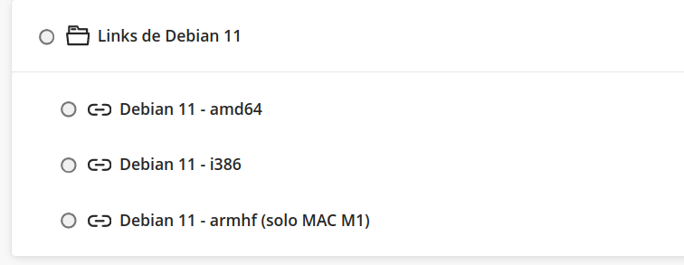
Figura 2: Links de descarga de VirtualBox y UTM disponibles en Blackboard
En criollo: La virtualización es como tener un local dentro de un shopping. El shopping es tu computadora real (el "host"), y el local que abrís adentro es la máquina virtual (el "guest"). El local tiene sus propias paredes, su propio stock y su propio empleado — todo separado del resto.
Preparación para la instalación
La guía usa VirtualBox como software de virtualización. Para crear la máquina virtual donde instalar Debian, seguís estos pasos:
Paso 1 — Crear nueva máquina virtual
En VirtualBox, ir a Machine > New (arriba a la izquierda):
Figura 3: Formulario "Create Virtual Machine" — paso de nombre y sistema operativo
Completar los campos:
- Name: nombre identificatorio de la VM, por ejemplo Debian11_CA
- Folder: directorio donde se guardará la VM
- ISO Image: seleccionar el archivo ISO de Debian que descargaste
- Edition, Type, Version: se completan automáticamente al seleccionar la ISO
- Skip Unattended Installation: debe estar tildado (esto es importante: si no lo tildás, VirtualBox intenta instalar solo y se rompe todo)
- Clic en Next
En criollo: "Skip Unattended Installation" significa "quiero hacer la instalación a mano, paso a paso". Si lo destildás, VirtualBox trata de instalar automáticamente y generalmente lo hace mal. Tildalo siempre.
Paso 2 — Hardware
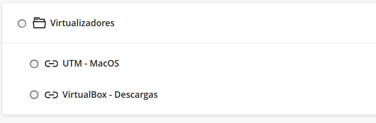
Figura 4: Configuración de RAM y procesadores para la VM
- Base Memory (RAM): cantidad de RAM que le asignás a la VM desde tu máquina física. 2 GB (2048 MB) es más que suficiente para Debian sin entorno gráfico.
- Processors: cantidad de núcleos del procesador a asignar. El valor sugerido por VirtualBox es correcto.
En criollo: La RAM que le asignás a la VM la "tomás prestada" de tu computadora física mientras la VM está corriendo. Si tu PC tiene 8 GB de RAM, podés darle 2 GB a la VM y quedarte con 6 para vos. Cuando apagás la VM, esa RAM vuelve a estar disponible.
Paso 3 — Disco Rígido Virtual

Figura 5: Configuración del disco rígido virtual
- Disk Size: tamaño del disco virtual. VirtualBox sugiere 20 GB, lo cual es suficiente. Importante: el disco virtual es dinámico por defecto, lo que significa que no ocupa esos 20 GB en tu disco físico desde el principio — solo ocupa el espacio que realmente uses dentro de la VM.
- Pre-Allocate Full Size: si lo tildás, VirtualBox reserva todo el espacio en disco físico de una. No lo tildes — así el archivo de la VM empieza pequeño y crece solo cuando necesita.
En criollo: Es como reservar una mesa para 10 personas pero que los platos solo aparezcan cuando los pedís. Si activás "Pre-Allocate", es como si pagás la comida de los 10 de antemano aunque vengan 3.
Paso 4 — Resumen
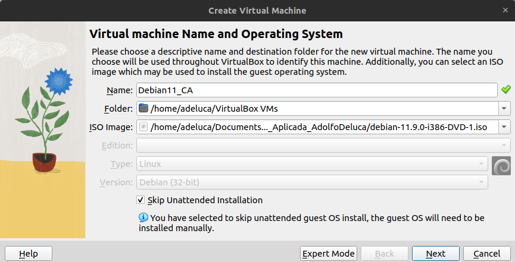
Figura 6: Pantalla de resumen con toda la configuración de la VM
Se muestra un resumen con todas las opciones seleccionadas. Si todo está bien, clic en Finish para crear la VM y comenzar la instalación.
Instalación paso a paso
Una vez creada la VM, aparece en la lista de VirtualBox. Hacés clic en Start para encenderla.
Figura 7: Vista de la VM en VirtualBox lista para iniciar
Paso 1 — Seleccionar "Install"
Al arrancar, aparece el menú del instalador de Debian en modo texto (BIOS mode). Seleccionamos Install (NO "Graphical install").
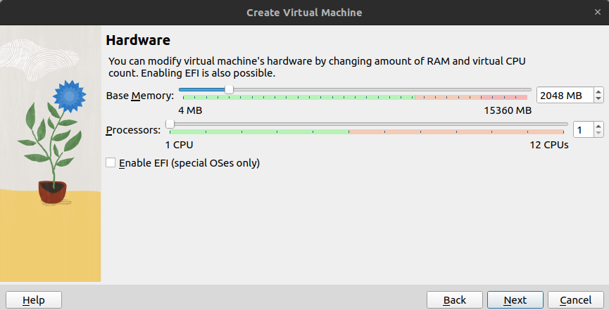
Figura 8: Menú del instalador de Debian 11 — seleccionar "Install"

Figura 9: Opción "Install" seleccionada y resaltada
En criollo: Elegimos "Install" (modo texto) y no "Graphical install" (modo gráfico) porque para esta materia aprendemos a usar Linux desde la terminal. El instalador gráfico hace lo mismo pero con ventanitas, y lo evitamos para familiarizarnos con el entorno de texto desde el principio.
Paso 2 — Idioma: English
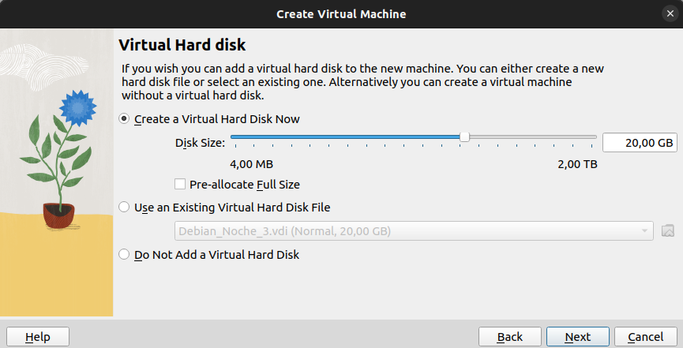
Figura 10: Pantalla de selección de idioma del instalador
Seleccionamos English como idioma del sistema.
Paso 3 — País: Other > South America > Argentina

Figura 11: Selección de país — Argentina en Sudamérica
Navegamos por Other > South America > Argentina. Esto configura la zona horaria del sistema.
Paso 4 — Configuración local (locale)
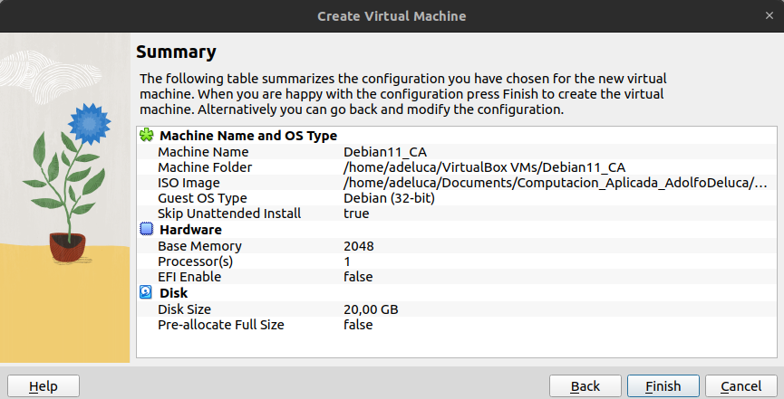
Figura 12: Selección de locale — United States (en_US.UTF-8)
Para la configuración local (que afecta formatos de fecha, moneda, etc.) seleccionamos United States con encoding en_US.UTF-8.
En criollo: El "locale" es como el "dialecto" del sistema operativo. Con idioma en inglés y locale de Estados Unidos, todo el sistema habla inglés americano. Lo importante es que pusiste Argentina para la zona horaria.
Paso 5 — Teclado: Latin American
Figura 13: Configuración del teclado — Latin American
Seleccionamos Latin American para que el sistema reconozca la Ñ y los caracteres especiales del teclado latinoamericano.
Paso 6 — Nombre de host (hostname)
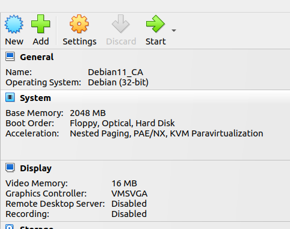
Figura 14: Configuración del hostname de la máquina
Figura 15: Hostname ingresado como "debian11-CA"
El hostname es el nombre interno de la máquina en la red. Se puede usar debian11-CA u otro nombre descriptivo.
En criollo: El hostname es como el apodo de tu computadora en la red. Si entrás a otra máquina y hacés un ping, el nombre que va a aparecer es este.
Paso 7 — Nombre de dominio: vacío

Figura 16: Campo de domain name — se deja vacío

Figura 17: Confirmación del domain name vacío
El domain name se deja vacío. Este campo se usa en organizaciones con redes corporativas; para uso personal o educativo no hace falta.
Paso 8 — Contraseña de root
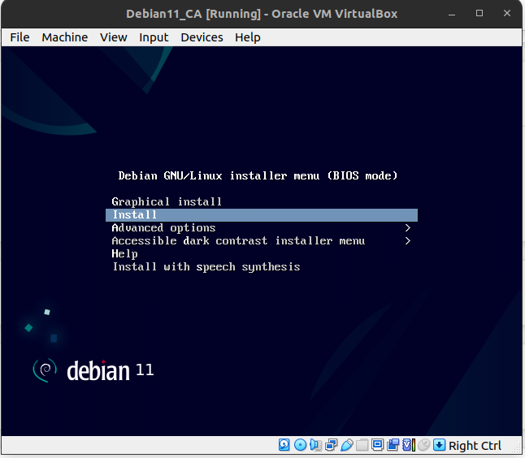
Figura 18: Configuración de la contraseña del usuario root
Root es el superusuario de Linux — tiene permisos absolutos sobre todo el sistema. Para esta materia, la cátedra sugiere usar palermo como contraseña para que sea fácil de recordar. Se debe repetir en el siguiente paso.
En criollo: Root es el "dios" del sistema operativo: puede hacer todo, borrar todo, romper todo. Por eso en producción se usa una contraseña muy fuerte y se evita loguear directo como root. En un entorno de práctica, "palermo" alcanza.
Paso 9 — Nombre del nuevo usuario

Figura 19: Ingreso del nombre completo del nuevo usuario
Se crea una cuenta de usuario normal (no root) para las actividades cotidianas. La cátedra sugiere usar alumno como nombre genérico.
Paso 10 — Username (cuenta de login)
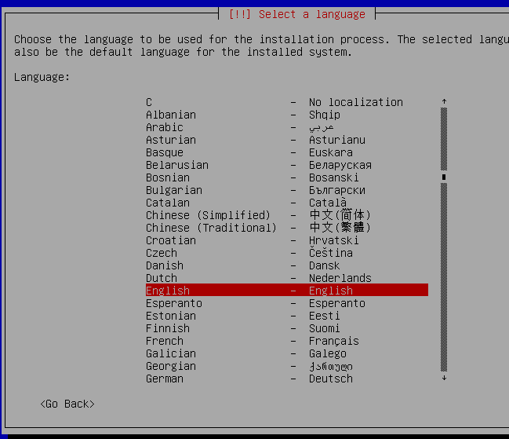
Figura 20: Ingreso del username para la cuenta de login
El username es el nombre de la cuenta con la que iniciás sesión (sin espacios, en minúsculas). Si el nombre completo es "Carlos Pérez", el username podría ser cperez. La cátedra sugiere usar alumno.
En criollo: El "nombre completo" es el que aparece en "Hola, Carlos Pérez" cuando abrís una sesión. El username es el que escribís para loguear:
login: cperez. Son dos cosas distintas.
Paso 11 — Password del usuario normal

Figura 21: Ingreso de contraseña del usuario normal
Se ingresa la contraseña para el usuario (no root) y se repite para confirmar. La cátedra sugiere palermo.
Paso 12 — Método de partición de disco
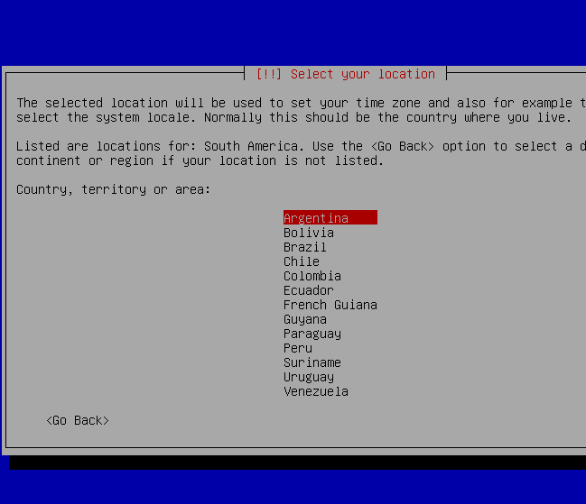
Figura 22: Selección del método de partición — "Guided - use entire disk"
Seleccionamos Guided – use entire disk (guiada, usar el disco entero). Esto le dice al instalador que particione el disco virtual automáticamente.
En criollo: Particionar el disco es como dividir una casa en habitaciones. En vez de tener todo en un solo espacio gigante, el sistema operativo organiza el disco en secciones con roles específicos (sistema, datos de usuarios, temporales, etc.).
Paso 13 — Seleccionar el disco
Figura 23: Selección del disco virtual (único disponible)
Solo hay un disco virtual disponible (el que creamos antes). Lo seleccionamos.
Paso 14 — Esquema de partición
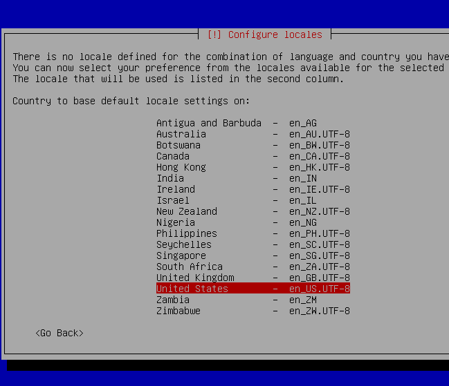
Figura 24: Esquema de partición — "Separate /home, /var, and /tmp partitions"
Seleccionamos Separate /home, /var, and /tmp partitions (particiones separadas para /home, /var y /tmp). Esto crea particiones independientes para:
- / — raíz del sistema (sistema operativo)
- /home — archivos del usuario
- /var — datos variables (logs, bases de datos)
- /tmp — archivos temporales
- swap — espacio de intercambio (memoria virtual en disco)
En criollo: Separar las particiones es como tener cajones distintos en un escritorio: uno para herramientas del sistema, otro para tus documentos personales, otro para la basura temporal. Si uno se llena o se rompe, no arrastra a los demás.
Paso 15 — Finalizar la partición

Figura 25: Resumen de particiones — opción "Finish partitioning and write changes to disk"
Se muestra un resumen del esquema de particiones que se va a crear. Seleccionamos Finish partitioning and write changes to disk.
El esquema resultante en el ejemplo del apunte es:
- #1 primary — 4.4 GB — ext4 — /
- #5 logical — 1.8 GB — ext4 — /var
- #6 logical — 1.0 GB — swap — (memoria virtual)
- #7 logical — 389 MB — ext4 — /tmp
- #8 logical — 13.8 GB — ext4 — /home
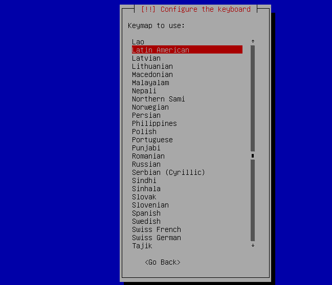
Figura 26: Confirmación "Write the changes to disks?" — seleccionar Yes
Confirmamos con Yes para escribir los cambios en el disco virtual.
Paso 16 — Contenido extra de instalación: No

Figura 27: "Scan extra installation media?" — seleccionar No
Se pregunta si queremos escanear medios adicionales de instalación. Seleccionamos No.
Paso 17 — Usar mirror de red: Sí > Argentina > deb.debian.org

Figura 28: "Use a network mirror?" — seleccionar Yes
Un mirror es un servidor espejo que contiene copias de los paquetes de Debian y permite descargar actualizaciones y software adicional. Seleccionamos Yes y luego navegamos: Argentina > deb.debian.org.

Figura 29: Selección del mirror — deb.debian.org para Argentina
En criollo: Un mirror es como un repositorio local de lo que tiene el servidor principal. En vez de que todos en Argentina se conecten al servidor central en Alemania, hay copias locales más cercanas y más rápidas.
deb.debian.orgdetecta automáticamente el mirror más cercano.
Paso 18 — HTTP Proxy: vacío
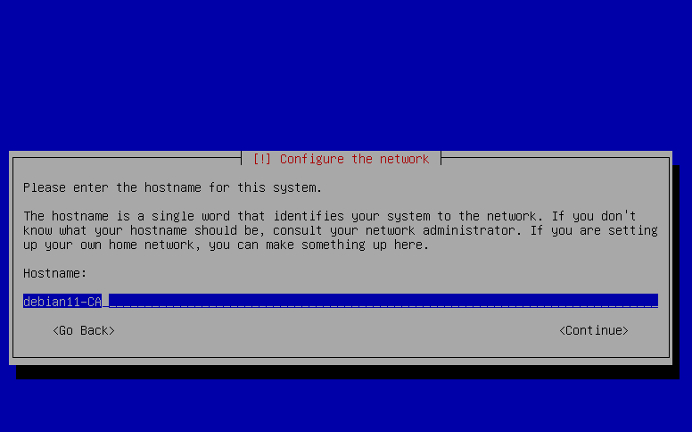
Figura 30: Campo de HTTP proxy — se deja en blanco
El campo de HTTP proxy se deja en blanco. Solo se completa en redes corporativas o institucionales que requieran un proxy para acceder a internet.
Paso 19 — Popularity contest: No

Figura 31: "Participate in the package usage survey?" — seleccionar No
Se pregunta si queremos enviar estadísticas anónimas de uso de paquetes a los desarrolladores de Debian. La cátedra recomienda responder No.
Paso 20 — Selección de software adicional
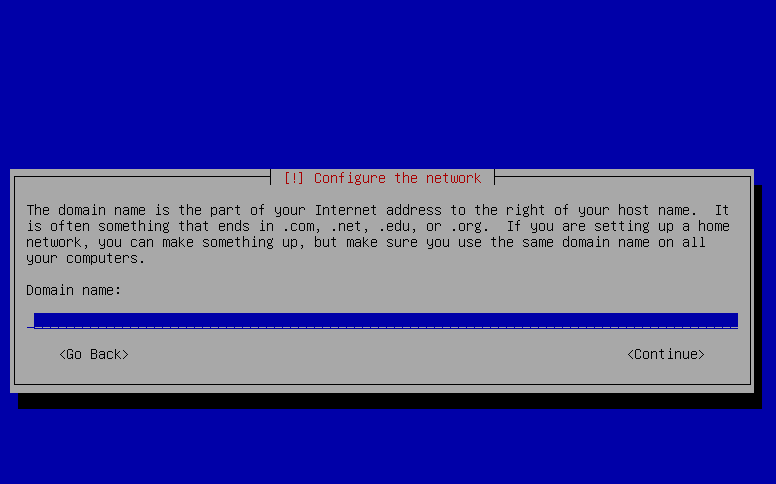
Figura 32: Software selection — dejar solo "standard system utilities"
Esta pantalla permite elegir qué software adicional instalar. Con la barra espaciadora se destildan las opciones que tengan asterisco ([*]), dejando únicamente seleccionado standard system utilities. Luego se selecciona Continue.
En criollo: Acá te preguntan si querés instalar un entorno gráfico (GNOME, KDE, Xfce, etc.) o un servidor web. Para esta materia usamos Linux en modo texto (terminal pura), así que dejamos solo las utilidades básicas. Sin ventanas, sin mouse, solo la consola.
Paso 21 — Instalación de GRUB: Yes

Figura 33: "Install the GRUB boot loader?" — seleccionar Yes
GRUB es el gestor de arranque (boot loader): el programa que se ejecuta cuando la computadora inicia y que carga el sistema operativo. Seleccionamos Yes.
En criollo: GRUB es como el portero del edificio que, cuando llegás a la mañana, te pregunta "¿a qué piso querés ir?" (si tenés varios sistemas operativos). Si solo tenés Debian, lo carga directamente.
Paso 22 — Dispositivo para GRUB: /dev/sda

Figura 34: Selección del dispositivo donde instalar GRUB — /dev/sda
Seleccionamos el disco que nos ofrece el instalador, que empieza con /dev/sda. Este es el disco virtual que creamos.
En criollo: En Linux, los discos se llaman
/dev/sda,/dev/sdb, etc. (en lugar de C:, D: como en Windows). Laaes el primer disco, label segundo, y así. Las particiones son/dev/sda1,/dev/sda2, etc.
Paso 23 — Instalación completa

Figura 35: "Installation complete" — clic en Continue para reiniciar
La instalación finalizó. Clic en Continue para que la VM reinicie y arranque con Debian instalado.
Paso 24 — Primer login en Debian 11
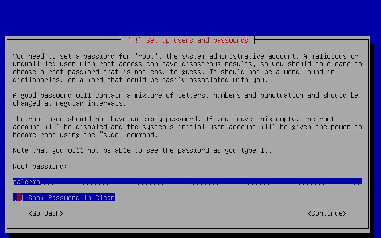
Figura 36: Pantalla de login de Debian 11 — prompt del sistema
Figura 37: Login exitoso como root en Debian 11
¡El sistema está instalado y listo! Podés loguearte con:
- El usuario normal creado durante la instalación (alumno)
- El superusuario: root
Importante: Al escribir la contraseña en Linux, no aparece nada en pantalla — ni asteriscos, ni puntos. Es normal: el sistema igual está registrando lo que escribís.
En criollo: Linux no muestra asteriscos al tipear la contraseña por seguridad: si alguien mira tu pantalla desde lejos, no puede saber ni siquiera cuántos caracteres tiene tu contraseña. Escribís y dale Enter nomás.
El prompt del superusuario root se ve así:
root@debian11-CA:~#
El # al final indica que estás logueado como root. Un usuario normal tiene $:
alumno@debian11-CA:~$
Glosario rápido
| Término | Definición técnica | En criollo |
|---|---|---|
| Debian | Distribución de GNU/Linux mantenida por la comunidad, conocida por su estabilidad | Una de las versiones más estables y confiables de Linux — la "base" de muchísimas otras distros |
| Bullseye | Nombre en clave de Debian 11 (versión publicada en 2021) | El nombre simpático que le ponen a cada versión de Debian (siempre son personajes de Toy Story) |
| ISO | Archivo que contiene una imagen exacta de un sistema de archivos (como un CD/DVD digital) | Un archivo que tu computadora lee como si fuera un disco físico de instalación |
| LTS | Long Time Support — soporte extendido durante más años del ciclo habitual | La versión "tranquilona" que van a mantener y parchear por mucho tiempo |
| Arquitectura | Tipo de procesador para el que está compilado el software | Hay que bajar la versión correcta: amd64 para PCs normales, arm64 para Macs con M1/M2 |
| VirtualBox | Software de virtualización gratuito de Oracle que permite crear y correr VMs | El programa que crea la "computadora dentro de la computadora" |
| VM (Máquina Virtual) | Emulación de una computadora completa por software, corriendo sobre otra computadora real | Una computadora falsa que vive dentro de la tuya real |
| Host | La máquina física real que corre el software de virtualización | Tu computadora de verdad |
| Guest | La máquina virtual que corre dentro del host | La computadora falsa que creaste con VirtualBox |
| Hostname | Nombre con el que se identifica una máquina en la red | El apodo de tu computadora |
| Root | Usuario administrador supremo de Linux con permisos totales | El dios del sistema — puede hacer y romper todo |
| Username | Nombre de la cuenta de usuario para el login | Tu nombre de usuario para entrar al sistema (sin espacios, en minúsculas) |
| Partición | División lógica del disco rígido que el SO trata como unidades independientes | Los cajones del disco: cada uno tiene su función |
| /home | Partición donde se guardan los archivos del usuario | Tu carpeta personal en Linux (equivalente a "Mis Documentos" en Windows) |
| /var | Partición para datos variables como logs y bases de datos | El "buzón" del sistema donde caen logs y datos que cambian seguido |
| /tmp | Partición para archivos temporales | La papelera que se vacía sola al reiniciar |
| swap | Partición que funciona como extensión de la RAM en disco | La RAM de emergencia que usa el sistema cuando se queda sin memoria real |
| GRUB | Grand Unified Bootloader — gestor de arranque que carga el SO al iniciar | El "portero" que arranca el sistema operativo cuando prendés la computadora |
| Mirror | Servidor espejo con copias de los repositorios oficiales de paquetes | Un servidor cercano que tiene copia de los programas para descarga más rápida |
| apt | Advanced Package Tool — gestor de paquetes de Debian/Ubuntu | El "mercado" donde instalás, actualizás y borrás programas desde la terminal |
| Pre-allocate Full Size | Opción de VirtualBox para reservar todo el espacio del disco virtual de inmediato | Si lo tildás, el archivo de la VM ocupa todo el espacio desde el principio aunque esté vacío |
Multiple Choice — 30 preguntas
1. ¿Cuál es el nombre en clave de Debian versión 11?
2. ¿En qué fecha se publicó Debian 11 (Bullseye)?
3. ¿Cuándo finaliza el ciclo de vida de soporte de Debian 11?
4. ¿Qué arquitectura de ISO debería descargar un alumno con una PC normal con procesador Intel de 64 bits?
5. ¿Qué arquitectura corresponde a las Mac con chip Apple M1?
6. ¿Qué es una imagen ISO?
7. ¿Cuál es el software de virtualización recomendado por la cátedra para usuarios de Windows?
8. ¿Qué software de virtualización se recomienda para usuarios de macOS en el apunte?
9. Al crear una nueva VM en VirtualBox, ¿qué representa el campo "Folder"?
10. ¿Por qué es importante tildar "Skip Unattended Installation" al crear la VM?
11. ¿Cuánta RAM (Base Memory) se recomienda asignar a la VM para instalar Debian?
12. ¿Qué ocurre con el espacio en disco físico si NO se activa la opción "Pre-Allocate Full Size"?
13. Durante la instalación de Debian, ¿qué opción se debe seleccionar en el menú inicial del instalador?
14. ¿Qué configuración de teclado se debe seleccionar para que Debian reconozca la Ñ?
15. ¿Qué es el hostname en el contexto de la instalación de Debian?
16. En el paso de nombre de dominio durante la instalación, ¿qué se recomienda hacer?
17. ¿Qué es root en Linux?
18. Al escribir una contraseña en el terminal de Linux durante la instalación, ¿qué se ve en pantalla?
19. ¿Qué esquema de partición se selecciona durante la instalación según el apunte?
20. ¿Cuál es la función de la partición swap en Linux?
21. En el esquema de particiones del ejemplo del apunte, ¿en qué partición se almacenan los archivos personales del usuario?
22. Al finalizar la configuración de las particiones, el instalador pregunta "Write the changes to disks?". ¿Qué se debe responder?
23. ¿Para qué sirve un mirror de red en la instalación de Debian?
24. ¿Qué mirror se recomienda seleccionar para Argentina durante la instalación?
25. ¿Qué se debe hacer con el campo "HTTP Proxy" durante la instalación?
26. En el paso de selección de software adicional, ¿qué única opción debe quedar seleccionada?
27. ¿Qué es GRUB y para qué se instala durante el proceso?
28. ¿Dónde se instala GRUB durante la instalación de Debian en VirtualBox?
29. ¿Cuál es el símbolo que aparece al final del prompt cuando estás logueado como root en Linux?
30. Un alumno crea una VM con 20 GB de disco virtual sin activar "Pre-Allocate Full Size" e instala Debian. Después de la instalación, el sistema tiene 3 GB de datos. ¿Cuánto espacio ocupa el archivo de la VM en el disco físico de su computadora? ---
3. Virtualización
¿Qué es la virtualización?
La virtualización es la tecnología que permite ejecutar múltiples sistemas operativos y aplicaciones en el mismo hardware físico de manera eficiente. Esto se logra creando máquinas virtuales que trabajan en un entorno simulado.
El software de virtualización imita las funciones del hardware físico recreando sus componentes y convirtiéndolos en lógicos (virtuales) para que la máquina virtual pueda utilizarlos. Los componentes que se virtualizan incluyen:
- Disco rígido
- Red (placa de red)
- CPU (procesador)
- Video (placa de video)
- Y otros periféricos
En criollo: La virtualización es como tener varios departamentos dentro de un mismo edificio. El edificio es el hardware físico real, y cada departamento es una máquina virtual independiente con su propio sistema operativo, su propia "heladera" (disco), su propio "teléfono" (red) y su propio "televisor" (video). Cada inquilino cree que tiene un edificio entero para él, pero en realidad comparte la estructura.
Una ventaja clave es la flexibilidad en la administración de recursos: en la medida que el hardware físico lo permita, es posible escalar horizontal y verticalmente las máquinas virtuales, tanto en capacidad (más RAM, más disco) como en cantidad (más VMs).
En criollo: "Escalar horizontalmente" significa agregar más máquinas virtuales (más departamentos en el edificio). "Escalar verticalmente" significa darle más recursos a una máquina virtual existente (agrandar un departamento). Todo sin comprar hardware nuevo.
Componentes
Los recursos y la disponibilidad de cada máquina virtual dependen del hardware anfitrión que les da soporte. A los servidores que realizan este trabajo de administrar y repartir los recursos se los llama hipervisores.
Historia del hipervisor
El concepto de hipervisor tiene origen en fines de los años '60 y principios de los '70, con el uso del mainframe.
Un mainframe es un tipo de computadora diseñada por IBM, orientada al procesamiento de datos masivos. Algunos bancos en Argentina aún los siguen usando. El mainframe fue diseñado para que múltiples usuarios tuvieran acceso a una parte del sistema, simulando un sistema operativo para cada uno de ellos.
El primer modelo de mainframe con capacidad de virtualización fue el IBM S/360 Modelo 67.
En criollo: Imaginá un mainframe como un edificio de servidores enorme de los años 60, donde cada empleado del banco podía "sentarse" en su propia terminal y creer que tenía una computadora para él solo. En realidad, todos compartían el mismo hardware gigante. Eso era la primera forma de virtualización.
En tiempos más modernos, la empresa VMware desarrolló los primeros hipervisores a finales de los años '90. Esto fue posible gracias a que los fabricantes de microprocesadores Intel y AMD desarrollaron extensiones específicas en sus procesadores:
- IVT — Intel Virtualization Technology (Intel)
- AMD-V — AMD Virtualization (AMD)
Estas extensiones permiten un uso eficiente de los procesadores y la generación de entornos emulados con buen rendimiento.
En criollo: Antes de IVT y AMD-V, virtualizar un procesador era como hacer malabarismo con una mano: se podía pero era lento y difícil. Con estas extensiones, el procesador mismo "entiende" la virtualización y la ejecuta de forma nativa y eficiente.
Hipervisor de tipo 1 (BareMetal)
El hipervisor de tipo 1, también llamado BareMetal, corre el sistema operativo de virtualización directamente sobre el hardware físico, sin ningún sistema operativo intermedio. Las máquinas virtuales que se alojan en él tienen acceso directo a los componentes del hardware, administrados por ese mismo hipervisor.
En criollo: En el tipo 1, el hipervisor ES el sistema operativo. No hay Windows ni Linux debajo — el hipervisor arranca directo del hardware y lo gestiona todo. Es como si el "portero del edificio" no tuviera que reportarle a nadie: él mismo maneja las llaves, los ascensores y los departamentos. Esto lo hace más eficiente y más seguro.
Ejemplos de hipervisores Tipo 1:
- Proxmox VE — solución de código abierto muy usada en empresas medianas
- Xen — usado por Amazon Web Services (AWS) en sus primeros años
- KVM — integrado en el kernel de Linux
- MS Hyper-V — solución de Microsoft para servidores Windows
- VMware ESXi — producto empresarial de VMware, muy popular en data centers
Casos de uso típicos: servidores de producción en empresas, data centers, nubes privadas. Se usa cuando se necesita máximo rendimiento y la mayor cantidad posible de VMs en un mismo hardware.
Hipervisor tipo 2 (Hosted)
El hipervisor de tipo 2, también llamado Hosted (alojado), funciona de manera diferente: sobre el hardware corre primero un sistema operativo estándar (Windows, GNU/Linux u otro), y sobre ese sistema operativo se instala el software de virtualización como una aplicación más.
En criollo: En el tipo 2, el hipervisor es un programa más que instalás como cualquier otro. Primero tenés Windows (o Linux), y encima instalás VirtualBox o VMware. Es como si el edificio ya tuviera un administrador propio (el SO), y el virtualizador fuera un inquilino especial que además subalquila habitaciones adentro de su departamento. Es más práctico para uso personal o en una PC de escritorio, pero menos eficiente que el tipo 1.
Ejemplos de hipervisores Tipo 2:
- VMware Workstation / VMware Player — producto de VMware para estaciones de trabajo
- Parallels Desktop — popular en macOS para correr Windows junto a macOS
- UTM — virtualizador para macOS, especialmente útil en chips Apple Silicon (M1/M2)
- VirtualBox — solución gratuita y de código abierto de Oracle, muy usada para educación y desarrollo
- QEMU — emulador/virtualizador de código abierto con soporte de múltiples arquitecturas
Casos de uso típicos: uso personal, entornos de desarrollo, aprendizaje y práctica (como en esta materia). Es más fácil de instalar y usar que el tipo 1, pero tiene algo más de overhead porque el hipervisor depende del SO host.
Diferencia clave entre Tipo 1 y Tipo 2
| Característica | Tipo 1 (BareMetal) | Tipo 2 (Hosted) |
|---|---|---|
| ¿Sobre qué corre? | Directamente sobre el hardware | Sobre un SO (Windows/Linux/macOS) |
| Rendimiento | Mayor (acceso directo al hardware) | Menor (capa extra del SO host) |
| Uso típico | Servidores, data centers, producción | PCs, desarrollo, educación |
| Ejemplos | VMware ESXi, Hyper-V, Proxmox, KVM | VirtualBox, VMware Workstation, UTM |
| Complejidad de instalación | Mayor | Menor |
Glosario rápido
| Término | Definición técnica | En criollo |
|---|---|---|
| Virtualización | Tecnología que permite ejecutar múltiples SOs y aplicaciones en el mismo hardware físico | Tener varias computadoras virtuales adentro de una computadora real |
| Máquina Virtual (VM) | Emulación por software de una computadora completa con sus propios recursos virtualizados | Una computadora falsa que corre dentro de una real |
| Hipervisor | Software que crea, gestiona y distribuye recursos entre las máquinas virtuales | El "administrador del edificio" que reparte recursos entre las VMs |
| Hardware host | El hardware físico real donde corre el hipervisor | La computadora real de verdad |
| Hardware guest | Los recursos de hardware que "ve" la máquina virtual (virtualizados) | El hardware falso que le muestra el hipervisor a la VM |
| Mainframe | Computadora IBM de grandes dimensiones diseñada para procesamiento masivo de datos | Una computadora gigante del tamaño de un armario, usada por bancos y grandes empresas |
| Hipervisor Tipo 1 (BareMetal) | Hipervisor que corre directamente sobre el hardware sin SO intermedio | El virtualizador "desnudo" — arranca directamente del hierro |
| Hipervisor Tipo 2 (Hosted) | Hipervisor que corre sobre un SO existente como una aplicación más | El virtualizador que instalás como un programa normal encima de Windows o Linux |
| IVT | Intel Virtualization Technology — extensión del procesador Intel que soporta virtualización eficiente | El "chip extra" en los procesadores Intel que hace que la virtualización sea rápida |
| AMD-V | AMD Virtualization — extensión del procesador AMD equivalente al IVT de Intel | Lo mismo que IVT pero para procesadores AMD |
| Escalado vertical | Aumentar los recursos de una VM existente (más CPU, más RAM) | Agrandar una VM que ya tenés (darle más potencia) |
| Escalado horizontal | Agregar más máquinas virtuales al pool de recursos | Sumar más VMs al conjunto existente |
| VirtualBox | Hipervisor Tipo 2 gratuito de Oracle, multiplataforma | El virtualizador que usamos en esta materia |
| VMware ESXi | Hipervisor Tipo 1 empresarial de VMware para data centers | El virtualizador "serio" que usan las grandes empresas en sus servidores |
| Proxmox VE | Plataforma de virtualización de código abierto basada en KVM y Linux | Un sistema completo de virtualización empresarial gratuito y open source |
| KVM | Kernel-based Virtual Machine — módulo del kernel Linux que convierte Linux en hipervisor Tipo 1 | La virtualización que viene incorporada en Linux |
Multiple Choice — 30 preguntas
1. ¿Qué es la virtualización?
2. ¿Cómo logra el software de virtualización que una máquina virtual use los componentes de hardware?
3. ¿Cuáles de los siguientes son componentes del hardware físico que el software de virtualización convierte en lógicos?
4. ¿Qué significa "escalar verticalmente" en el contexto de la virtualización?
5. ¿Qué significa "escalar horizontalmente" en virtualización?
6. ¿Cómo se denomina al servidor que administra y distribuye los recursos entre las máquinas virtuales?
7. ¿De qué época data el concepto de hipervisor en sus orígenes?
8. ¿Qué es un mainframe?
9. ¿Cuál fue el primer modelo de mainframe IBM con capacidad de virtualización?
10. ¿Qué empresa desarrolló los primeros hipervisores modernos a finales de los años '90?
11. ¿Qué es IVT y quién lo desarrolló?
12. ¿Cuál es la extensión de virtualización equivalente al IVT de Intel pero para procesadores AMD?
13. ¿Cuál es la característica definitoria de un hipervisor de Tipo 1 (BareMetal)?
14. ¿Qué ventaja principal tiene el hipervisor Tipo 1 respecto al Tipo 2?
15. ¿Cuál de los siguientes es un hipervisor de Tipo 1 (BareMetal)?
16. ¿Cuál de los siguientes es un hipervisor de Tipo 2 (Hosted)?
17. ¿Dónde corre el hipervisor en un esquema de Tipo 2 (Hosted)?
18. ¿Para qué tipo de uso es más adecuado el hipervisor Tipo 2?
19. ¿Cuál de los siguientes NO es un hipervisor de Tipo 1?
20. ¿Cuál de las siguientes afirmaciones sobre VirtualBox es correcta?
21. ¿Qué es Proxmox VE?
22. Un administrador de sistemas necesita alojar 50 máquinas virtuales en un servidor dedicado con máximo rendimiento. ¿Qué tipo de hipervisor debería elegir?
23. ¿Qué diferencia existe entre el hardware "host" y el hardware "guest" en virtualización?
24. ¿Qué permite hacer la virtualización respecto a los recursos físicos disponibles?
25. KVM es un hipervisor de Tipo 1 que se distingue de los demás porque:
26. ¿Qué tecnología fue necesaria en los procesadores para que VMware pudiera desarrollar hipervisores modernos eficientes?
27. Un estudiante instala VirtualBox en su notebook con Windows 11 y crea una VM con Debian. ¿Con qué tipo de hipervisor está trabajando?
28. ¿Cuál de las siguientes afirmaciones sobre el uso actual del mainframe es correcta según el apunte?
29. ¿Cuál es el principal inconveniente del hipervisor Tipo 2 respecto al Tipo 1?
30. UTM es un software de virtualización que aparece en la lista de hipervisores Tipo 2. ¿Para qué plataforma es especialmente conocido? ---
4. Shell: introducción a la terminal
Terminal de texto
La terminal de texto es una interfaz de línea de comandos (CLI — Command Line Interface), donde los usuarios interactúan con el sistema operativo a través de comandos de texto escritos a mano.
Para la administración de GNU/Linux, la terminal es una herramienta fundamental, ya que permite un control más directo y preciso del sistema en comparación a las interfaces gráficas.
Existen dos tipos de interfaz:
| Tipo | Sigla | Nombre completo | Descripción |
|---|---|---|---|
| Línea de comandos | CLI | Command Line Interface | Se interactúa escribiendo comandos de texto |
| Gráfica | GUI | Graphic User Interface | Se interactúa con ventanas, íconos y mouse |
Si bien la GUI permite realizar muchas de las tareas que se pueden hacer por CLI, la CLI le da al administrador de sistemas mayor flexibilidad y rapidez.
En criollo: La GUI es como manejar un auto con automático: cómodo y fácil. La CLI es como manejar con manual: más control, más precisión, y cuando la cosa se pone difícil (un servidor sin pantalla, un sistema roto, automatizar 1000 tareas), el manual gana siempre. Por eso los administradores de sistemas aman la terminal.
Shell
El shell es el programa que interpreta los comandos que el usuario escribe en la terminal. Actúa como intermediario entre el usuario y el sistema operativo: el usuario escribe un comando, el shell lo interpreta y le dice al sistema operativo qué hacer.
En criollo: El shell es como un traductor simultáneo. Vos escribís "listame todos los archivos de esta carpeta", el shell traduce eso al idioma que entiende el sistema operativo, el SO lo ejecuta, y el shell te devuelve el resultado en pantalla. Sin el shell, el SO no te entendería.
Existen varios shells en la actualidad, cada uno con sus características propias:
sh — Bourne Shell
- Creador: Stephen Bourne
- Época: años 70
- Contexto: fue el primer shell creado para Unix
- Es el shell original, la base de casi todos los shells modernos
En criollo:
shes el abuelo de todos los shells. Básico, sin lujos, pero sentó las bases de todo lo que vino después.
Bash — Bourne Again Shell
- Significado del nombre: "Bourne Again" es un juego de palabras con "born again" (renacer) y el apellido del creador del shell original (Bourne)
- Contexto: es el más común en los sistemas GNU/Linux; es una evolución de sh con muchas más funcionalidades
- Predeterminado en la mayoría de las distribuciones de Linux (incluida Debian)
En criollo: Bash es el shell de referencia. Si estudiás Linux, estudiás Bash. Es el que viene instalado por defecto en casi toda distribución y el que vas a usar el 99% del tiempo en esta materia y en el mundo laboral.
Cuando abrís la terminal en Debian y ves el prompt ($ o #), estás usando Bash.
Zsh — Z Shell
- Base:
sh, pero con características avanzadas - Es uno de los shells más potentes y flexibles disponibles
- Popular entre desarrolladores y power users por sus funciones de autocompletado, temas y plugins (como el framework Oh My Zsh)
En criollo: Zsh es como Bash pero con esteroides: autocompletado inteligente, corrección de errores de tipeo, temas visuales, historial compartido entre terminales. macOS cambió su shell predeterminado de Bash a Zsh en 2019.
Csh — C Shell
- Creador: Bill Joy
- Característica principal: está basado en la sintaxis del lenguaje de programación C
- Pensado para programadores que ya conocen C y quieren que el shell use una sintaxis familiar
En criollo: Csh es para los programadores de C que querían que la terminal hablara el mismo idioma que su código. Si sabés C, la sintaxis de Csh te resulta conocida.
Ksh — Korn Shell
- Contexto: es una evolución de Csh que incluye funciones avanzadas para programadores en C
- Combina características de sh y csh, tomando lo mejor de ambos
- Muy usado en entornos empresariales Unix (especialmente en AIX y Solaris)
En criollo: Ksh es el hijo de sh y csh: tomó la compatibilidad y robustez de uno, y las características para programadores C del otro. Es el shell "serio" de las grandes empresas Unix.
Resumen comparativo de shells
| Shell | Nombre completo | Basado en | Característica principal |
|---|---|---|---|
| sh | Bourne Shell | — (original) | Primer shell Unix, base de todos |
| Bash | Bourne Again Shell | sh | El más usado en GNU/Linux, shell predeterminado |
| Zsh | Z Shell | sh | El más potente y flexible, con funciones avanzadas |
| Csh | C Shell | Sintaxis de C | Sintaxis basada en el lenguaje C |
| Ksh | Korn Shell | sh + Csh | Combinación de sh y csh, popular en Unix empresarial |
Glosario rápido
| Término | Definición técnica | En criollo |
|---|---|---|
| Terminal | Interfaz de línea de comandos (CLI) donde el usuario ingresa comandos de texto | La "pantalla negra" donde escribís comandos para hablarle al sistema operativo |
| CLI | Command Line Interface — interfaz de texto para interactuar con el SO | La forma de usar la computadora escribiendo, sin mouse ni ventanas |
| GUI | Graphic User Interface — interfaz visual con ventanas, íconos y mouse | La forma habitual de usar Windows o macOS con el mouse |
| Shell | Programa que interpreta los comandos del usuario y los comunica al SO | El traductor que convierte lo que escribís en órdenes que el SO entiende |
| Prompt | Indicador en la terminal que señala que el shell está listo para recibir un comando | El símbolo ($ o #) que ves en la terminal esperando que escribas algo |
| sh | Bourne Shell — primer shell creado para Unix, en los años 70 | El abuelo de todos los shells |
| Bash | Bourne Again Shell — evolución de sh, shell predeterminado en la mayoría de distros Linux | El shell que usás en Debian y en casi toda distribución de Linux |
| Zsh | Z Shell — shell potente y flexible con funciones avanzadas, predeterminado en macOS | El shell favorito de los desarrolladores modernos |
| Csh | C Shell — shell con sintaxis basada en el lenguaje de programación C | El shell para programadores de C |
| Ksh | Korn Shell — evolución de Csh que combina características de sh y csh | El shell "todo terreno" muy usado en entornos Unix empresariales |
| Administrador de sistemas | Profesional responsable de gestionar, mantener y configurar sistemas informáticos | El que se encarga de que los servidores funcionen bien |
Multiple Choice — 30 preguntas
1. ¿Qué es la terminal de texto?
2. ¿Qué significan las siglas CLI?
3. ¿Qué significan las siglas GUI?
4. ¿Cuál es la principal ventaja que la CLI tiene sobre la GUI para un administrador de sistemas?
5. ¿Qué es el shell en GNU/Linux?
6. ¿Cuál es la función principal del shell?
7. ¿Cuál fue el primer shell creado para Unix?
8. ¿Quién creó el Bourne Shell (sh)?
9. ¿En qué década fue creado el Bourne Shell (sh)?
10. ¿Qué significa la sigla "Bash"?
11. ¿De qué shell es una evolución directa Bash?
12. ¿Cuál es el shell más común y predeterminado en la mayoría de las distribuciones GNU/Linux?
13. ¿Cuál es la característica principal de Zsh (Z Shell)?
14. ¿Quién desarrolló el C Shell (Csh)?
15. ¿En qué lenguaje de programación está basada la sintaxis de Csh?
16. ¿Cómo se describe al Korn Shell (Ksh) en el apunte?
17. ¿Cuáles son los dos shells que Ksh combina, según el apunte?
18. Un administrador de sistemas Linux necesita realizar una tarea compleja que involucra filtrar archivos, modificar permisos y programar una tarea automática. ¿Qué herramienta le conviene usar?
19. Al abrir la terminal en Debian y ver el prompt `$`, ¿con qué shell estás trabajando habitualmente?
20. ¿Cuál es la diferencia entre CLI y GUI según el apunte?
21. ¿Qué tiene en común sh con Bash?
22. ¿Cuál de los siguientes shells es descrito como "basado en sh, pero con características avanzadas"?
23. ¿Cuántos shells distintos menciona el apunte?
24. Un usuario nota que en macOS (a partir de 2019) el shell predeterminado ya no es Bash sino otro. ¿Cuál es ese shell, que el apunte describe como "uno de los más potentes y flexibles"?
25. ¿Cuál de los siguientes shells fue diseñado pensando especialmente en programadores que conocen el lenguaje C?
26. ¿Qué relación existe entre Ksh y los programadores de C según el apunte?
27. Un administrador debe escribir un script de shell compatible con la mayor cantidad posible de sistemas Unix y Linux. ¿Cuál es el shell más portable para esta tarea, por ser el original y más universal?
28. ¿Cuál es la relación correcta entre el shell y el kernel del sistema operativo?
29. ¿Cuál de las siguientes afirmaciones sobre la CLI y la GUI es correcta según el apunte?
30. Si en la terminal de Debian aparece el prompt `root@debian11-CA:~#`, ¿cuáles son los dos datos que ese prompt te comunica? ---
5. Comandos en GNU/Linux
¿Qué es un "comando en GNU/Linux"?
Un comando en Linux es una instrucción que le dice al sistema que realice una operación. Los comandos pueden ser tan simples como mostrar el contenido de un archivo, o tan complejos como la gestión de usuarios y/o permisos.
La sintaxis general de un comando es:
$ comando [opciones] [argumentos]
Tomando como ejemplo el comando ls:
- El comando es ls, que devuelve el contenido de un directorio.
- Las [opciones] son parámetros que modifican el comportamiento del comando. Por ejemplo, -l cambia la forma en que el listado es presentado (con detalles).
- El [argumento] es el objeto sobre el que se ejecuta el comando. Por ejemplo, /var sería el directorio sobre el cual se listaría el contenido.
En criollo: Pensalo como una receta de cocina. El comando es el plato que querés hacer (ej: "ensalada"), las opciones son cómo la querés (ej: "sin cebolla"), y el argumento es con qué ingrediente principal trabajás (ej: "tomate"). Sin opciones ni argumentos, te hace la receta por defecto.
Case-sensitive: Linux distingue entre mayúsculas y minúsculas. ARCHIVO, Archivo y archivo son tres cosas distintas. Lo mismo con los comandos: ls funciona, pero LS da error porque no es un comando reconocido.
En criollo: Es como si el sistema fuera un empleado muy literal — si le pedís "Café" en vez de "café", te dice que no conoce ese producto. Ojo con las mayúsculas siempre.
Autocompletado con Tab: Linux tiene una función de autocompletado. Si escribís parte de un comando y presionás la tecla Tab, el sistema intenta completarlo solo. Muy útil mientras vas memorizando comandos.
En criollo: Es como el predictor de texto del celular, pero para la terminal. Escribís
mky apretás Tab, y el sistema te sugieremkdir.
Comandos
man — muestra el manual del comando
Si no sabés cómo usar un comando, podés obtener ayuda con man. Muestra el manual completo del comando indicado, incluyendo todas sus opciones y combinaciones.
man ls
Con las teclas podés moverte entre las páginas del manual. Te muestra todas las opciones disponibles y sus combinaciones.
En criollo:
manes el manual de instrucciones del electrodoméstico. Si no sabés para qué sirve un botón, abrís el manual. Es lo primero que tenés que usar cuando no sabés qué hace algo.
pwd — muestra el directorio actual
Muestra en qué directorio estás trabajando en este momento (Print Working Directory).
pwd
En criollo: Es como preguntarle al GPS "¿dónde estoy ahora?". Te dice tu ubicación exacta dentro del árbol de directorios.
ls — lista el contenido de un directorio
ls [opciones] [directorio]
Opciones principales:
- -l: muestra detalles como permisos, propietario y tamaño
- -a: muestra archivos ocultos (los que empiezan con .)
- -t: ordena por fecha de modificación
- -r: ordena en orden inverso
- -h: muestra tamaños en formato legible (KB, MB)
ls -l /var
ls -la
ls -lh
En criollo:
lses como abrir una carpeta en el explorador de archivos, pero en texto. Con-les como pedirle que te muestre también el tamaño, la fecha y quién es el dueño de cada cosa.
cd — cambia de directorio
cd [directorio]
Ejemplos:
cd /home # entra al directorio /home
cd .. # sube un nivel (va al directorio padre)
En criollo:
cdes como hacer doble clic en una carpeta para entrar, o hacer clic en la flechita "atrás" para subir. Con..subís un piso en el árbol de directorios.
touch — crea un archivo vacío
touch lista.txt
Crea el archivo lista.txt vacío. También sirve para actualizar la fecha de modificación de un archivo existente.
En criollo: Es como crear un documento nuevo en blanco en Word — queda el archivo ahí, sin contenido, listo para que le escribas lo que quieras después.
cp — copia archivos o directorios
cp [opciones] origen destino
Opciones:
- -r: copia directorios de forma recursiva (necesario para copiar carpetas enteras)
- -v: muestra lo que se está copiando (verbose)
cp archivo.txt /destino/
cp -r carpeta/ /destino/
cp -v archivo.txt /destino/
En criollo:
cpes el "copiar y pegar" de la terminal. Con-res como copiar una carpeta entera con todo su contenido adentro — sin esa opción, solo copia archivos sueltos.
mv — mueve o renombra archivos o directorios
mv origen destino
Ejemplos:
mv lista.txt /documentos # mueve el archivo al directorio /documentos
mv lista.txt nueva_lista.txt # renombra el archivo
En criollo:
mvhace dos cosas con el mismo comando: si el destino es una carpeta, mueve el archivo; si el destino es un nombre nuevo, lo renombra. Es el "cortar y pegar" + el "renombrar" en uno solo.
rm — elimina archivos
rm [opciones] archivo
Opciones:
- -r: elimina directorios de forma recursiva (borra la carpeta y todo su contenido)
- -f: fuerza la eliminación sin preguntar
rm lista.txt # elimina el archivo lista.txt
rm -rf /directorio1 # elimina el directorio y todo su contenido sin preguntar
En criollo:
rmes la papelera de reciclaje, pero sin fondo — lo que borrás conrmno va a ningún lado, desaparece para siempre. El combo-rfes el más peligroso: borra todo sin pedirte confirmación. 💀 Nunca hagasrm -rf /sin saber exactamente qué hacés.
rmdir — elimina un directorio vacío
rmdir /directorio1
Borra el directorio solamente si está vacío. Si tiene archivos adentro, da error.
En criollo: Es como intentar tirar a la basura una cajita que ya está vacía. Si todavía tiene cosas adentro, el sistema no te deja hacerlo con este comando — para eso usás
rm -r.
mkdir — crea un directorio
mkdir documentos
mkdir -p directorio1/directorio2/directorio3
- Sin opciones: crea un directorio.
- Con
-p: crea la cadena completa de directorios, uno dentro de otro, aunque los intermedios no existan.
En criollo:
mkdires crear una carpeta nueva. Con-pes como crear una estructura de carpetas anidadas de una sola vez: "Documentos/Trabajo/2024" sin necesidad de entrar a cada una y crearla por separado.
cat — muestra el contenido de un archivo
cat lista.txt
Muestra el contenido completo del archivo por pantalla (en la terminal).
En criollo:
cates como abrir el bloc de notas para leer un archivo, pero sin abrirlo de verdad — simplemente imprime todo el texto en la pantalla de la terminal.
whatis — da una descripción breve de un comando
whatis ls
Muestra una descripción de una sola línea sobre qué hace el comando.
En criollo: Es la versión ultra-resumida del
man. Simanes el manual completo,whatises el título del manual.
whereis — muestra la ubicación del binario
whereis ls
Indica dónde está instalado el ejecutable (binario) del comando en el sistema de archivos.
En criollo: Es como preguntarle al sistema "¿en qué cajón guardaste este programa?". Te dice la ruta exacta donde vive el ejecutable.
logout — cierra la sesión actual
logout
Cierra la sesión del usuario actual en la terminal.
shutdown — apaga o reinicia el sistema
shutdown -r now # reinicia el sistema inmediatamente
shutdown -h now # apaga el sistema inmediatamente
-r: reboot (reiniciar)-h: halt (apagar)now: ejecutar ahora mismo (también se puede poner un tiempo, ej:+5para en 5 minutos)
En criollo:
shutdownes el botón de apagado del sistema, pero con más control. Con-rreiniciás, con-hapagás. Elnowsignifica "ya mismo, sin esperar".
Glosario rápido
| Término | Definición técnica | En criollo |
|---|---|---|
| Comando | Instrucción que le dice al sistema que realice una operación | La orden que le das a la computadora |
| Opción (flag) | Parámetro que modifica el comportamiento del comando, generalmente precedido por - |
El "cómo" querés que se haga algo |
| Argumento | Objeto sobre el que se ejecuta el comando (archivo, directorio, etc.) | El "qué" sobre lo que opera el comando |
| Case-sensitive | El sistema distingue entre mayúsculas y minúsculas | Archivo y archivo son dos cosas distintas |
| Autocompletado (Tab) | Función que completa el comando o nombre de archivo al presionar Tab | El predictor de texto de la terminal |
man |
Manual de referencia de un comando | El manual de instrucciones de cualquier comando |
pwd |
Print Working Directory — muestra el directorio actual | El GPS de la terminal: dice dónde estás |
ls |
Lista el contenido de un directorio | Equivalente a abrir una carpeta y ver qué hay |
cd |
Change Directory — cambia el directorio de trabajo | Navegar entre carpetas |
touch |
Crea un archivo vacío o actualiza timestamp | Crear un documento en blanco |
cp |
Copia archivos o directorios | Copiar y pegar |
mv |
Mueve o renombra archivos/directorios | Cortar y pegar, o renombrar |
rm |
Elimina archivos (sin papelera de reciclaje) | Borrado permanente |
rmdir |
Elimina un directorio vacío | Borrar carpeta vacía |
mkdir |
Crea un directorio | Crear una carpeta nueva |
cat |
Muestra el contenido de un archivo en pantalla | Leer un archivo en la terminal |
whatis |
Descripción breve de un comando | Resumen de una línea de qué hace un comando |
whereis |
Ubicación del binario de un comando | Dónde está instalado el programa |
logout |
Cierra la sesión del usuario actual | Cerrar sesión |
shutdown |
Apaga o reinicia el sistema | El botón de apagado/reinicio por terminal |
Recursivo (-r) |
Aplica la operación a un directorio y todo su contenido | Que entre a todas las subcarpetas también |
Multiple Choice — 30 preguntas
1. ¿Cuál es la sintaxis general correcta de un comando en GNU/Linux?
2. ¿Qué hace el comando `pwd`?
3. ¿Qué opción de `ls` se usa para mostrar archivos ocultos?
4. ¿Cuál de los siguientes comandos renombra el archivo `notas.txt` a `apuntes.txt`?
5. ¿Qué hace `cd ..`?
6. ¿Cuál es la diferencia entre `rm` y `rmdir`?
7. ¿Qué hace el comando `touch lista.txt`?
8. ¿Qué propiedad tiene Linux respecto a las mayúsculas y minúsculas?
9. ¿Para qué sirve el comando `man`?
10. ¿Qué tecla se usa para el autocompletado de comandos en Linux?
11. ¿Qué hace `ls -l`?
12. ¿Cuál de estos comandos copia el directorio `fotos/` y todo su contenido a `/backup/`?
13. ¿Qué hace `rm -rf /directorio1`?
14. ¿Qué hace `mkdir -p directorio1/directorio2/directorio3`?
15. ¿Cuál es la función del comando `cat`?
16. ¿Qué diferencia hay entre `whatis` y `man`?
17. ¿Qué hace `shutdown -r now`?
18. ¿Cuál de estos comandos mueve `archivo.txt` al directorio `/documentos/`?
19. ¿Qué hace `whereis ls`?
20. ¿Qué ocurre si intentás ejecutar el comando `LS` (en mayúsculas) en Linux?
21. ¿Qué opción de `ls` ordena el resultado por fecha de modificación?
22. ¿Qué hace la opción `-h` en el comando `ls`?
23. Para apagar el sistema inmediatamente desde la terminal, ¿cuál es el comando correcto?
24. ¿Cuándo usarías `rmdir` en lugar de `rm -r`?
25. ¿Qué hace la opción `-f` en el comando `rm`?
26. ¿Cuál de los siguientes comandos mostraría el manual del comando `mkdir`?
27. ¿Cuál es la opción correcta de `cp` para mostrar en pantalla lo que se está copiando?
28. Si estás en `/home/juan/documentos/trabajo` y ejecutás `cd ..`, ¿dónde terminás?
29. ¿Qué hace `ls -r`?
30. ¿Cuál de los siguientes afirmaciones sobre el autocompletado con Tab es correcta? ---
6. El Standard FHS
¿Qué es el FHS?
El FHS (Filesystem Hierarchy Standard) es un estándar que define la estructura de directorios y el contenido de los sistemas operativos tipo Unix, como Linux. Su propósito es mantener la consistencia en la organización de archivos y directorios, de modo que los desarrolladores de software y los administradores del sistema puedan trabajar de manera uniforme en diferentes sistemas.
El proyecto FHS comenzó en 1993 con el objetivo de llegar a un acuerdo sobre cómo deberían organizarse los directorios y qué archivos deberían almacenarse y en dónde. Esto buscaba que las distribuciones que fueran saliendo pudieran tener un punto de referencia único.
En criollo: El FHS es como el plano de un edificio estándar: todos los edificios (distribuciones Linux) tienen los baños en el mismo piso, la cocina en el mismo lugar, etc. Así, cualquier técnico que entra a cualquier edificio sabe dónde buscar qué.
Directorios
Existen diferentes tipos de directorios. Algunos pueden estar ocultos, identificables por el punto delante de su nombre (ejemplo: /root/.ssh). Otros son totalmente visibles.
A continuación, los directorios más importantes y sus funciones:
/ — Directorio raíz
El directorio de mayor importancia y del que dependen jerárquicamente todos los demás directorios. Si este directorio fuera llenado en su totalidad, el sistema podría sufrir interferencias catastróficas en su funcionamiento. De él se desprenden todos los demás directorios del sistema.
En criollo:
/es el tronco del árbol. Si el tronco se cae (o se llena), todo lo demás se va con él. Todos los directorios que vamos a ver son "ramas" que salen de este tronco.
/boot — Arranque del sistema
Contiene los archivos que corresponden al gestor de arranque. El gestor de arranque es el GRUB, que se instala en los pasos finales del proceso de instalación de Linux.
En criollo:
/bootes como la llave de encendido del auto — tiene todo lo necesario para que la máquina arranque. Sin él, el sistema no puede ni iniciarse.
/dev — Dispositivos
Contiene archivos de dispositivo. En Linux, todo es un archivo, incluyendo cada pieza de hardware. Aquí encontraremos la representación de discos, particiones, el mouse, el teclado, etc.
En criollo: Imaginate que cada electrodoméstico de tu casa tuviera un papelito con su nombre colgado en un cajón especial.
/deves ese cajón: no están los electrodomésticos en sí, sino su "ficha de identidad" dentro del sistema.
/etc — Configuración del sistema
Almacena archivos de configuración del sistema. No se deben guardar ahí archivos binarios ni datos de usuarios. Si querés configurar las opciones de un servicio o programa, ahí es donde hay que buscar.
En criollo:
/etces como el panel de configuración de Windows, pero en archivos de texto. Querés cambiar cómo se comporta el servidor web, el SSH, la red — todo eso está en/etc.
/home — Directorios de usuarios
Cada directorio dentro de /home se nombra con el nombre de un usuario creado en el sistema. En computadoras personales equivale al "escritorio" o "desktop". Cada usuario es propietario de todo lo que hay dentro de su directorio en /home. Suele generarse una partición aparte para este directorio para controlar su crecimiento.
En criollo:
/homees como el cuarto de cada habitante de la casa:/home/juanes el cuarto de Juan,/home/mariaes el de María. Cada uno manda en su cuarto y no puede meterse en el del otro.
/bin y /sbin — Binarios del sistema
Estos directorios almacenan archivos ejecutables binarios críticos para iniciar el sistema. La diferencia entre ambos es que /sbin contiene archivos que solo los administradores pueden utilizar.
En criollo:
/bintiene las herramientas que cualquiera puede usar (comols,cp,mv)./sbintiene las herramientas de administrador, como las llaves de la caja de fusibles — solo el dueño del edificio las puede usar.
/opt — Software opcional
Directorio destinado a que los usuarios instalen software fuera de las distribuciones (programas de terceros que no vienen con el sistema).
En criollo:
/optes como el garaje de la casa: ahí ponés las cosas que compraste vos por separado y que no son parte del mobiliario original del departamento.
/usr/local — Software local del usuario
Tiene su propia estructura interna de directorios (/bin, /lib, /sbin) diseñada para que los usuarios puedan instalar su propio software fuera de la distribución, sin preocuparse por sobrescribir ningún archivo importante del sistema.
En criollo: Similar a
/optpero más organizado — tiene su propio "mini árbol de directorios" adentro. Es como tener un pequeño armario personal dentro de la casa, con cajones y todo.
/mnt y /media — Puntos de montaje
Cuando conectás un USB o montás un directorio por NFS (red) debés conectarlos a directorios dentro de esta estructura:
- /media: para discos de uso temporal como CD-ROM o pendrives
- /mnt: para montar discos de uso más prolongado, como discos externos o vistas de red
En criollo: "Montar" un dispositivo es como enchufar un lavarropas a la red de luz — hasta que no lo enchufás, no existe para el sistema.
/mediaes el toma de corriente para cosas temporales (USB),/mntpara cosas más permanentes (disco externo de trabajo).
/proc — Procesos y estado del sistema
Guarda información sobre el estado del sistema y de los procesos en ejecución. No contiene archivos reales — se genera dinámicamente en memoria mientras el sistema está corriendo.
En criollo:
/proces como el tablero de instrumentos de un auto: te muestra velocidad, temperatura, nafta — pero esos números no están "guardados" en ningún lado, se calculan en tiempo real. Si apagás el auto, el tablero se apaga y los valores desaparecen.
/root — Home del superusuario
El directorio /root es el equivalente al /home de los usuarios comunes, pero pertenece al superusuario "root". Por eso está diferenciado y ubicado directamente dentro de /, no dentro de /home.
En criollo: Mientras los usuarios comunes viven en
/home/nombre, el administrador root tiene su cuarto "aparte" en/root. Es como el director de la empresa que tiene su oficina separada del resto del edificio.
/var — Archivos variables
Diseñado para almacenar archivos que pueden variar en su tamaño, como logs del sistema, bases de datos, correos, colas de impresión.
En criollo:
/vares como la bandeja de entrada de una empresa: va acumulando cosas con el tiempo (logs, correos, reportes) y puede crecer mucho. Por eso es recomendable darle su propia partición.
Jerarquías de directorios
Los directorios se clasifican según su función de almacenamiento en cuatro tipos:
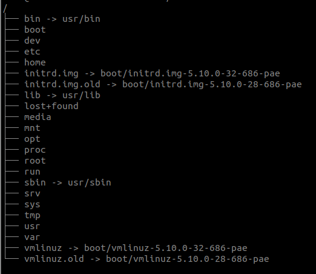
Figura 2: Árbol de directorios raíz de un sistema GNU/Linux
Directorios estáticos
Contienen archivos que no cambian sin la intervención de root, pero pueden ser leídos por cualquier usuario. Ejemplos: /bin, /sbin, /opt, /boot, /usr.
En criollo: Son como los libros de una biblioteca: cualquiera los puede leer, pero solo el bibliotecario (root) puede agregarlos, moverlos o borrarlos.
Directorios dinámicos
Contienen archivos que pueden cambiar, como documentos o configuración. Es recomendable que tengan una partición diferente para controlar su crecimiento.
En criollo: Son como el buzón de tu departamento: cambia constantemente, van llegando cosas nuevas. Conviene tener un espacio propio para que si se llena no tire abajo todo el edificio.
Directorios compartidos
Estos directorios podrían estar en un servidor diferente y utilizarse de forma local, como si fueran propios (por ejemplo, montados por NFS).
En criollo: Es como un disco en la nube que aparece en tu computadora como si fuera una carpeta local — el contenido vive en otro lado, pero lo usás como si fuera tuyo.
Directorios restringidos
Contienen archivos que no se pueden compartir; solo son modificables por el administrador. Ejemplos: /etc, /boot, /run, /lock.
En criollo: Son como la sala de servidores o la sala de breakers de un edificio: solo entra el personal autorizado, y con razón — un error ahí puede tumbar todo.
Tipos de archivos
En Linux, todo es un archivo: no solo los documentos y programas, sino también los dispositivos de hardware, directorios, enlaces, etc. Se pueden clasificar e identificar distintos tipos según el primer carácter de la columna de permisos en la salida de ls -l.
Archivos regulares
Los más comunes: documentos, imágenes, programas, scripts. Se identifican con un - al inicio de la columna de permisos.
-rw-r--r-- 1 root root 0 Sep 15 19:02 nota.log
En criollo: Son los "archivos normales" de toda la vida — los que abrís con un doble clic en Windows. El
-inicial es la firma de que es un archivo común y corriente.
Directorios (como tipo de archivo)
Los directorios almacenan archivos de diferentes tipos e incluso otros directorios. Cada entrada dentro de un directorio contiene el nombre del archivo y un número que identifica la dirección donde está alojado. Se identifican con una d al inicio de la columna de permisos.
drwxr-xr-x 12 root root 4096 Sep 15 14:38 var
En criollo: En Linux, hasta las carpetas son archivos (de tipo especial). La
dinicial es la pista de que ese "archivo" en realidad es una carpeta.
Archivos de dispositivos
Representan un dispositivo físico real (impresora, interfaz de red, disco). Se usan para operaciones de I/O (entrada/salida). Existen dos subtipos:
- Archivos de caracteres: la información se transmite un carácter a la vez. Se identifican con
cal inicio.
crw-rw-rw- 1 root tty 5, 0 Sep 15 14:59 tty
- Archivos de bloques: la información se transfiere en bloques grandes de tamaño fijo. Se identifican con
bal inicio.
brw-rw---- 1 root disk 8, 1 Sep 15 14:59 sda1
En criollo: Los de caracteres son como el teclado (letra por letra), los de bloques son como un disco rígido (mueve datos en paquetes grandes). La
cy labal inicio te dicen de qué tipo es.
Pipes (canalizaciones)
Permiten vincular comandos mediante una canalización. Funcionan como un archivo temporal que solo existe mientras se ejecuta el comando: el primer comando guarda su salida en la "tubería", y el segundo comando la lee desde ahí. Se identifican con p al inicio de la columna de permisos.
prw------- 1 root root 0 Sep 15 14:59 /run/initctl
En criollo: Un pipe es como una cañería entre dos piletas: el agua (los datos) sale de la primera pileta y entra directo en la segunda, sin tocar el suelo. El archivo "pipe" es la cañería en sí — temporal y transparente.
Links (enlaces simbólicos)
Los links simbólicos hacen referencia a otros archivos del sistema. Pueden ser softlinks (enlaces simbólicos que apuntan al nombre del archivo) o hardlinks (que apuntan directamente al dato en disco). Se identifican con l al inicio de la columna de permisos.
lrwxrwxrwx 1 root root 8 Sep 15 19:25 slink_notas -> nota.log
En criollo: Un softlink es como un acceso directo en el escritorio de Windows: el ícono no es el archivo real, solo apunta a él. Si borrás el archivo original, el acceso directo queda "roto". Un hardlink es más profundo: es como tener el mismo archivo con dos nombres distintos.
Glosario rápido
| Término | Definición técnica | En criollo |
|---|---|---|
| FHS | Filesystem Hierarchy Standard — estándar que define la estructura de directorios en sistemas tipo Unix | El "plano arquitectónico" oficial de cómo se organiza Linux |
Directorio raíz / |
Directorio de mayor jerarquía, del que dependen todos los demás | El tronco del árbol de archivos |
/boot |
Contiene archivos del gestor de arranque (GRUB) | Lo que necesita el sistema para encenderse |
/dev |
Archivos que representan dispositivos de hardware | La "ficha de identidad" de cada componente físico |
/etc |
Archivos de configuración del sistema | El panel de configuración de todos los servicios |
/home |
Directorios personales de cada usuario | El "cuarto" de cada usuario |
/bin |
Binarios esenciales del sistema, accesibles a todos | Herramientas básicas que cualquier usuario puede usar |
/sbin |
Binarios de administración del sistema | Herramientas solo para el administrador |
/opt |
Software adicional instalado fuera de la distribución | El "garaje" para programas de terceros |
/usr/local |
Software compilado/instalado localmente | Mini-árbol de directorios para software propio |
/mnt |
Punto de montaje para dispositivos de uso prolongado | Donde "enchufás" discos externos permanentes |
/media |
Punto de montaje para dispositivos temporales (USB, CD) | Donde "enchufás" pendrives y CDs |
/proc |
Información dinámica sobre procesos y estado del sistema | El tablero de instrumentos del sistema, en tiempo real |
/root |
Directorio home del superusuario root | La "oficina del director" dentro del sistema |
/var |
Archivos de tamaño variable (logs, colas, bases de datos) | La bandeja de entrada que crece con el tiempo |
| Directorio estático | No cambia sin intervención de root, legible por todos | Solo el admin puede modificarlo |
| Directorio dinámico | Cambia frecuentemente | Necesita partición propia para no crecer sin control |
| Directorio compartido | Puede residir en otro servidor y usarse localmente | Carpeta de red que parece local |
| Directorio restringido | Solo modificable por el administrador | Zona de acceso restringido |
| Archivo regular | Documento, imagen, script — el tipo más común | Un archivo "normal" de toda la vida |
| Archivo de caracteres | Dispositivo que transmite datos carácter por carácter | Como el teclado, letra por letra |
| Archivo de bloques | Dispositivo que transfiere datos en bloques fijos | Como un disco rígido, por paquetes |
| Pipe (archivo) | Archivo temporal que vincula la salida de un proceso con la entrada de otro | Cañería entre dos procesos |
| Link simbólico | Referencia a otro archivo del sistema de archivos | Acceso directo (softlink) o alias real (hardlink) |
| GRUB | Grand Unified Bootloader — gestor de arranque de Linux | El "menú de inicio" que aparece al encender la máquina |
| NFS | Network File System — protocolo para montar directorios remotos | Compartir carpetas por red como si fueran locales |
| I/O | Input/Output — operaciones de entrada y salida de datos | Lo que entra y sale de un dispositivo |
Multiple Choice — 30 preguntas
1. ¿Qué significa la sigla FHS?
2. ¿En qué año comenzó el proyecto FHS?
3. ¿Cuál es el directorio de mayor importancia en la jerarquía de GNU/Linux?
4. ¿Qué contiene el directorio `/boot`?
5. ¿Qué tipo de archivos se encuentran en `/dev`?
6. ¿Cuál es la función principal del directorio `/etc`?
7. ¿Cuál es la diferencia entre `/bin` y `/sbin`?
8. ¿Para qué sirve el directorio `/opt`?
9. ¿Cuál es la diferencia entre `/media` y `/mnt`?
10. ¿Qué característica especial tiene el directorio `/proc`?
11. ¿Por qué el directorio `/root` no está dentro de `/home`?
12. ¿Qué tipo de archivos almacena `/var`?
13. ¿Cómo se identifican los directorios ocultos en Linux?
14. ¿Qué tipo de directorio es `/bin` según la clasificación del FHS?
15. ¿Cuál de estos es un ejemplo de directorio restringido según el FHS?
16. En la salida de `ls -l`, ¿qué letra al inicio de la línea indica que es un archivo regular?
17. ¿Qué letra al inicio de la columna de permisos indica que un archivo es un directorio?
18. ¿Cómo se identifican los archivos de dispositivos de tipo "bloque" en `ls -l`?
19. ¿Qué diferencia hay entre un archivo de caracteres y un archivo de bloques?
20. ¿Cómo se identifica un pipe en la salida de `ls -l`?
21. ¿Cómo se identifica un link simbólico en la salida de `ls -l`?
22. ¿Cuál es la función de un link simbólico (softlink)?
23. Según el FHS, ¿qué tipo de directorio recomienda tener en una partición separada para controlar su crecimiento?
24. ¿Cuál es el propósito del directorio `/usr/local`?
25. ¿Cuál de las siguientes afirmaciones sobre el directorio `/` (raíz) es correcta?
26. ¿Cuál de los siguientes directorios es de tipo "compartido" según la clasificación del FHS?
27. Mirando esta salida de `ls -l`, ¿qué tipo de archivo es `tty`? ``` crw-rw-rw- 1 root tty 5, 0 Sep 15 14:59 tty ```
28. ¿Cuál de los siguientes directorios almacena información que se genera **dinámicamente en memoria** y no contiene archivos reales en disco?
29. ¿En qué directorio deberías buscar si querés cambiar la configuración del servidor SSH en Linux?
30. ¿Cuál de las siguientes afirmaciones sobre el concepto "todo es un archivo" en Linux es correcta? ---
7. Editores de Texto
¿Qué es un editor de texto?
Un editor de texto es una herramienta que corre en la terminal y permite a los usuarios crear, ver y modificar archivos. Los archivos que maneja carecen de formato especial — no tienen personalización de estilos o jerarquías en el texto (negrita, tamaños de fuente, etc.).
Este tipo de programas son una herramienta esencial para interactuar con el sistema operativo, ya que muchos de los archivos de configuración y scripts se manejan en texto plano.
Diferencia clave con los procesadores de texto: A diferencia de un procesador de texto como Microsoft Word, los editores de texto no añaden metadatos en los archivos. Word guarda información extra (autor, estilos, historial de cambios) que no es texto puro; un editor de texto solo guarda exactamente lo que escribís, sin nada extra.
En criollo: Un editor de texto es como una hoja de papel en blanco — lo que escribís es lo que hay, sin adornos, sin colores, sin formatos. Word es como una libreta con stickers y remaracadores que agrega su propia info al documento. Para configurar Linux, necesitás la hoja en blanco.
Editores populares
Pico
Editor de texto que originalmente fue parte del cliente de correo electrónico Pine. Es conocido por ser sencillo y minimalista. Su control es completamente mediante el uso del teclado, y tiene una barra inferior con los comandos clave disponibles.
En criollo: Pico es el editor para el que no quiere complicarse — abrís, escribís, guardás. Los comandos te los muestra en pantalla en la barra de abajo, así que no tenés que memorizar nada.
Nano
Nano es un clon de Pico pero con características adicionales. Viene preinstalado en muchas distribuciones, lo que lo hace una opción muy común para editar archivos. Su interfaz es sencilla y también cuenta con una barra de comandos en la parte inferior.
En criollo: Nano es el "Pico mejorado" que encontrás en casi todas las distros Linux. Es el editor de emergencia por defecto — si no sabés qué editor usar, probablemente Nano ya está instalado. La barra de abajo te recuerda los atajos más importantes.
Emacs
Es uno de los editores de texto más poderosos y extensibles que existen. Fue creado por Richard Stallman durante el desarrollo del proyecto GNU. Si bien su aprendizaje no es tan sencillo, su flexibilidad es incomparable.
En criollo: Emacs es como un cuchillo suizo que también es una navaja, un tenedor y una llave inglesa. Podés hacer casi cualquier cosa con él, pero aprender a usarlo requiere tiempo y dedicación. Es el favorito de muchos programadores veteranos.
VI
Es el editor de texto estándar presente en casi todas las distribuciones, no solo de Linux sino también de Unix. Fue creado por Bill Joy, uno de los cofundadores de Sun Microsystems, quien lo desarrolló en 1976 como parte original de Unix. Es ligero y eficiente: no consume grandes recursos del sistema para funcionar.
En criollo: VI es el abuelo de los editores de texto en Unix/Linux. Está en absolutamente todas partes — si te conectás a un servidor remoto rarísimo, VI va a estar. Es viejo, liviano y funciona hasta en una calculadora. El problema es que no es nada intuitivo al principio.
VIM
VIM es una versión mejorada de VI, creada en 1991 por Bram Moolenaar, quien buscaba agregar nuevas funcionalidades que hicieran de este un editor versátil y flexible, sin perder la eficiencia de VI. Su concepción venía acompañada del lema "editor para programadores".
En criollo: VIM es el VI pero con esteroides — tiene resaltado de sintaxis, plugins, macros, y un montón de cosas más. Es el editor favorito de muchos desarrolladores profesionales. El problema clásico es que la gente no sabe cómo salir de él la primera vez que lo abre.
VIM tiene 3 modos de uso:
Modo Comando
Es el modo en el que VIM se inicia siempre al abrir un archivo. En este modo, las teclas ejecutan acciones: permiten desplazar el cursor dentro del texto y ejecutar comandos de acción sobre el texto (copiar, pegar, borrar, etc.). Las teclas no escriben texto — actúan como atajos.
En criollo: En modo comando, el teclado es un control remoto: cada tecla hace algo (borrar, copiar, mover). Si apretás
d, no escribe la letra "d" — borra algo. Este es el modo "por defecto" de VIM y el que más confunde a los nuevos usuarios.
Modo Texto o Modo Escritura (inserción)
Presionando la tecla i desde el modo comando, se pasa al modo de inserción de texto, donde se puede escribir y agregar caracteres normalmente. Para volver al modo comando, se presiona Esc.
En criollo: El modo escritura es el único donde VIM se comporta "como un editor normal" — escribís y aparecen letras en pantalla. Para entrar, apretás
i; para salir, apretásEsc. Si algo raro pasa en VIM, apretáEsccomo reflejo.
Modo EX o Última Línea
Estando en modo comando, presionando los dos puntos :, se pasa a este modo. El cursor se va al final de la pantalla y permite agregar comandos de acción o de búsqueda más complejos (guardar, salir, numerar líneas, etc.).
En criollo: El modo EX es como la "línea de comandos dentro del editor". Aparece una barra al final de la pantalla donde podés escribir órdenes más complejas. Es como un prompt dentro del prompt.
Guía básica de comandos de VIM
Para abrir o crear un archivo con VI/VIM:
$ vi archivo_nuevo
Una vez abierto el editor, se puede empezar a modificar o escribir. A continuación, la guía básica de comandos:
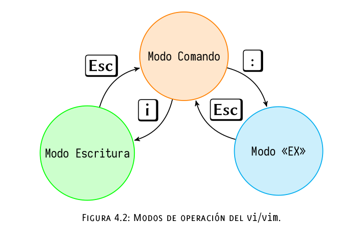
Figura 2: Diagrama de los 3 modos de operación del vi/vim
Comandos en Modo Escritura / transición:
| Tecla | Acción |
|---|---|
i |
Inserta texto a la izquierda del cursor (entra a modo escritura) |
Esc |
Vuelve al modo comando |
Comandos en Modo Comando (edición de texto):
| Tecla | Acción |
|---|---|
x |
Borra el carácter bajo el cursor |
dd |
Borra (y corta) la línea actual |
yy |
Copia la línea actual |
5yy |
Copia las siguientes 5 líneas |
5dd |
Corta las siguientes 5 líneas |
p |
Pega la/s línea/s copiada/s o cortada/s debajo del cursor |
P |
Pega la/s línea/s copiada/s o cortada/s sobre el cursor |
u |
Deshace el último cambio |
Comandos en Modo EX (se activan con : desde modo comando):
| Comando | Acción |
|---|---|
:w |
Guarda (salva) el archivo |
:q |
Sale del editor sin guardar |
:wq |
Guarda y sale |
:set nu |
Numera las líneas del archivo |
/ |
Abre campo al final del editor para realizar búsqueda de palabras |
En criollo: La secuencia más importante de VIM para sobrevivir es:
Esc(asegurate de estar en modo comando), luego:wq(Enter) para guardar y salir, o:q!para salir sin guardar nada. Memorizá eso y ya podés abrir VIM sin miedo.
Glosario rápido
| Término | Definición técnica | En criollo |
|---|---|---|
| Editor de texto | Herramienta que corre en terminal para crear, ver y modificar archivos de texto plano | El "bloc de notas" de la terminal, sin formato |
| Texto plano | Archivos que contienen solo caracteres de texto, sin formato ni metadatos | Lo que ves es exactamente lo que hay, sin adornos |
| Procesador de texto | Programa que maneja documentos con formato (negritas, estilos, metadatos) | Microsoft Word — agrega info extra al archivo |
| Metadatos | Información adicional sobre el archivo (autor, fecha, estilos) que no es el contenido en sí | Los "datos de los datos" — el Word los agrega, el editor de texto no |
| Pico | Editor minimalista, origen del cliente de correo Pine | El editor más simple, todo con el teclado |
| Nano | Clon mejorado de Pico, preinstalado en muchas distros | El editor de emergencia que siempre está disponible |
| Emacs | Editor muy potente y extensible, creado por Richard Stallman | La navaja suiza de los editores, curva de aprendizaje pronunciada |
| VI | Editor estándar de Unix/Linux, creado por Bill Joy en 1976 | El abuelo de los editores, liviano y está en todas partes |
| VIM | Versión mejorada de VI, creada en 1991 por Bram Moolenaar | VI con esteroides — "editor para programadores" |
| Modo Comando | Modo por defecto de VIM donde las teclas ejecutan acciones | El "control remoto" de VIM |
| Modo Escritura (inserción) | Modo de VIM donde se puede escribir texto normalmente | El único modo donde escribís como en cualquier editor |
| Modo EX | Modo de VIM donde se ingresan comandos complejos (guardar, salir) | La "línea de comandos" dentro de VIM |
:w |
Comando VIM para guardar el archivo | El Ctrl+S de VIM |
:q |
Comando VIM para salir sin guardar | Salir por la puerta sin llevarte nada |
dd |
Comando VIM para cortar la línea actual | Ctrl+X de VIM pero para líneas enteras |
yy |
Comando VIM para copiar la línea actual | Ctrl+C de VIM pero para líneas enteras |
u |
Comando VIM para deshacer el último cambio | Ctrl+Z de VIM |
Multiple Choice — 30 preguntas
1. ¿Cuál es la principal diferencia entre un editor de texto y un procesador de texto como Microsoft Word?
2. ¿Por qué los editores de texto son esenciales para interactuar con el sistema operativo Linux?
3. ¿Qué editor de texto fue originalmente parte del cliente de correo electrónico Pine?
4. ¿Cuál es la relación entre Nano y Pico?
5. ¿Cuál es una ventaja práctica de Nano sobre otros editores?
6. ¿Quién creó el editor Emacs?
7. ¿Cuál es la característica destacada de Emacs según el apunte?
8. ¿Quién creó el editor VI y en qué año?
9. ¿Por qué VI es considerado el editor "estándar" en sistemas Unix/Linux?
10. ¿Cuál es el lema bajo el que fue concebido VIM?
11. ¿En qué año fue creado VIM y por quién?
12. ¿Cuántos modos de uso tiene VIM?
13. ¿En qué modo inicia VIM cuando abrís un archivo?
14. ¿Qué tecla se usa para pasar del Modo Comando al Modo Escritura en VIM?
15. ¿Cómo se vuelve al Modo Comando desde el Modo Escritura en VIM?
16. ¿Cómo se activa el Modo EX en VIM?
17. ¿Qué hace el comando `dd` en VIM?
18. ¿Cuál es el comando correcto para guardar un archivo en VIM?
19. ¿Qué hace el comando `:q` en VIM?
20. ¿Qué hace el comando `yy` en VIM?
21. Para copiar las siguientes 5 líneas en VIM, ¿qué combinación se usa?
22. ¿Cuál es la diferencia entre `p` y `P` en VIM?
23. ¿Qué hace el comando `u` en VIM?
24. ¿Para qué sirve el comando `/` en VIM?
25. ¿Qué hace el comando `x` en VIM (modo comando)?
26. ¿Cuál de los siguientes comandos VIM numera las líneas del archivo?
27. ¿Cuál es la secuencia correcta para abrir un archivo nuevo llamado `config.txt` con VIM?
28. ¿En qué modo de VIM se pueden ejecutar las acciones de copiar, pegar y borrar líneas?
29. Un usuario abre VIM, hace cambios en un archivo y quiere guardar y salir. ¿Cuál es la secuencia correcta de pasos?
30. ¿Cuál de las siguientes afirmaciones describe correctamente la diferencia entre VI y VIM? ---
8. Redireccionamiento y Pipes
Redireccionamiento
Con el manejo de streams en Linux se comprende de forma más precisa el uso del redireccionamiento. Pudiendo manejar los flujos de entrada o de salida de los comandos o programas, Linux permite:
- Almacenar el resultado de un comando en un archivo para analizarlo después
- Enviar los errores a un archivo separado para revisarlos luego
- Enviar la salida de un comando como entrada de otro para obtener un resultado más eficaz
Existen cuatro tipos de redireccionamiento:
>: Mayor>>: Doble Mayor<: Menor|: Pipe
En criollo: El redireccionamiento es como cambiar el destino de un caño de agua. Normalmente la salida de un comando va a la pantalla (la pileta). Con el redireccionamiento, podés mandarla a un archivo (una botella), a otro comando (otra pileta), o descartarla para siempre (el desagüe).
> — Mayor (redirección de salida)
El > permite que en vez de que el resultado de un comando se muestre en pantalla, se pueda almacenar en un archivo u otro dispositivo.
ls -l /etc > archivo_ls
Comportamiento importante:
- Si el archivo no existe: se crea automáticamente y se rellena con el contenido enviado.
- Si el archivo ya existe: es eliminado y vuelto a generar con el nuevo contenido (¡sobreescribe sin avisar!).
En criollo: El
>es como vaciar una botella y llenarla de nuevo. Si había algo adentro, lo perdés. Cada vez que usás>hacia un archivo existente, estás borrando lo que había y escribiendo de cero.
>> — Doble Mayor (redirección de salida con append)
El >> permite añadir el contenido de la salida al final de un archivo ya existente, o crearlo si no existe.
ls -l /var >> archivo_ls
En este caso, la salida del comando ls -l /var se agrega al final de archivo_ls, después de lo que ya había. El contenido anterior no se borra.
En criollo: El
>>es como seguir escribiendo en un cuaderno que ya tiene cosas. No borrás lo anterior, simplemente continuás desde donde terminaba el texto. Ideal para logs y registros acumulativos.
< — Menor (redirección de entrada)
El < permite al comando leer la información desde un archivo u otro dispositivo, en lugar de leer los datos directamente desde el teclado (stdin).
cat < archivo_ls
Esto indica que el comando cat debe leer desde archivo_ls en lugar del teclado.
En criollo: Normalmente un comando espera que vos escribas cosas por teclado. Con
<le decís "no esperés mi input, leé de este archivo en su lugar". Es como darle a alguien una hoja escrita en vez de pedirle que escuche lo que decís.
Redireccionamiento de stderr (Standard Error)
El stream de StdErr está identificado con el número 2. Se puede usar para redirigir los mensajes de error hacia un archivo separado, en vez de que aparezcan en pantalla mezclados con la salida normal.
Sin redirección de stderr (el error aparece en pantalla):
ls /directorio_nuevo
# ls: cannot access '/directorio_nuevo': No such file or directory
Redirigiendo el stderr a un archivo:
ls /directorio_nuevo 2> error.log
Verificando el contenido del archivo de errores:
cat error.log
# ls: cannot access '/directorio_nuevo': No such file or directory
Nota importante: Cuando usamos > para redirigir el stdout, implícitamente se asume el número 1 delante:
ls /directorio_nuevo 1> salida.log # equivalente a: ls /directorio_nuevo > salida.log
En criollo: Cada "caño" de datos en Linux tiene un número. El teclado (stdin) es el 0, la pantalla normal (stdout) es el 1, y los errores (stderr) son el 2. Con
2>le decís al sistema "los errores mandálos para acá, no los mezcles con la salida normal". Así podés tener un archivo de log limpio y otro de errores por separado.
Otros tipos de redireccionamiento
/dev/null — El agujero negro del sistema
Dentro de Linux existe un dispositivo llamado null en el directorio /dev. Este dispositivo actúa como "agujero negro": cualquier cosa enviada ahí se pierde para siempre. Es muy útil cuando queremos descartar errores y quedarnos solo con los mensajes que nos son de utilidad.
En criollo:
/dev/nulles el tacho de basura sin fondo de Linux. Lo que mandás ahí desaparece para siempre, sin dejar rastro. Se usa cuando no te importan los errores y no querés que ensucien la salida.
Redireccionamiento múltiple:
# stdout a salida.txt y stderr a error.log (separados):
ls /directorio_nuevo >> salida.txt 2> error.log
# stdout a salida.txt y stderr descartado (silenciado):
ls /directorio_nuevo >> salida.txt 2> /dev/null
# stdout y stderr juntos a salida.txt (bash 4.0+):
ls /directorio_nuevo &> salida.txt
# stdout y stderr juntos (compatible con versiones anteriores de bash):
ls /directorio_nuevo > salida.txt 2>&1
En criollo:
2>&1se lee como "el stderr (2) mandalo al mismo lugar donde está yendo el stdout (1)". Es la forma de decir "pegá el caño de errores al caño de salida normal".
Pipes
El Pipe | permite enviar la salida de un comando como entrada de otro, encadenando tantos comandos como sea necesario. La salida (stdout) de cada comando se convierte en la entrada (stdin) del siguiente.
En criollo: Un pipe es como una cinta transportadora entre fábricas: la salida de la fábrica 1 entra directa como materia prima a la fábrica 2, sin pasar por el suelo. Podés encadenar todas las fábricas que quieras. Cada
|es un tramo más de la cinta.
Combinación de pipes con filtros para análisis de logs:
Cuando se analizan logs o archivos con múltiples líneas, la combinación de pipes con filtros es muy poderosa:
# Buscar en dpkg.log todas las líneas que contengan "installed":
cat /var/log/dpkg.log | grep "installed"
# Mostrar solo las primeras 2 líneas del archivo archivo_ls:
cat archivo_ls | head -n 2
En criollo: Los pipes con filtros son como una línea de producción con control de calidad: el primer comando produce todos los datos, el segundo los filtra y te devuelve solo lo que cumple el criterio.
grepes el inspector de calidad que deja pasar solo lo que coincide con el patrón.
Buscar en Linux
Para realizar búsquedas dentro de la estructura de archivos y directorios en Linux se pueden usar los comandos find o locate.
find — Búsqueda exhaustiva en tiempo real
Permite buscar archivos y directorios dentro del sistema de archivos de manera exhaustiva. Es muy versátil y flexible ya que permite buscar por nombre, fecha de modificación, tipo, tamaño, permisos, entre otros. Además puede ejecutar acciones sobre los archivos encontrados.
find [ruta] [opciones] [acción]
- ruta: directorio donde comienza la búsqueda. Si no se especifica, comienza en el directorio actual.
- opciones: controlan el criterio de búsqueda.
- acción: qué hacer con los archivos encontrados.
Opciones de búsqueda:
| Opción | Descripción | Ejemplo |
|---|---|---|
-name |
Busca por nombre exacto (case-sensitive) | find / -name "archivo.txt" |
-iname |
Busca por nombre ignorando mayúsculas/minúsculas | find / -iname "Archivo.TXT" |
-type f |
Busca archivos (files) | find /home -type f |
-type d |
Busca directorios | find /home -type d |
-size +100M |
Archivos mayores a 100 MB | find / -size +100M |
-size -500k |
Archivos menores a 500 KB | find / -size -500k |
-mtime -7 |
Archivos modificados en los últimos 7 días | find / -mtime -7 |
-mtime +30 |
Archivos modificados hace más de 30 días | find / -mtime +30 |
-perm 755 |
Archivos con permisos exactos 755 | find / -perm 755 |
Opciones de acción:
-exec: ejecuta un comando sobre cada archivo encontrado. Se usa{}como marcador del nombre del archivo encontrado.
# Copia todos los .txt de /home/alumno al directorio /backup/:
find /home/alumno -name "*.txt" -exec cp {} /backup/ \;
-delete: elimina los archivos encontrados.
# Borra todos los archivos .log del directorio /var/log/:
find /var/log -name "*.log" -delete
En criollo:
findes como un detective que recorre toda la casa habitación por habitación buscando lo que le pedís. Es lento porque mira en cada rincón en tiempo real, pero es el más completo y confiable. Con-execpodés decirle "y cuando lo encuentres, hacé esto con él".
locate — Búsqueda rápida por base de datos
El comando locate es parte de un programa llamado mlocate. Es mucho más rápido que find porque utiliza una base de datos propia, previamente indexada de los archivos del sistema. Permite obtener resultados en segundos, pero depende de que la base de datos esté actualizada.
locate [nombre del archivo]
Nota importante: mlocate generalmente no está instalado por defecto. Para usarlo hay que:
1. Instalarlo
2. Actualizar la base de datos con el comando updatedb (como root o con permisos de administrador)
En criollo:
locatees como el índice de un libro: encontrás lo que buscás en segundos porque ya está todo catalogado. El problema es que si el libro fue actualizado ayer y el índice se hizo hace una semana, el índice puede estar desactualizado. Por eso necesitás correrupdatedbpara mantenerlo al día.
Comparación: find vs locate
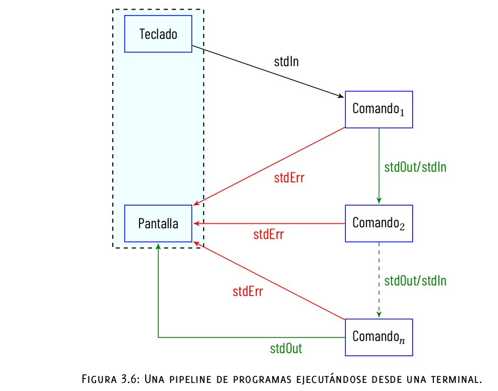
Figura 2: Diagrama de una pipeline de programas ejecutándose desde una terminal
| Comando | Ventaja principal | Desventaja |
|---|---|---|
find |
Búsqueda exhaustiva, permite usar criterios avanzados y ejecutar acciones | Más lento, ya que busca en tiempo real en el sistema de archivos |
locate |
Muy rápido, útil para búsquedas generales | Depende de una base de datos que debe actualizarse para estar al día |
Glosario rápido
| Término | Definición técnica | En criollo |
|---|---|---|
| Redireccionamiento | Mecanismo para cambiar el origen o destino de los flujos de entrada/salida de un comando | Cambiar el "caño" por donde viajan los datos |
| Stream | Flujo de datos en Linux (stdin, stdout, stderr) | El "caño" de datos entre un programa y el sistema |
| stdin (0) | Standard Input — entrada estándar, por defecto el teclado | Lo que el programa lee como input |
| stdout (1) | Standard Output — salida estándar, por defecto la pantalla | Lo que el programa imprime como resultado |
| stderr (2) | Standard Error — salida de errores, por defecto la pantalla | Lo que el programa grita cuando algo sale mal |
> |
Redirige stdout a un archivo (sobreescribe si existe) | Vaciá la botella y llenala de nuevo |
>> |
Redirige stdout a un archivo (agrega al final si existe) | Seguí escribiendo al final del cuaderno |
< |
Redirige stdin desde un archivo en lugar del teclado | Dale al programa una hoja en vez de que escuche |
2> |
Redirige stderr a un archivo | Mandá los errores a un archivo separado |
2>&1 |
Redirige stderr al mismo destino que stdout | Pegá el caño de errores al de salida normal |
/dev/null |
Dispositivo especial que descarta todo lo que recibe | El agujero negro / tacho sin fondo de Linux |
&> |
Redirige stdout y stderr juntos al mismo archivo (bash 4.0+) | Un solo caño para salida normal y errores |
Pipe (\|) |
Envía el stdout de un comando como stdin del siguiente | La cinta transportadora entre comandos |
grep |
Filtro que busca líneas que coincidan con un patrón | El inspector de calidad de la línea de producción |
head -n N |
Muestra las primeras N líneas de un archivo o entrada | El que solo lee el principio |
find |
Búsqueda exhaustiva en tiempo real por criterios múltiples | El detective que recorre todo el sistema |
locate |
Búsqueda rápida usando base de datos indexada (mlocate) | El índice del libro — rápido pero puede ser viejo |
updatedb |
Actualiza la base de datos de locate |
Reindexar el catálogo para que locate esté al día |
-exec |
Acción de find que ejecuta un comando sobre cada resultado |
"Cuando lo encuentres, hacé esto con él" |
-delete |
Acción de find que elimina cada archivo encontrado |
Borrá todo lo que encuentres |
mlocate |
Programa del que forma parte el comando locate |
El motor que hace funcionar locate |
Multiple Choice — 30 preguntas
1. ¿Cuántos tipos de redireccionamiento existen según el apunte?
2. ¿Qué hace el operador `>` cuando el archivo destino ya existe?
3. ¿Cuál es la diferencia principal entre `>` y `>>`?
4. ¿Qué hace el siguiente comando? ```bash ls -l /var >> archivo_ls ```
5. ¿Para qué sirve el operador `<` en el redireccionamiento?
6. ¿Con qué número está identificado el stream stderr?
7. ¿Qué hace el siguiente comando? ```bash ls /directorio_nuevo 2> error.log ```
8. ¿Cuál es el número implícito cuando se usa `>` para redirigir stdout?
9. ¿Qué es `/dev/null`?
10. ¿Qué hace el siguiente comando? ```bash ls /directorio_nuevo >> salida.txt 2> /dev/null ```
11. ¿Qué hace `2>&1` en una redirección?
12. ¿Cuál de los siguientes comandos envía stdout y stderr al mismo archivo en bash 4.0+?
13. ¿Qué hace el operador Pipe `|`?
14. ¿Cuál es el resultado del siguiente comando? ```bash cat /var/log/dpkg.log | grep "installed" ```
15. ¿Qué hace `cat archivo_ls | head -n 2`?
16. ¿Cuál es una ventaja del comando `find` sobre `locate`?
17. ¿Qué busca el siguiente comando? ```bash find /home -name "*.txt" ```
18. ¿Cuál es la diferencia entre `-name` e `-iname` en el comando `find`?
19. ¿Qué hace `-type f` en el comando `find`?
20. ¿Qué busca `find / -size +100M`?
21. ¿Qué hace `-mtime -7` en el comando `find`?
22. ¿Qué hace el siguiente comando? ```bash find /var/log -name "*.log" -delete ```
23. ¿Qué representa `{}` en el contexto de `-exec` dentro de `find`?
24. ¿Cuál es la principal desventaja del comando `locate`?
25. ¿Qué comando se usa para actualizar la base de datos de `locate`?
26. ¿Cuál de las siguientes afirmaciones sobre `mlocate` es correcta?
27. Si querés buscar archivos con permisos exactos `755`, ¿qué opción de `find` usás?
28. ¿Cuál es el stream que corresponde al stdin?
29. Un administrador quiere guardar el stdout de un comando en `salida.txt` y los errores en `errores.txt` al mismo tiempo. ¿Cuál es el comando correcto?
30. ¿Cuál de las siguientes afirmaciones describe correctamente el pipe `|` en Linux? ---
9. Streams y Filtros
Streams en Linux
Un stream es un flujo de datos que puede ser de entrada (input) o de salida (output). Linux tiene 3 (tres) streams predefinidos que los programas usan para interactuar con el sistema y con otros programas.
Estos tres streams son:
- stdin (Standard Input) — canal de entrada, identificado con el número 0
- stdout (Standard Output) — canal de salida normal, identificado con el número 1
- stderr (Standard Error) — canal de salida de errores, identificado con el número 2
En criollo: Un stream es como un caño de agua: los datos fluyen desde un origen (por ejemplo, el teclado) hacia un destino (por ejemplo, la pantalla). Cada programa tiene tres caños: uno por donde le entra la información, uno por donde escupe el resultado normal, y uno por donde escupe los errores.
stdin (Standard Input)
Este canal está identificado con el número 0. Por default, el flujo de información que recibe viene desde el teclado, pero también puede recibirlo desde otro comando o desde un archivo.
Ejemplo: Cuando ejecutás un comando escribiéndolo por teclado, estás usando el stdin (o sea, el teclado).
En criollo: stdin es la "boca de entrada" del programa. Por defecto esa boca es el teclado, pero podés conectarla a otro lado — como leer desde un archivo en vez de tipear.
stdout (Standard Output)
Este canal está identificado con el número 1. Por default, el flujo de salida va al monitor. Todo lo que un programa imprime o genera como resultado lo envía a stdout.
Ejemplo: Cuando ejecutás ls, la lista de archivos se imprime en stdout (en la pantalla).
alumno@debian11-CA:~$ ls
archivo archivo2 archivo_000 archivo_001 archivo_666 directorio
En criollo: stdout es la "boca de salida normal" del programa. Si el programa no la redirigís, lo que sale aparece en la pantalla. Es como la bocina de un auto: por defecto suena para afuera.
stderr (Standard Error)
Este canal está identificado con el número 2. Es el flujo donde se envían los mensajes de error generados por un programa. Se mantiene separado del stdout para que los errores no se mezclen con la salida normal.
Ejemplo: Si escribís mal un comando (por ejemplo la en lugar de ls), el mensaje de error se imprime por stderr.
alumno@debian11-CA:~$ la
-bash: la: command not found
En criollo: stderr es como el "canal de quejas" del programa. Los errores van por un caño distinto al de los resultados normales, así podés guardar los resultados en un archivo y que los mensajes de error sigan apareciendo en pantalla (o viceversa), sin que se mezclen.
Por qué existen los tres streams
El objetivo de separar stdin, stdout y stderr es tener mayor control sobre cómo se gestionan los datos. Esto permite:
- Redirigir la salida estándar a un archivo u otro comando, sin capturar errores.
- Capturar y gestionar los errores de manera separada.
- Automatizar procesos en scripts y comandos sin intervención manual.
En criollo: Imaginate que querés guardar el resultado de un comando en un archivo pero no querés que los errores también vayan ahí. Gracias a esta separación, podés hacer exactamente eso. Es como tener una impresora para los documentos buenos y otra para los rechazados.
Filtros
Los filtros son comandos que procesan el contenido de un archivo o de stdin y permiten manipular stdout con diversas funciones. Son herramientas para transformar, buscar, contar, o recortar texto.
En criollo: Los filtros son como coladores de cocina — agarrás una entrada (texto, una lista, un archivo), la pasás por el filtro, y lo que sale del otro lado es solo lo que te interesa, transformado o reducido.
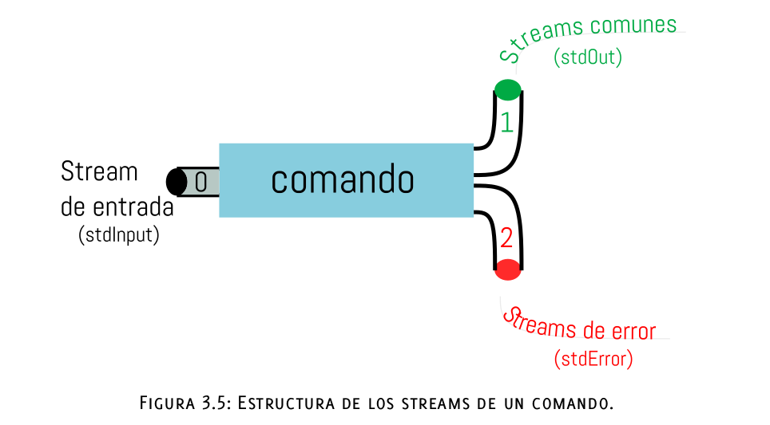
Figura 2: Estructura de los streams de un comando (stdin, stdout, stderr)
tail
Muestra las últimas 10 líneas de un archivo (por defecto).
Opciones:
- -f: sigue mostrando las nuevas líneas a medida que se añaden. Muy útil para ver logs en tiempo real.
- -n xx: define un número de líneas a mostrar (reemplazá xx con el número).
tail archivo.log # últimas 10 líneas
tail -n 20 archivo.log # últimas 20 líneas
tail -f /var/log/syslog # sigue el archivo en tiempo real
En criollo:
tailes como leer el final de un libro. Con-fes como ver el final de algo que todavía se está escribiendo — ideal para ver qué está pasando en un log mientras corre un proceso.
more
Permite visualizar archivos grandes por secciones (paginando por pantallas), pero solo hacia adelante.
more archivo_largo.txt
En criollo:
morees como pasar páginas en un libro — solo podés ir para adelante, no podés volver.
less
Permite visualizar archivos grandes por secciones, pero, a diferencia de more, permite desplazarse tanto hacia adelante como hacia atrás.
less archivo_largo.txt
En criollo:
lesses la versión mejorada demore— podés ir para adelante y para atrás, buscar texto adentro, y salir cuando querés. El nombre es un chiste: "less is more" (menos es más).
sort
Ordena las líneas de un archivo alfabética o numéricamente.
Opciones:
- -r: ordena en reversa.
- -n: ordena numéricamente.
sort lista.txt # orden alfabético
sort -r lista.txt # orden inverso
sort -n numeros.txt # orden numérico
En criollo:
sortes como agarrar una lista escrita a mano y ordenarla. Sin opciones la ordena como si fuera una guía telefónica (letras). Con-nla ordena como si fueran números de verdad (sin ese flag, el "10" iría antes del "2" porque el '1' va antes que el '2' en el alfabeto).
wc
Cuenta el número de líneas, palabras o caracteres de un archivo de entrada.
Opciones:
- -m: cuenta caracteres.
- -l: cuenta líneas.
- -w: cuenta palabras.
wc archivo.txt # muestra líneas, palabras y caracteres
wc -l archivo.txt # solo cuenta líneas
wc -w archivo.txt # solo cuenta palabras
wc -m archivo.txt # solo cuenta caracteres
En criollo:
wc(word count) es el contador de palabras de Linux, como el de Word pero para la terminal. Muy útil para saber cuántos usuarios hay en/etc/passwdo cuántas líneas tiene un log.
cut
Extrae partes específicas de cada línea de un archivo o de stdin.
cut -d: -f1 /etc/passwd # extrae el primer campo usando ":" como delimitador
En criollo:
cutes como recortar columnas de una tabla. Si tenés un CSV o un archivo con columnas separadas por algún caracter, podés quedarte solo con la columna que te interesa.
grep — El filtro
grep permite buscar dentro de archivos o del stdout palabras que coincidan con una expresión regular o un patrón de texto. Es uno de los comandos más usados en Linux.
Sintaxis:
grep [opción] [patrón] [archivo]
Opciones:
- -i: no distingue entre mayúsculas y minúsculas (case-insensitive).
- -n: muestra el número de la línea donde aparece el patrón.
- -r: busca recursivamente en directorios.
- -c: cuenta las líneas que coinciden (no las muestra, solo cuenta).
- -E: permite buscar múltiples patrones usando expresiones regulares extendidas.
grep "error" /var/log/syslog # busca "error" en el archivo
grep -i "error" /var/log/syslog # busca "error" ignorando mayúsculas
grep -n "error" /var/log/syslog # muestra el número de línea
grep -r "TODO" /home/alumno/ # busca recursivamente en todo el directorio
grep -c "error" /var/log/syslog # cuenta cuántas líneas tienen "error"
grep -E "error|warning" /var/log/syslog # busca "error" O "warning"
En criollo:
grepes el "Ctrl+F" de la terminal. Le decís qué palabra buscar y en qué archivo (o en qué salida), y te muestra solo las líneas donde aparece. Con-res como hacer Ctrl+F en toda una carpeta y sus subcarpetas.
Glosario rápido
| Término | Definición técnica | En criollo |
|---|---|---|
| stream | Flujo de datos de entrada o salida asociado a un proceso | Caño por donde viajan los datos entre un programa y el mundo |
| stdin | Standard Input — canal 0, entrada estándar (por defecto: teclado) | La boca por donde el programa recibe datos |
| stdout | Standard Output — canal 1, salida estándar (por defecto: monitor) | La boca por donde el programa escupe los resultados normales |
| stderr | Standard Error — canal 2, salida de error (por defecto: monitor) | El canal separado por donde van solo los mensajes de error |
| filtro | Comando que procesa stdin/archivo y produce stdout transformado | Colador que agarra texto, lo transforma, y devuelve lo que pediste |
| tail | Comando que muestra las últimas líneas de un archivo | "Dame el final del archivo" |
| tail -f | Modo follow: muestra líneas nuevas en tiempo real | Ver un log como si fuera un feed de Twitter en vivo |
| more | Paginador de texto que solo avanza | Pasar páginas hacia adelante |
| less | Paginador de texto que avanza y retrocede | Pasar páginas para los dos lados |
| sort | Comando que ordena líneas alfabética o numéricamente | El organizador de listas de Linux |
| wc | Word Count — cuenta líneas, palabras o caracteres | El contador de palabras de la terminal |
| cut | Extrae campos o columnas de cada línea | Recortar columnas de una tabla de texto |
| grep | Busca líneas que coincidan con un patrón o expresión regular | El Ctrl+F de la terminal |
| -i (grep) | Case-insensitive: ignora diferencia entre mayúsculas y minúsculas | Busca sin importar si está en mayúscula o minúscula |
| -r (grep) | Recursive: busca en directorios y subdirectorios | Busca en toda la carpeta y las subcarpetas |
| -E (grep) | Extended regex: permite usar expresiones regulares extendidas y múltiples patrones | Podés buscar "esto O aquello" a la vez |
Multiple Choice — 30 preguntas
1. ¿Cuántos streams predefinidos tiene Linux para cada proceso?
2. ¿Con qué número se identifica el canal stdin?
3. ¿Cuál es el dispositivo de entrada por defecto de stdin?
4. ¿Con qué número se identifica el canal stdout?
5. ¿Cuál es el dispositivo de salida por defecto de stdout?
6. ¿Con qué número se identifica el canal stderr?
7. ¿Cuál es el propósito principal de mantener stderr separado de stdout?
8. Ejecutás el comando `la` (que no existe). El mensaje `-bash: la: command not found` se imprime por:
9. ¿Qué hace el comando `tail` por defecto?
10. ¿Qué opción de `tail` se usa para seguir viendo nuevas líneas a medida que se añaden al archivo?
11. ¿Qué comando se usa para ver las últimas 25 líneas de un archivo llamado `sistema.log`?
12. ¿Cuál es la diferencia principal entre `more` y `less`?
13. ¿Qué hace el comando `sort -n`?
14. Tenés un archivo con estos contenidos: `10`, `2`, `20`, `3`. ¿Qué resultado da `sort` (sin opciones)?
15. ¿Qué opción de `wc` se usa para contar solo las líneas de un archivo?
16. ¿Qué hace `wc -w archivo.txt`?
17. ¿Qué comando se usa para extraer partes específicas de cada línea de un archivo?
18. ¿Cuál es la sintaxis correcta de `grep`?
19. ¿Qué hace `grep -i "Error" archivo.log`?
20. ¿Qué opción de `grep` muestra el número de línea donde aparece el patrón?
21. Querés buscar la palabra "usuario" en todos los archivos dentro del directorio `/etc/` y sus subdirectorios. ¿Qué comando usás?
22. ¿Qué hace `grep -c "warning" sistema.log`?
23. ¿Qué opción de `grep` se usa para buscar múltiples patrones con expresiones regulares extendidas?
24. Ejecutás `grep -E "error|warning" /var/log/syslog`. ¿Qué hace ese comando?
25. ¿Para qué sirve `tail -f /var/log/auth.log` en un contexto real de administración?
26. Un administrador ejecuta `wc -l /etc/passwd`. ¿Qué información útil obtiene?
27. ¿Cuál de los siguientes NO es un beneficio de tener los tres streams separados?
28. Ejecutás `sort -r lista.txt`. ¿Qué obtenés?
29. Tenés la salida de `ls -l` y querés filtrar solo las líneas que contienen "txt". Después querés contar cuántas son. ¿Qué combinación de comandos sería la correcta (usando pipe)?
30. ¿Cuál es la diferencia entre `grep -n` y `grep -c`? ---
10. Expresiones Regulares
Expresiones regulares
Las expresiones regulares (también llamadas regex) son un conjunto de reglas que permiten definir patrones de búsqueda complejos en cadenas de texto. En Linux, son ampliamente usadas en comandos como grep o find, entre otros. Permiten encontrar, validar o manipular textos de manera eficiente.
En criollo: Una expresión regular es como una descripción de "lo que estás buscando" escrita en un idioma especial que entienden los comandos. En vez de buscar exactamente "error", podés decir "cualquier palabra que empiece con mayúscula y termine en 's'". Es el Ctrl+F turbinado.
Para practicar los ejemplos del apunte, se crea un archivo llamado Gerencias con áreas de una empresa:
echo -e "Tecnologia\nFinanzas\nContaduria\nRecursosHumanos\nVentas\nDeposito" > Gerencias
Las expresiones regulares se clasifican en: Alternación, Cuantificación, Agrupación y uso de Caracteres especiales.
Alternación
Las expresiones de alternación son del tipo "a o b". Se utiliza el | (pipe) como operador OR.
Ejemplos:
- /a|b/ : coincide con el caracter a o el b
- /perra|o/ : coincide con perra o perro
Uso con grep:
cat Gerencias | grep -E "Tecnologia|Deposito"
Tecnologia
Deposito
En criollo: La alternación es el "o" de toda la vida. Le decís al regex "encontrá esto O aquello". El
|acá no es un pipe de bash, es el operador OR dentro del patrón de búsqueda.
Cuantificación
Permite controlar cuántas veces se repite un patrón. Los cuantificadores son:
| Símbolo | Significado |
|---|---|
* |
cero o más veces |
+ |
una o más veces |
? |
cero o una vez |
{n} |
exactamente "n" veces |
{n,m} |
mínimo n veces y máximo m veces |
Ejemplos:
- /ab+c/ coincide con abc y abbc, pero no con ac (el + exige al menos una b)
- /ab?c/ coincide con ac y abc, pero no con abbc (el ? permite cero o una b)
- /pepe*/ coincide con pep, pepe y pepeeeee (el * permite cero o más e al final)
- /a{1,2}/ coincide con a y aa, pero no con aaa
Uso con grep:
cat Gerencias | grep -E "*gia"
Tecnologia
cat Gerencias | grep -E "ur*"
Contaduria
RecursosHumanos
En criollo: Los cuantificadores le dicen al regex "cuántas veces tiene que aparecer algo". El
*es el más permisivo (puede no aparecer). El+exige al menos una vez. El?es opcional. Y con{n,m}podés ser bien preciso: "entre 2 y 4 veces, ni más ni menos".
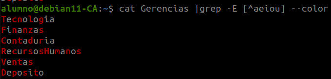
Figura 2: Resultado de grep -E [^aeiou] --color sobre el archivo Gerencias
Agrupación
Los grupos permiten aplicar cuantificadores a un conjunto de caracteres o alternaciones específicas.
- Paréntesis
(): agrupan una expresión regular para trabajarla como subexpresión. - Corchetes
[]: permiten definir un conjunto o rango de caracteres que se desea encontrar.
Ejemplos:
- (abc)+ : coincide al menos una vez con toda la expresión abc
- [aeiou] : coincide con cualquier vocal
- [a-z0-9] : coincide con el rango de "a" hasta "z" y cualquier número del 0 al 9
Uso especial — negación con ^ dentro de corchetes:
[^aeiou] : el símbolo ^ (circunflejo) dentro de un grupo [] actúa como negación. Esta expresión coincide con cualquier caracter que no sea una vocal.
cat Gerencias | grep -E [^aeiou] --color
En criollo: Los corchetes son como una "lista de candidatos".
[aeiou]dice "cualquiera de estas letras". Los paréntesis agrupan cosas para tratarlas como un bloque (igual que en matemática). Y el^dentro de corchetes invierte la lógica: "cualquier cosa que NO esté en esta lista".
En esta búsqueda se pide que coloree las letras de "a" hasta "m" ([a-m]):
cat Gerencias | grep -E [a-m] --color
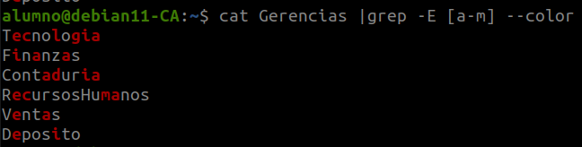
Figura 4: grep coloreando las letras del rango a-m en cada palabra del archivo Gerencias
Caracteres especiales
Algunos caracteres tienen significados especiales en las expresiones regulares:
| Caracter | Significado |
|---|---|
. (punto) |
Coincide con cualquier caracter, excepto una nueva línea |
^ (circunflejo) |
Coincide con el inicio de la línea (salvo que esté dentro de [], donde niega) |
$ (signo pesos) |
Coincide con el final de la línea |
Ejemplo con $:
cat Gerencias | grep -E s$
Este comando encuentra todas las líneas del archivo que terminan con la letra s (como Finanzas, RecursosHumanos, Ventas).
En criollo: El
.es el comodín total — "cualquier caracter que sea". El^al inicio del patrón ancla la búsqueda al comienzo de la línea (como decir "que empiece con..."). El$ancla al final (como decir "que termine en..."). Son los puntos de "inicio y fin" de la línea en el mundo regex.
Algunos ejemplos reales
Estos ejemplos pueden ser probados con egrep o grep -E. La estructura general para probar desde la terminal es:
echo '<expresion a verificar>' | egrep '<expresion regular>'
Ejemplo real: validación de dirección de email
echo -e "alumno@palermo.edu.ar\nauto\nmanzana" | grep -E "^([0-9A-Za-z._%-]+@[0-9A-Za-z._-]+\.[A-Za-z]{2,6})*$"
Este comando imprime solo la línea que contiene una dirección de email válida (alumno@palermo.edu.ar), ignorando auto y manzana.
Desglose de la expresión regular de email:
- ^ : inicio de línea
- [0-9A-Za-z._%-]+ : uno o más caracteres válidos para el nombre de usuario (letras, números, punto, guión bajo, %, guión)
- @ : arroba literal
- [0-9A-Za-z._-]+ : uno o más caracteres para el dominio
- \. : punto literal (el \ escapa el . para que no sea el comodín)
- [A-Za-z]{2,6} : extensión del dominio de 2 a 6 letras (.ar, .com, .edu, etc.)
- $ : fin de línea
En criollo: Las regex se pueden combinar para hacer validaciones complejas. El ejemplo del email es el clásico: en vez de revisar manualmente si una cadena es un correo válido, escribís un patrón que describe cómo se ve un email y grep te dice cuáles cumplen con esa forma.
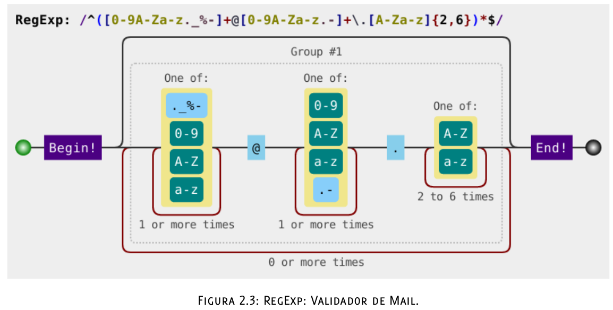
Figura 6: Diagrama visual de la expresión regular para validar emails (Figura 2.3 del libro: RegExp Validador de Mail)
Para probar expresiones regulares de forma visual, se puede usar el sitio https://regex101.com/ donde el verificador colorea solo lo que coincide con el patrón.
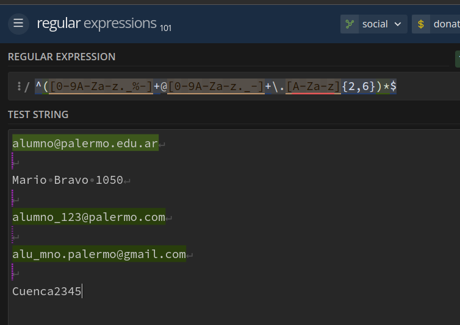
Figura 8: Vista detallada de regex101.com con los resultados de la validación
Glosario rápido
| Término | Definición técnica | En criollo |
|---|---|---|
| regex / expresión regular | Conjunto de reglas para definir patrones de búsqueda en texto | El idioma especial para describir lo que querés encontrar en un texto |
| alternación | Operador OR en regex, usa \| para indicar "esto o aquello" |
El "o" de las regex: encontrá A o B |
| cuantificador | Símbolo que indica cuántas veces puede repetirse un patrón | Le dice al regex cuántas veces tiene que aparecer algo |
* |
Cero o más repeticiones del elemento anterior | "Puede estar o no, y si está puede repetirse todo lo que quiera" |
+ |
Una o más repeticiones del elemento anterior | "Tiene que aparecer al menos una vez, puede repetirse" |
? |
Cero o una repetición del elemento anterior | "Puede estar o no, pero si está solo una vez" |
{n,m} |
Entre n y m repeticiones del elemento anterior | "Que aparezca mínimo n veces y máximo m veces" |
| agrupación | Uso de () para tratar una subexpresión como unidad |
Paréntesis como en matemática: lo de adentro va junto |
clase de caracteres [] |
Define un conjunto o rango de caracteres a buscar | Lista de candidatos: "cualquiera de estos caracteres" |
negación [^...] |
El ^ dentro de [] niega el conjunto |
"Cualquier cosa que NO esté en esta lista" |
. (punto) |
Coincide con cualquier caracter excepto nueva línea | El comodín total: "un caracter cualquiera" |
^ (circunflejo) |
Ancla al inicio de línea (fuera de []) |
"Que empiece con..." |
$ (signo pesos) |
Ancla al final de línea | "Que termine en..." |
egrep |
Versión extendida de grep, equivalente a grep -E |
grep con soporte completo de regex extendidas |
| regex101.com | Sitio web para probar y depurar expresiones regulares visualmente | El patio de pruebas online para regex |
Multiple Choice — 30 preguntas
1. ¿Qué son las expresiones regulares (regex)?
2. ¿Cuál es el operador utilizado en regex para la alternación (OR)?
3. ¿Qué resultado produce el comando `cat Gerencias | grep -E "Tecnologia|Deposito"`?
4. ¿Qué significa el cuantificador `*` en una expresión regular?
5. ¿Qué significa el cuantificador `+` en una expresión regular?
6. ¿Qué significa el cuantificador `?` en una expresión regular?
7. La expresión `/ab+c/` coincide con:
8. La expresión `/ab?c/` coincide con:
9. La expresión `/pepe*/` coincide con:
10. ¿Qué hace la expresión `/a{1,2}/`?
11. ¿Para qué sirven los paréntesis `()` en las expresiones regulares?
12. ¿Qué hace la expresión regular `[aeiou]`?
13. ¿Qué hace la expresión regular `[a-z0-9]`?
14. ¿Qué significa el símbolo `^` (circunflejo) **dentro** de un grupo de corchetes `[^aeiou]`?
15. ¿Qué hace el caracter especial `.` (punto) en una expresión regular?
16. ¿Qué función cumple el `^` (circunflejo) **fuera** de los corchetes en una expresión regular?
17. ¿Qué hace el caracter especial `$` en una expresión regular?
18. ¿Qué resultado da `cat Gerencias | grep -E s$`?
19. ¿Cuál es la diferencia entre `egrep` y `grep -E`?
20. ¿Qué hace la opción `-E` en `grep -E`?
21. ¿Qué hace la expresión `(abc)+`?
22. En la expresión regular de validación de email `^([0-9A-Za-z._%-]+@[0-9A-Za-z._-]+\.[A-Za-z]{2,6})*$`, ¿qué representa `[A-Za-z]{2,6}` al final?
23. ¿Por qué en la regex de email se usa `\.` (barra invertida + punto) en lugar de solo `.`?
24. El comando `echo -e "alumno@palermo.edu.ar\nauto\nmanzana" | grep -E "^([0-9A-Za-z._%-]+@[0-9A-Za-z._-]+\.[A-Za-z]{2,6})*$"` imprime:
25. ¿Qué hace `cat Gerencias | grep -E [^aeiou] --color`?
26. ¿Para qué sirve el sitio web regex101.com mencionado en el apunte?
27. ¿Qué expresión regular usarías para encontrar líneas que **empiecen** con la letra "F"?
28. Querés encontrar en el archivo `Gerencias` las líneas que contienen exactamente dos `o` consecutivas. ¿Qué expresión usarías?
29. ¿Cuál de los siguientes NO es un cuantificador válido en expresiones regulares?
30. Tenés la expresión `/perra|o/`. ¿Qué cadenas coinciden con ella? ---
11. Administración de Usuarios
1) Usuarios
GNU/Linux es un sistema multiusuario: el sistema operativo puede proveer servicio y procesamiento a múltiples usuarios en simultáneo. En general, cada usuario solo tiene acceso a su propio espacio de trabajo y permisos plenos sobre él. Dependiendo de las necesidades, algunos usuarios pueden adquirir privilegios más elevados según el rol que se les asigne.
La administración de usuarios es fundamental por dos razones:
1. Para que cada usuario pueda realizar las funciones asignadas en su rol.
2. Por seguridad: una mala administración puede generar vulnerabilidades en el sistema.
En criollo: Linux es como un edificio de departamentos. Cada inquilino (usuario) tiene la llave de su propio departamento (home) y no puede entrar a los demás. El portero (root) tiene llave maestra de todo. Si el portero pierde las llaves o las presta sin cuidado, el edificio entero está en riesgo.
Tipos de usuarios
En Linux cada usuario se identifica con un UID (User ID), un número único por usuario. Cada usuario pertenece a un grupo principal que tiene el mismo nombre del usuario, y ese grupo tiene su propio identificador llamado GID (Group ID). Además de su grupo principal, un usuario puede pertenecer a más de un grupo.
Existen tres tipos de usuarios:
- Usuario root
- Usuarios especiales (o no-login)
- Usuarios normales
Usuario root
El usuario root es el superusuario del sistema y tiene acceso ilimitado. Puede leer, escribir y ejecutar en todos los archivos y directorios, e incluso hacer configuraciones críticas. Su UID es 0, ya que es el primer usuario creado durante la instalación.
El uso indebido del usuario root puede provocar daños irreparables en el sistema. Por esa razón, es una buena práctica desaconsejar su uso directo en tareas diarias. Si se requieren tareas administrativas, lo recomendable es usar el programa SUDO.
En criollo: root es como el técnico que tiene acceso a todos los cables del edificio. Puede apagar la luz de todos los departamentos, borrar todo el sistema o romper cosas sin querer. Por eso no lo usás para el día a día — usás SUDO, que es como pedirle permiso al técnico para hacer UNA cosa específica sin darle las llaves de todo.
Usuarios especiales (o no-login)
Son usuarios del sistema que no están destinados a iniciar sesión interactiva. Se conocen como "usuarios especiales", "no-login" o usuarios de servicio. Su propósito es ejecutar servicios o tareas automatizadas como apache, mysql, postfix, sshd, entre otros.
Sus UID o GID suelen estar entre 1 y 100, definidos en /etc/login.defs. No tienen privilegios de root, pero dependiendo de la cuenta asumen distintos privilegios según el servicio que corren. Ejemplos comunes: www-data, sshd, daemon, nobody.
En criollo: Estos usuarios son como los robots de una fábrica — no son personas que se sientan y tipean, sino procesos automáticos que necesitan una identidad para que el sistema sepa qué permisos darles. El servidor web Apache corre como
www-datapara no tener acceso a cosas que no le corresponden.
Usuarios normales
Son los usuarios creados por administradores para personas reales que necesitan acceso al sistema. Sus características:
- UID comúnmente superior a 1000
- Tienen permisos plenos sobre sus propios espacios de trabajo
- Se les crea un directorio home en /home/nombreusuario
El home del usuario root es una excepción: se ubica en /root, NO en /home.
En criollo: Los usuarios normales son los inquilinos del edificio. Cada uno tiene su departamento (
/home/juan,/home/maria), y solo puede entrar al suyo. El portero (root) vive en el penthouse separado (/root).
2) Archivos importantes
La configuración de los usuarios se almacena en tres archivos fundamentales dentro del directorio /etc:
El archivo /etc/passwd
Contiene información de todos los usuarios del sistema. Tiene una línea por usuario, con 7 campos separados por : (dos puntos).
Ejemplo:
root:x:0:0:root:/root:/bin/bash
alumno:x:1000:1000:Usuario Alumno:/home/alumno:/bin/bash
www-data:x:33:33:www-data:/var/www:/usr/sbin/nologin
Estructura de cada línea:
| Campo | Descripción |
|---|---|
| 1 — Login de usuario | Nombre de la cuenta con la que entra al sistema |
| 2 — x | Indica que la contraseña está almacenada y encriptada en /etc/shadow |
| 3 — UID | Identificador numérico único del usuario |
| 4 — GID | Identificador numérico único del grupo principal |
| 5 — Descripción | Campo informativo (suele tener el nombre completo) |
| 6 — Home | Directorio home asignado al usuario |
| 7 — Shell | Shell que se asigna al usuario al inicio de sesión |
En criollo:
/etc/passwdes el padrón electoral del sistema. Cada línea es un usuario registrado, con su número de DNI (UID), su dirección (home) y qué "idioma habla" (shell). La contraseña NO está acá (están en shadow) — laxes como decir "el DNI real está en otra caja fuerte".
El archivo /etc/shadow
Contiene información confidencial sobre las contraseñas de los usuarios y configuraciones relacionadas con la expiración de contraseñas. Cada línea corresponde a un usuario y tiene 9 campos separados por : (dos puntos).
Ejemplo:
root:$y$j9T$thJFLbRmvGCqv4bXL1OWWtBk/WIUEBOlxug83:19992:0:99999:7:::
alumno:$y$j9T$iGXw1AS5pSsngSgule7VjJgQUWZvLn7597H5:19985:0:99999:7:::
www-data:*:19981:0:99999:7:::
Estructura de cada línea:
| Campo | Descripción |
|---|---|
| 1 — Login de usuario | Nombre de la cuenta |
| 2 — Hash alfanumérico | Contraseña encriptada. Un * indica cuenta no-login |
| 3 — Último cambio | Días transcurridos desde 01/01/1970 hasta el último cambio de contraseña |
| 4 — Mínimo de días | Días mínimos que deben pasar antes de poder cambiar la contraseña |
| 5 — Máximo de días | Días máximos que se puede usar una contraseña antes de tener que cambiarla |
| 6 — Días de aviso | Días antes de la expiración en que se avisa al usuario |
| 7 — Días de inactividad | Días de inactividad post-expiración antes de desactivar la cuenta |
| 8 — Días de expiración | Días desde 01/01/1970 tras los cuales la cuenta se desactiva (vacío = sin expiración) |
| 9 — Reservado | Campo reservado para uso futuro |
En criollo:
/etc/shadowes la caja fuerte donde están las contraseñas reales, pero encriptadas (hasheadas). Ni el mismo sistema sabe cuál es tu contraseña en texto plano — guarda una "huella digital" de ella. Si el campo es*, el usuario ni puede loguear. Los campos de días son para políticas de seguridad: "cambiá la contraseña cada 90 días" y cosas así.
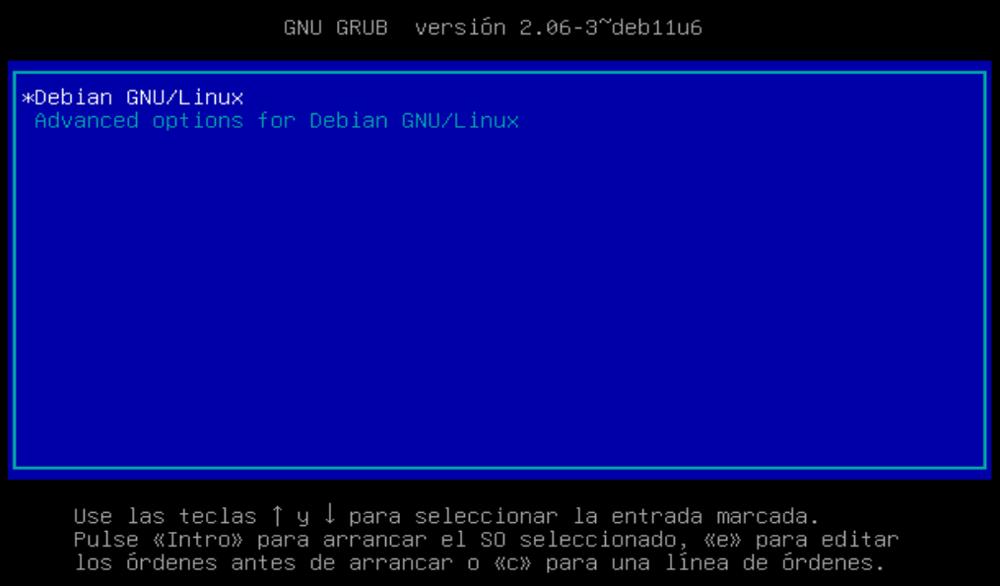
Figura 2: Menú de GRUB mostrando las opciones de arranque de Debian
El archivo /etc/group
Contiene la información sobre los grupos del sistema. Cada línea corresponde a un grupo y tiene 4 campos: los tres primeros separados por : y el cuarto con miembros separados por ,.
Ejemplo:
root:x:0:
alumno:x:1000:
www-data:x:33:
Tecnologia:x:1002:alumno,jperez
Estructura de cada línea:
| Campo | Descripción |
|---|---|
| 1 — Nombre del grupo | Nombre identificatorio del grupo |
| 2 — x | Contraseña del grupo (vacía si hay x; si hubiera una, se mostraría el hash) |
| 3 — GID | ID único del grupo |
| 4 — Miembros | Lista de usuarios que pertenecen al grupo, separados por comas |
En criollo:
/etc/groupes la lista de equipos del sistema. Cada línea es un equipo (grupo), con su número de equipo (GID) y la lista de jugadores (usuarios miembros). Un usuario puede estar en varios grupos, como alguien que juega en varios equipos a la vez.
3) Comandos
useradd / adduser
Crea un nuevo usuario.
Opciones:
- -c: añade un comentario (ej: nombre completo del usuario)
- -d: define dónde generar el home del usuario
- -G: grupos adicionales a los que puede pertenecer el usuario, separados por comas
- -r: crea cuentas de usuarios especiales (de sistema)
- -s: define el shell por defecto al iniciar sesión
- -u: define el UID del usuario (si no se especifica, se asigna automáticamente)
- -m: genera el directorio home del usuario automáticamente
useradd -m -s /bin/bash -c "Juan Perez" jperez
Verificación en /etc/passwd:
jperez:x:1002:1003:Juan Perez:/home/jperez:/bin/bash
En criollo:
useraddes como registrar un nuevo inquilino. Le asignás número de departamento (UID), nombre completo (comentario), qué llave de idioma le das (shell) y en qué piso lo ponés (home). Con-mle creás el departamento vacío listo para usar.
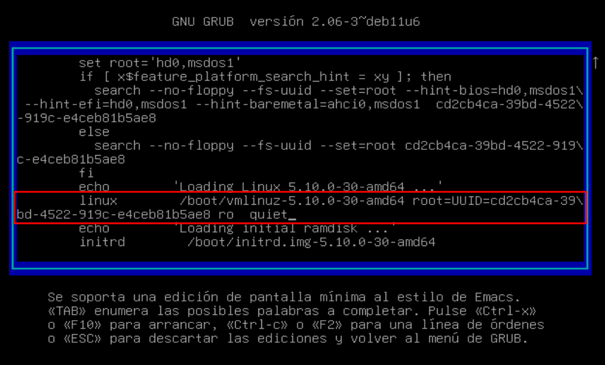
Figura 4: Editor de GRUB mostrando la línea del kernel con ro quiet
usermod
Permite modificar las propiedades de un usuario existente.
Opciones:
- -c: modifica la descripción
- -d: modifica el directorio home
- -G: establece otros grupos adicionales
- -L: bloquea la cuenta del usuario
- -U: desbloquea la cuenta del usuario
- -s: modifica el shell por defecto
usermod -aG Tecnologia jperez
Verificación en /etc/group:
Tecnologia:x:1002:,alumno,jperez
En criollo:
usermodes como el formulario de cambio de datos del inquilino. Podés cambiarle el departamento, el teléfono, o agregarle acceso a zonas comunes (grupos). Con-Lle sacás la llave sin echar al inquilino (bloquear sin eliminar).
userdel
Elimina un usuario del sistema.
- Sin opciones: elimina solo la cuenta, pero deja los archivos personales intactos.
-r: elimina la cuenta y el directorio home.
userdel jperez # elimina la cuenta, deja el home
userdel -r jperez # elimina la cuenta Y el home
En criollo:
userdelsin-res como dar de baja al inquilino pero dejar sus cosas en el departamento. Con-res desalojo total: al tipo y a sus cosas.
passwd
Permite cambiar la contraseña de un usuario.
passwd # cambia la contraseña del usuario actual
passwd jperez # (como root) cambia la contraseña de jperez
groupadd
Crea un grupo nuevo.
groupadd Tecnologia
groupdel
Elimina un grupo del sistema.
groupdel Tecnologia
groupmod
Modifica propiedades de un grupo existente.
groups
Muestra los grupos a los que pertenece el usuario actual (o el usuario especificado).
groups
groups jperez
4) Recuperación de la contraseña de root desde GRUB
En situaciones donde se pierde la contraseña del usuario root, es posible restablecerla desde el gestor de arranque GRUB, iniciando el sistema en un entorno mínimo con permisos de superusuario. Este procedimiento aplica a sistemas basados en Debian.
En criollo: Es como entrar a la casa por la ventana cuando perdiste las llaves. GRUB es el menú que aparece antes de que arranque el sistema, y desde ahí podés arrancar en un modo especial donde tenés acceso total sin necesitar contraseña. Por eso la seguridad física del servidor también importa.
Pasos:
Paso 1: Reiniciar la máquina virtual (o física).
Paso 2: En el menú de GRUB, antes de que el contador llegue a 0, presionar la tecla E para editar temporalmente las opciones de arranque.
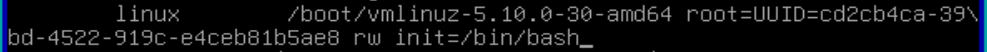
Figura 6: Editor de GRUB con la línea del kernel modificada para agregar init=/bin/bash
Paso 3: Dentro del editor, localizar la línea que comienza con:
linux /boot/vmlinuz-… ro quiet
Paso 4: Al final de esa línea, borrar ro quiet y agregar:
rw init=/bin/bash
Luego presionar F10 para arrancar con esa configuración.
Este parámetro indica que, en lugar del proceso normal de inicio del sistema, se use directamente el intérprete de comandos bash como proceso inicial, otorgando acceso directo al shell con privilegios de root. El sistema arranca con el directorio raíz / montado en modo lectura y escritura (read and write).
Paso 5: Una vez que el sistema esté con el prompt disponible (root@(none):/#), ejecutar:
passwd
Y escribir la nueva contraseña para root.
Paso 6: Para reiniciar la máquina (no usar el reinicio normal en este modo), ejecutar:
exec /sbin/init
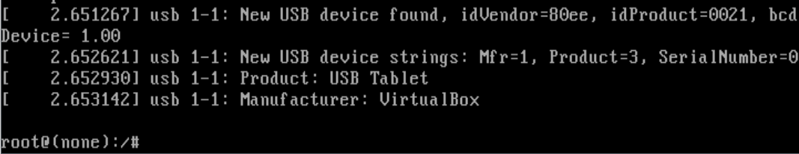
Figura 8: Shell mínimo con acceso root tras el arranque con init=/bin/bash, listo para ejecutar passwd
Glosario rápido
| Término | Definición técnica | En criollo |
|---|---|---|
| UID | User ID — número único que identifica a cada usuario en el sistema | El DNI del usuario en Linux |
| GID | Group ID — número único que identifica a cada grupo en el sistema | El DNI del grupo en Linux |
| root | Superusuario con UID 0 y acceso ilimitado al sistema | El dueño de todo en Linux, puede hacer cualquier cosa |
| usuario especial / no-login | Usuario del sistema que ejecuta servicios, no inicia sesión interactiva | Robot de la fábrica: tiene identidad pero no se sienta a tipear |
| usuario normal | Usuario creado para personas reales, UID > 1000, home en /home | El inquilino del edificio Linux |
| /etc/passwd | Archivo con la información básica de todos los usuarios | El padrón de usuarios del sistema (sin contraseñas reales) |
| /etc/shadow | Archivo con las contraseñas hasheadas y políticas de expiración | La caja fuerte con las contraseñas encriptadas |
| /etc/group | Archivo con la información de los grupos del sistema | La lista de equipos y sus integrantes |
| hash | Resultado de una función criptográfica unidireccional aplicada a la contraseña | La "huella digital" de la contraseña — no se puede revertir |
| GRUB | Grand Unified Bootloader — gestor de arranque del sistema | El menú que aparece antes de que arranque Linux |
| useradd | Comando para crear un nuevo usuario | El formulario de alta de un nuevo inquilino |
| usermod | Comando para modificar propiedades de un usuario existente | El formulario de cambio de datos del inquilino |
| userdel | Comando para eliminar un usuario del sistema | El formulario de baja del inquilino |
| passwd | Comando para cambiar la contraseña de un usuario | El "cambiar contraseña" de la terminal |
| groupadd | Comando para crear un nuevo grupo | Crear un nuevo equipo |
| groupdel | Comando para eliminar un grupo | Disolver un equipo |
| groupmod | Comando para modificar propiedades de un grupo | Editar los datos de un equipo |
| groups | Comando que muestra los grupos a los que pertenece un usuario | "¿En qué equipos estoy?" |
| init=/bin/bash | Parámetro de arranque que inicia bash directamente como proceso 1 | Arrancar el sistema directamente en modo "llave maestra" |
| exec /sbin/init | Comando para reiniciar el sistema desde el shell mínimo de recuperación | El reinicio especial cuando estás en modo de recuperación |
Multiple Choice — 30 preguntas
1. ¿Qué significa que GNU/Linux sea un sistema "multiusuario"?
2. ¿Cuál es el UID del usuario root?
3. ¿Por qué se desaconseja el uso directo del usuario root en tareas diarias?
4. ¿Cuál es el rango típico de UID para usuarios especiales (no-login) en Linux?
5. ¿Cuál de los siguientes es un ejemplo de usuario especial (no-login)?
6. ¿Cuál es el rango típico de UID para usuarios normales en Linux?
7. ¿Dónde se ubica el directorio home de un usuario normal llamado "jperez"?
8. ¿Dónde está ubicado el home del usuario root?
9. ¿En qué archivo del sistema se almacena la información básica de todos los usuarios (login, UID, GID, home, shell)?
10. En el archivo `/etc/passwd`, ¿qué indica la `x` en el segundo campo?
11. ¿Cuántos campos tiene cada línea del archivo `/etc/passwd`?
12. En la línea `alumno:x:1000:1000:Usuario Alumno:/home/alumno:/bin/bash` del archivo `/etc/passwd`, ¿qué representa el quinto campo "Usuario Alumno"?
13. ¿Qué archivo contiene las contraseñas hasheadas de los usuarios y las políticas de expiración?
14. En el archivo `/etc/shadow`, ¿qué indica un `*` (asterisco) en el campo de la contraseña?
15. ¿Cuántos campos tiene cada línea del archivo `/etc/shadow`?
16. ¿Qué información almacena el archivo `/etc/group`?
17. En la línea `Tecnologia:x:1002:alumno,jperez` del archivo `/etc/group`, ¿qué representa el último campo?
18. ¿Qué hace el comando `useradd -m -s /bin/bash -c "Juan Perez" jperez`?
19. ¿Qué opción de `useradd` se usa para crear una cuenta de usuario especial (de sistema)?
20. ¿Qué hace `usermod -aG Tecnologia jperez`?
21. ¿Cuál es la diferencia entre `userdel jperez` y `userdel -r jperez`?
22. ¿Qué hace la opción `-L` del comando `usermod`?
23. ¿Qué hace la opción `-U` del comando `usermod`?
24. ¿Qué comando se usa para ver en qué grupos está un usuario?
25. ¿Cuál es el propósito de recuperar la contraseña de root desde GRUB?
26. ¿Qué tecla se debe presionar en el menú de GRUB para editar las opciones de arranque?
27. Durante el procedimiento de recuperación desde GRUB, ¿qué texto se agrega al final de la línea del kernel en lugar de "ro quiet"?
28. ¿Qué significa el parámetro `rw` que se agrega en la línea del kernel de GRUB durante la recuperación?
29. ¿Qué comando se usa para reiniciar el sistema después de cambiar la contraseña en el shell de recuperación de GRUB?
30. ¿Cuál de los siguientes conjuntos de comandos es el correcto para crear un nuevo usuario "maria", agregarla al grupo "Ventas" y ponerle contraseña? ---
12. SUDO
SUDO
SUDO (Superuser DO) es una herramienta que permite ejecutar comandos con privilegios de administrador sin necesidad de iniciar sesión como root. Agrega una capa de seguridad y control, ya que no requiere cambiar directamente al usuario root. Es considerada crucial para la administración segura del sistema operativo.
En criollo: SUDO es como pedirle permiso al jefe para hacer UNA cosa específica. En vez de que el jefe te deje a cargo de todo el negocio (ser root), te dice "sí, para hacer eso en particular, tenés autorización". Podés hacer la tarea de administrador sin tener acceso ilimitado a todo el sistema.
Características de SUDO
Control de acceso
Permite otorgar permisos granulares: se puede asignar quién puede ejecutar qué comandos como root o como otros usuarios.
En criollo: Podés decir "Juan puede reiniciar el servidor, pero no puede borrar usuarios". No es todo o nada — podés ser muy específico con los permisos.
Registro de actividad
Mantiene un registro (log) de todos los comandos ejecutados a través de SUDO. Esto facilita auditorías y seguimientos de acciones.
En criollo: Cada vez que alguien usa sudo, queda anotado quién lo hizo, qué comando ejecutó y cuándo. Si algo se rompe, podés ver el historial y saber quién fue.
Temporalidad
La configuración de permisos puede ser temporal o específica para ciertos usuarios, comandos o grupos de usuarios.
En criollo: Podés darle a alguien acceso SUDO solo para ciertos comandos, o configurar que la contraseña se recuerde por N minutos antes de pedirla de nuevo.
Minimiza riesgos
Reduce la necesidad de que los usuarios accedan directamente a la cuenta de root, minimizando el riesgo de errores o accesos indebidos.
En criollo: Es más seguro que cada persona haga su tarea específica con los permisos justos, que darle a todos la llave maestra. Si un usuario comete un error o le hackean la cuenta, el daño está limitado a lo que ese usuario podía hacer.
SUDOERS
La configuración de SUDO se maneja principalmente a través del archivo /etc/sudoers. Este archivo define qué usuarios y grupos tienen permisos para usar SUDO y qué comandos pueden ejecutar con él.
IMPORTANTE: Para editar el archivo sudoers se recomienda siempre usar el comando visudo, ya que este verifica la sintaxis antes de guardar los cambios. Un error de sintaxis en /etc/sudoers puede dejar el sistema sin acceso SUDO.
visudo
En criollo:
visudoes como el corrector ortográfico del archivo sudoers. Si escribís algo mal, te avisa antes de guardar. Si editás el archivo directamente con otro editor y lo guardás con un error, podés quedar sin acceso sudo en todo el sistema — 💀
Sección Defaults del archivo sudoers
La sección Defaults configura el comportamiento predeterminado de SUDO. Estas configuraciones afectan a todos los usuarios que utilicen SUDO.
env_reset
Restablece todas las variables de entorno del usuario antes de ejecutar un comando con SUDO.
Defaults env_reset
En criollo: Cuando ejecutás algo con sudo, el entorno (PATH, variables de configuración) se resetea a uno limpio y seguro, no se hereda el entorno del usuario. Evita ataques donde alguien manipula variables de entorno para engañar a los comandos root.
mail_badpass
Envía un correo al administrador si un usuario ingresa una contraseña incorrecta al ejecutar un comando con SUDO.
Defaults mail_badpass
En criollo: Si alguien tipea mal la contraseña al usar sudo (o si alguien está intentando adivinarla), le llega un mail al admin. Es una alerta de seguridad automática.
secure_path
Define una ruta de búsqueda (PATH) segura para los comandos que se ejecutan como superusuario.
Defaults secure_path="/usr/local/sbin:/usr/local/bin:/usr/sbin:/usr/bin:/sbin:/bin"
En criollo: Define de qué carpetas puede sacar comandos sudo. Evita que alguien ponga un programa malicioso con el mismo nombre que un comando del sistema en una carpeta "trampa" y lo ejecute como root.
timestamp_timeout
Determina el tiempo en minutos que SUDO recordará la contraseña de un usuario antes de requerirla nuevamente. El valor por defecto es 5 minutos.
Defaults timestamp_timeout=5
En criollo: Después de que ingresás tu contraseña para usar sudo, el sistema "te recuerda" por 5 minutos. Si volvés a usar sudo antes de que pasen esos 5 minutos, no te vuelve a pedir la contraseña. Pasados los 5 minutos, te la pide de nuevo.
Alias en sudoers
Los alias se usan para simplificar y hacer más legible la configuración de SUDO. Se pueden definir alias para usuarios, comandos y hosts.
host_alias — agrupa hosts
Host_Alias SERVIDORES = server1, server2
Permite referenciar un conjunto de servidores con un solo nombre.
user_alias — agrupa usuarios
User_Alias ADMIN = alumno, jperez
Permite referenciar un conjunto de usuarios con un solo nombre.
cmnd_alias — agrupa comandos
Cmnd_Alias REBOOT_CMDS = /sbin/reboot, /sbin/shutdown
Permite referenciar un conjunto de comandos con un solo nombre.
En criollo: Los alias son como apodos en una libreta de contactos. En vez de escribir "alumno, jperez, maria, pedro" cada vez, creás un alias ADMIN que los agrupa a todos, y después usás ADMIN en las reglas. Más limpio, más fácil de mantener.
Configuración de permisos para usuarios
La sección de privilegios de usuario es el corazón del archivo sudoers. La sintaxis es:
usuario HOST = (USUARIO_COMO:GRUPO_COMO) COMANDOS
Ejemplo completo:
alumno ALL = (ALL:ALL) ALL
Desglose campo por campo:
| Posición | Valor | Significado |
|---|---|---|
1ro — alumno |
nombre del usuario | A quién aplica la regla |
2do — ALL= |
máquinas donde aplica | ALL = en todas las máquinas |
3ro — (ALL: |
usuario como quien se ejecuta | ALL = puede ejecutar como cualquier usuario |
4to — :ALL) |
grupo como quien se ejecuta | ALL = puede ejecutar en nombre de cualquier grupo |
5to — ALL |
comandos permitidos | ALL = puede ejecutar cualquier comando |
Entonces alumno ALL=(ALL:ALL) ALL significa: el usuario alumno puede ejecutar cualquier comando, en cualquier máquina, como cualquier usuario y cualquier grupo.
En criollo: Es como un formulario de autorización de 4 campos: "¿Quién? ¿Dónde? ¿Como quién? ¿Qué puede hacer?". Si todos son ALL, es acceso total — prácticamente igual a ser root. Podés restringir cualquier campo para limitar los permisos.
Ejemplo restrictivo:
jperez ALL = (root) /sbin/reboot
Esto significa: jperez solo puede ejecutar /sbin/reboot como root, en cualquier máquina, y nada más.
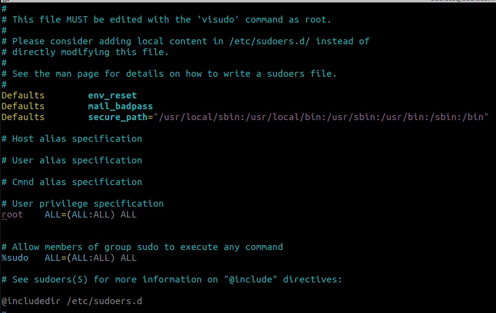
Figura 2: Contenido del archivo /etc/sudoers con las secciones de Defaults y privilegios
Privilegios por grupo en sudoers
Para configurar permisos a grupos (en vez de usuarios individuales), se usa el símbolo % delante del nombre del grupo:
%sudo ALL=(ALL:ALL) ALL
%Tecnologia ALL=(ALL:ALL) ALL
La línea %sudo ALL=(ALL:ALL) ALL significa: todos los usuarios que pertenezcan al grupo sudo pueden ejecutar cualquier comando como cualquier usuario en cualquier máquina.
En criollo: El
%es como decir "equipo" en vez de una persona.%sudose refiere a todos los que están en el grupo sudo. Es más práctico que agregar a cada persona por separado: agregás al usuario al grupo y automáticamente hereda los permisos del grupo.
El directorio sudoers.d
Otra forma de configurar el sudoers es a través del directorio /etc/sudoers.d/. En este directorio se pueden crear configuraciones adicionales en archivos separados, permitiendo mejor organización y modularidad. Cada archivo dentro de este directorio extiende la configuración principal.
En criollo: En vez de poner todo en un solo archivo sudoers gigante, podés crear archivos separados en
/etc/sudoers.d/— uno por aplicación, uno por equipo, etc. Es como tener carpetas en vez de todos los papeles sueltos en un cajón.
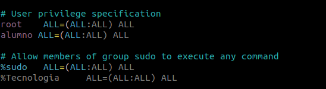
Figura 4: Sección de privilegios de grupos en /etc/sudoers con %sudo y %Tecnologia
Glosario rápido
| Término | Definición técnica | En criollo |
|---|---|---|
| SUDO | Superuser DO — herramienta para ejecutar comandos con privilegios de root sin ser root | El "permiso especial" para hacer una cosa de admin sin ser el admin |
| /etc/sudoers | Archivo de configuración principal de SUDO que define permisos de usuarios y grupos | El reglamento de quién puede hacer qué con sudo |
| visudo | Comando para editar /etc/sudoers con verificación de sintaxis | El editor seguro del sudoers — te avisa si cometés un error antes de guardar |
| Defaults | Sección del sudoers que configura el comportamiento global de SUDO | Configuración base que aplica a todos los que usan sudo |
| env_reset | Opción que restablece las variables de entorno antes de ejecutar con SUDO | Limpia el entorno del usuario antes de ejecutar como root |
| mail_badpass | Opción que manda un mail al admin cuando alguien ingresa mal la contraseña con sudo | Alerta automática de intentos fallidos con sudo |
| secure_path | Define el PATH seguro para comandos ejecutados con SUDO | Las carpetas de confianza de donde sudo puede sacar comandos |
| timestamp_timeout | Tiempo en minutos que SUDO recuerda la contraseña (default: 5 min) | "Por cuántos minutos me acordás la contraseña antes de volver a pedirla" |
| host_alias | Alias que agrupa múltiples hosts bajo un nombre | Apodo para un conjunto de servidores |
| user_alias | Alias que agrupa múltiples usuarios bajo un nombre | Apodo para un conjunto de usuarios |
| cmnd_alias | Alias que agrupa múltiples comandos bajo un nombre | Apodo para un conjunto de comandos |
| ALL=(ALL:ALL) ALL | Regla de sudoers que otorga permisos totales: cualquier máquina, cualquier usuario, cualquier comando | Acceso total con sudo — prácticamente igual a ser root |
| % (porcentaje) | Prefijo en sudoers que indica que la regla aplica a un grupo, no a un usuario | El "equipo" en las reglas de sudo — afecta a todos los del grupo |
| sudoers.d | Directorio que permite definir configuraciones de sudo en archivos separados | La carpeta de configuraciones modulares de sudo |
Multiple Choice — 30 preguntas
1. ¿Qué significa la sigla SUDO?
2. ¿Cuál es el propósito principal de SUDO?
3. ¿Cuál de las siguientes es una característica de SUDO?
4. ¿En qué archivo se almacena la configuración principal de SUDO?
5. ¿Por qué se recomienda usar `visudo` para editar el archivo sudoers en lugar de un editor de texto común?
6. ¿Qué hace la opción `env_reset` en la sección `Defaults` del sudoers?
7. ¿Qué hace la opción `mail_badpass` en el archivo sudoers?
8. ¿Qué define la opción `secure_path` en el sudoers?
9. ¿Cuál es el valor por defecto del `timestamp_timeout` en SUDO?
10. ¿Qué efecto tiene configurar `timestamp_timeout=0` en el sudoers?
11. ¿Para qué sirven los alias en el archivo sudoers?
12. ¿Qué tipo de elemento agrupa el `host_alias` en sudoers?
13. ¿Qué tipo de elemento agrupa el `user_alias` en sudoers?
14. ¿Qué hace la siguiente línea en el sudoers? `Cmnd_Alias REBOOT_CMDS = /sbin/reboot, /sbin/shutdown`
15. En la regla `alumno ALL=(ALL:ALL) ALL`, ¿qué representa el primer `ALL` (después del nombre de usuario)?
16. En la regla `alumno ALL=(ALL:ALL) ALL`, ¿qué representa el `ALL` dentro del paréntesis antes de los dos puntos `(ALL:`?
17. En la regla `alumno ALL=(ALL:ALL) ALL`, ¿qué representa el `ALL` dentro del paréntesis después de los dos puntos `:ALL)`?
18. En la regla `alumno ALL=(ALL:ALL) ALL`, ¿qué representa el último `ALL` (después del paréntesis de cierre)?
19. ¿Cómo se configura en sudoers una regla que aplique a un **grupo** en lugar de a un usuario individual?
20. ¿Qué significa la siguiente línea en sudoers? `%sudo ALL=(ALL:ALL) ALL`
21. ¿Para qué sirve el directorio `/etc/sudoers.d/`?
22. Un administrador quiere que el usuario `jperez` solo pueda ejecutar el comando `/sbin/reboot` con sudo en cualquier máquina. ¿Cuál es la línea correcta para el sudoers?
23. ¿Cuál de las siguientes afirmaciones sobre SUDO es CORRECTA?
24. ¿Qué sucede si el archivo sudoers tiene un error de sintaxis y se guarda sin usar `visudo`?
25. ¿Cuál es la diferencia entre asignar permisos sudo a un usuario individual versus asignárselos a un grupo?
26. Un administrador configura `Defaults timestamp_timeout=10`. ¿Qué efecto tiene esto?
27. ¿Cuál es el beneficio de la característica de "registro de actividad" de SUDO?
28. ¿Cuál es el propósito de `env_reset` desde el punto de vista de la seguridad?
29. Tenés la siguiente configuración en sudoers: ``` User_Alias ADMIN = alumno, jperez Cmnd_Alias NET_CMDS = /sbin/ifconfig, /sbin/ip ADMIN ALL=(root) NET_CMDS ``` ¿Qué pueden hacer alumno y jperez con esta configuración?
30. ¿Cuál de las siguientes prácticas de seguridad está relacionada con SUDO según el apunte? ---
13. Gestor de Software (Gestor de Paquetes)
1) ¿Qué es un gestor de paquetes?
Un gestor de paquetes es una herramienta que permite a los usuarios y administradores gestionar el software de manera eficiente. Permiten automatizar el proceso de instalación, actualización, configuración y eliminación de programas.
En las diferentes distribuciones de Linux, cada una utiliza su gestor de paquetes propio, con su propio archivo de configuración que apunta a repositorios específicos:
| Distribución | Gestor | Archivo de configuración |
|---|---|---|
| RedHat / CentOS | YUM | /etc/yum.conf |
| Arch Linux | PACMAN | /etc/pacman.conf |
| Debian / Ubuntu | APT | /etc/apt/sources.list |
En criollo: Un gestor de paquetes es como una tienda de aplicaciones automática para Linux. En vez de ir a buscar el instalador a una página web, vos le decís "quiero instalar tal cosa" y él solo va al repositorio oficial, la baja, resuelve qué otras cosas necesita y la instala. Como el App Store pero en terminal y sin publicidades molestas.
2) Distribución de Linux
Una distribución de Linux, comúnmente llamada "distro", es un sistema operativo basado en el Kernel de Linux pero con herramientas y configuraciones específicas para diferentes usuarios según sus necesidades. Las distros pueden variar en:
- Interfaz gráfica
- Modo de manejo de actualizaciones
- Archivos de configuración
En criollo: El Kernel de Linux es el motor base. Una distro es como el auto completo: mismo motor, pero diferente carrocería, tablero y opciones. Ubuntu, Debian, Arch, Fedora… todas corren el mismo kernel pero se sienten distintas.
3) Diferencias entre Rolling Release y Standard Release
Rolling Release
El sistema se actualiza de forma continua. No hay versiones fijas; los paquetes se renuevan constantemente para tener siempre el software más reciente, pero esto aumenta el riesgo de inestabilidad.
Distribuciones que usan este esquema: Arch Linux, OpenSUSE.
Standard Release (o Point Release)
Las actualizaciones se agrupan en versiones estables que se publican periódicamente. Este modelo prioriza la estabilidad y es común en entornos de producción.
Distribuciones que usan este esquema: Debian, Ubuntu LTS, Fedora.
En criollo: Rolling Release es como Netflix que agrega contenido nuevo todo el tiempo — siempre tenés lo último pero a veces algo se rompe. Standard Release es como una temporada completa que se estrena cuando ya está probada y pulida — menos novedades, pero no te quedás sin ver el final porque algo falló.
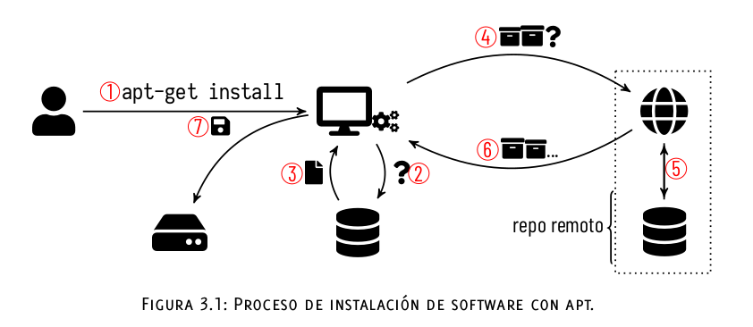
Figura 2: Flujo de instalación de paquetes con APT
4) sources.list
Durante la instalación del sistema operativo se crea el archivo /etc/apt/sources.list, donde se almacenan los repositorios que contienen la lista de paquetes que Debian tiene disponibles para el usuario.
Ejemplo de contenido típico:
deb http://deb.debian.org/debian bullseye main
deb http://security.debian.org/debian-security bullseye-security main
deb http://deb.debian.org/debian bullseye-updates main
Este archivo puede ser editado por un usuario con permisos para agregar o remover repositorios. Cada distribución cuenta con repositorios oficiales mientras la versión esté soportada en términos de mantenimiento y parches de seguridad.
Formato de cada línea del sources.list
deb [ opcion1=valor1 opcion2=valor2 ] uri distro [componente1] [componente2] [...]
Primera palabra: deb o deb-src
- deb: el archivo contiene paquetes binarios precompilados .deb
- deb-src: se refiere a paquetes fuente — el código original del programa más los archivos de control y diferenciales necesarios para empaquetarlo
uri: URL del repositorio desde donde se descargan los paquetes.
distro: nombre de la distribución a la que pertenece el repositorio (jessie, stretch, buster, bullseye, bookworm).
componente — hay 3 opciones excluyentes:
- main: paquetes libres que cumplen con las DFSG (Directrices de Software Libre de Debian)
- contrib: paquetes libres compatibles con DFSG pero con dependencias que podrían no ser gratuitas
- non-free: paquetes con costo (drivers, codecs) que no cumplen con la DFSG
En criollo: El
sources.listes la libreta de contactos del gestor de paquetes. Ahí están anotadas todas las "tiendas" (repositorios) donde ir a buscar software. Sin esa libreta, APT no sabe dónde ir a buscar nada.En criollo (DFSG): Las DFSG son como el sello de "producto orgánico certificado" del software libre: garantizan que el paquete se puede usar, modificar y redistribuir libremente.
non-freesería el equivalente al producto importado que te cobra extra.
APT vs dpkg
Cuando un usuario solicita un paquete, el sistema usa principalmente APT (Advanced Package Tool). APT facilita la interacción obteniendo todos los archivos y dependencias necesarias desde los repositorios.
APT es una capa superior a dpkg, que funciona como capa inferior. A diferencia de APT, dpkg no resuelve dependencias: si intentás instalar un paquete con dpkg que requiere paquetes adicionales, dpkg no los descarga automáticamente.
| Característica | APT | dpkg |
|---|---|---|
| Nivel | Alto nivel | Bajo nivel |
| Manejo de dependencias | Resuelve y descarga automáticamente | No resuelve dependencias automáticamente |
| Uso típico | Instalar, actualizar y eliminar desde repositorios | Instalar y eliminar paquetes locales .deb |
| Función principal | Interactúa con repositorios, maneja dependencias | Gestiona directamente archivos .deb |
| Facilidad de uso | Más amigable y automatizado | Requiere más intervención manual |
En criollo: dpkg es el mecánico que sabe instalar piezas de a una. APT es el gerente que sabe qué piezas necesitás, las va a buscar todas juntas y se las pasa al mecánico para que las ponga. Normalmente usás APT porque hace todo el trabajo sucio.
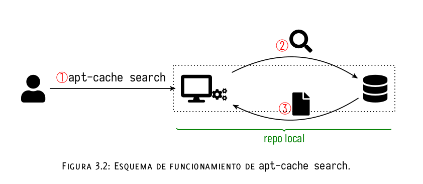
Figura 4: Esquema de funcionamiento de apt-cache search
5) ¿Qué diferencia hay entre apt y apt-get?
apt y apt-get son herramientas relacionadas con algunas diferencias:
aptfue introducido en versiones más recientes de Debian (a partir de Debian 8 "Jessie") como una interfaz más fácil de usaraptcombina varias funciones deapt-gety otras herramientas comoapt-cache- Ambos comandos siguen existiendo y funcionan bien
- Al momento no existe una diferencia que sustancie el uso de uno u otro
En criollo:
apt-getes el comando viejo de toda la vida,aptes la versión modernizada con mejor output y más cómoda. Son como el control remoto viejo y el nuevo — hacen lo mismo, pero el nuevo tiene mejor diseño. Podés usar cualquiera de los dos.
Instalación de paquetes — Flujo completo
La administración de paquetes requiere permisos de administrador (o tener sudo instalado y pertenecer al grupo sudoers).
sudo apt-get install [nombre_de_aplicación]
Pasos del proceso:
1. El usuario solicita instalar una aplicación
2. El gestor de paquetes consulta localmente la disponibilidad de la aplicación buscada
3. La búsqueda devuelve los paquetes que serán descargados
4. Con esa información, el gestor va a los repositorios listados en el sources.list
5. El repositorio gestiona los paquetes almacenados
6. Los paquetes son entregados al gestor que los solicitó
7. Se instalan de forma local
En criollo: Es como pedir comida por delivery. Vos le decís al repartidor (APT) qué querés, él consulta el menú local (índice), va al restaurante (repositorio), trae todo lo que pediste más los acompañamientos necesarios (dependencias) y lo deja en tu puerta (instala en el sistema).
Búsqueda de paquetes
Con el comando apt-cache search se realiza una búsqueda en el índice local:
apt-cache search [nombre_de_la_aplicación]
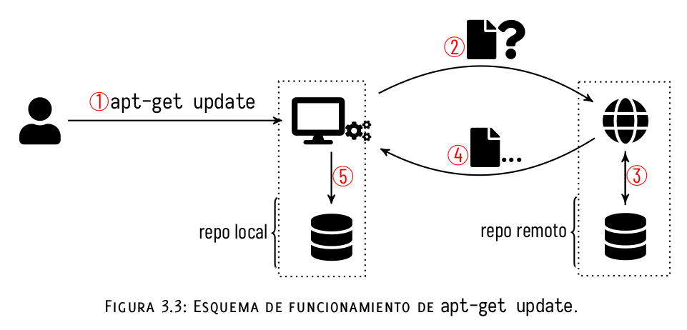
Figura 6: Esquema de funcionamiento de apt-get update
Actualización del índice local — apt-get update
Cuando ejecutamos apt-get update, el gestor de paquetes actualiza los índices locales comparándolos con lo que encuentra en los repositorios del sources.list.
apt-get update
Esta acción debe repetirse:
- Periódicamente para mantener el índice actualizado
- Siempre que el sources.list sea modificado, para garantizar que el gestor lea la nueva configuración
En criollo:
apt-get updateno instala nada ni actualiza ningún programa. Solo actualiza el catálogo de "qué hay disponible" en los repositorios. Es como bajar el folleto nuevo del supermercado antes de ir a hacer las compras — primero te enterás de los precios y disponibilidad, después comprás.
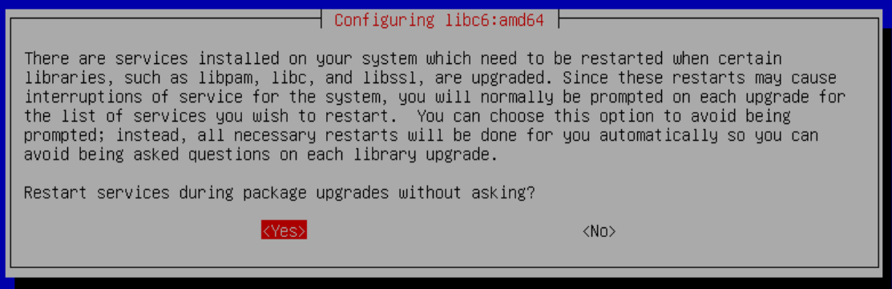
Figura 8: Diálogo de configuración de libc6 durante apt full-upgrade
6) Upgrade de Sistema Operativo
Debian permite actualizar a versiones mayores del sistema directamente, sin reinstalar. Este procedimiento se conoce como upgrade de distribución y consiste en reemplazar los paquetes de la versión actual por los de la nueva versión estable.
El ejemplo del apunte es la actualización de Debian 11 (Bullseye) a Debian 12 (Bookworm).
Verificar la versión actual
lsb_release -a
o
cat /etc/debian_version
Pasos para el upgrade correcto
Paso 1: Actualizar lista de repositorios
apt update
Paso 2: Actualizar paquetes instalados
apt upgrade
Paso 3: Limpiar paquetes residuales
apt autoremove
Paso 4: Actualizar el sources.list — Reemplazar las referencias a bullseye por bookworm:
deb http://deb.debian.org/debian bookworm main contrib non-free-firmware
deb http://security.debian.org/ bookworm-security main contrib non-free-firmware
deb http://deb.debian.org/debian bookworm-updates main contrib non-free-firmware
Paso 5: Actualizar la lista nuevamente
apt update
Paso 6: Actualizar el sistema operativo completo
apt full-upgrade
Durante este paso, el sistema:
- Actualiza componentes del sistema operativo
- Reemplaza bibliotecas
- Actualiza servicios instalados
- Puede modificar configuraciones (con previo aviso)
Pueden aparecer mensajes con avisos durante el proceso — es necesario revisarlos y seguir las indicaciones.
Paso 7: Reiniciar el sistema
reboot
Paso 8: Verificar la versión actualizada
lsb_release -a
Salida esperada tras el upgrade:
No LSB modules are available.
Distributor ID: Debian
Description: Debian GNU/Linux 12 (bookworm)
Release: 12
Codename: bookworm
En criollo: El upgrade de distribución es como renovar toda la ropa de tu placard sin mudarte de casa. No reinstalás el sistema operativo desde cero (no te mudás), solo reemplazás cada paquete viejo por el nuevo equivalente de la versión siguiente. Es más cómodo pero más delicado — hay que hacerlo con cuidado y siguiendo los pasos en orden.
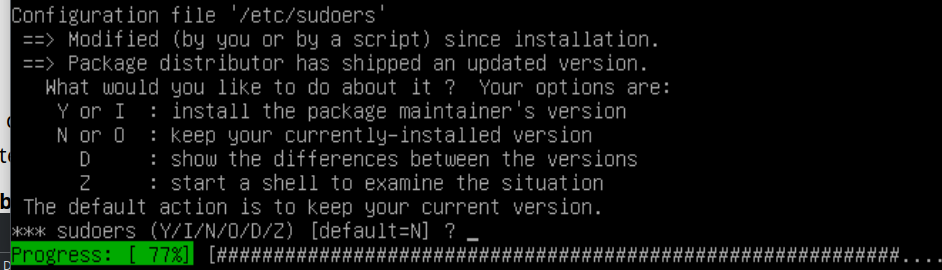
Figura 10: Aviso de conflicto en archivo sudoers durante upgrade
7) Comandos — Referencia rápida
| Comando | Qué hace |
|---|---|
apt-get update |
Descarga la información más reciente y actualiza el índice local de paquetes |
apt-get install [app] |
Instala la aplicación especificada |
apt-get upgrade |
Actualiza los paquetes instalados a sus versiones más recientes |
apt-get remove [app] |
Elimina la aplicación pero conserva los archivos de configuración |
apt-get purge [app] |
Elimina la aplicación y todos sus archivos de configuración |
apt-cache search [app] |
Busca la aplicación en el índice local |
apt show [app] |
Muestra información de versión, dependencias, tamaño y descripción |
apt autoremove |
Elimina paquetes que ya no son necesarios (dependencias huérfanas) |
apt full-upgrade |
Actualiza el sistema completo, puede instalar/remover paquetes según sea necesario |
lsb_release -a |
Muestra la versión actual del sistema operativo |
cat /etc/debian_version |
Muestra el número de versión de Debian |
En criollo (remove vs purge):
removees como desinstalar una app pero dejar sus preferencias guardadas por si la reinstalás después.purgees borrado total — la app y toda su configuración desaparecen. Si sabés que no vas a volver a usar algo, usápurgepara no dejar basura.
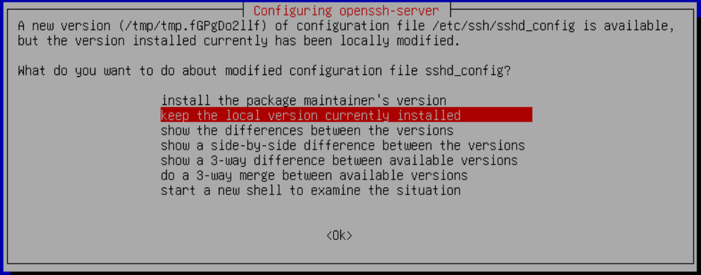
Figura 12: Diálogo de configuración de openssh-server durante upgrade
Glosario rápido
| Término | Definición técnica | En criollo |
|---|---|---|
| Gestor de paquetes | Herramienta que automatiza instalación, actualización y eliminación de software | El "App Store" de Linux en la terminal |
| APT (Advanced Package Tool) | Gestor de alto nivel que resuelve dependencias e interactúa con repositorios | El intermediario inteligente que sabe qué necesitás y lo busca todo junto |
| dpkg | Gestor de bajo nivel que instala/elimina archivos .deb directamente |
El mecánico que pone piezas de a una, sin preguntar si le faltan tornillos |
| Repositorio | Servidor remoto donde se almacenan y distribuyen los paquetes de software | La "tienda" oficial de donde APT descarga los programas |
| sources.list | Archivo de configuración de APT con la lista de repositorios habilitados | La libreta de contactos con las direcciones de las tiendas |
| Rolling Release | Modelo de actualización continua sin versiones fijas | Netflix de distros: siempre lo último, pero puede haber sorpresas |
| Standard Release | Modelo con versiones estables publicadas periódicamente | Temporadas completas y probadas — menos novedades, más estabilidad |
| Distro (distribución) | Sistema operativo basado en Linux con herramientas y configuraciones propias | Una versión "armada" de Linux, como Ubuntu o Debian |
| DFSG | Directrices de Software Libre de Debian — estándar de software verdaderamente libre | El sello de "software 100% libre y sin letra chica" |
main |
Componente del repositorio con paquetes libres que cumplen DFSG | El sector "todo orgánico" del repositorio |
contrib |
Paquetes libres con dependencias posiblemente no gratuitas | Software libre que necesita algo que no lo es para funcionar |
non-free |
Paquetes que no cumplen con la DFSG (codecs, drivers privativos) | Los paquetes "premium" o con licencia cerrada |
deb |
Formato de paquete binario precompilado para distribuciones Debian | El archivo .exe o .msi del mundo Debian |
deb-src |
Paquete fuente — código original + archivos para compilarlo | El código fuente para armar el paquete desde cero |
| Upgrade de distribución | Proceso de actualizar a una versión mayor del SO sin reinstalar | Actualizar Windows 10 a Windows 11 pero desde la terminal y sin perder nada |
| Bookworm | Nombre en código de Debian 12 | La versión "actual" de Debian en el apunte |
| Bullseye | Nombre en código de Debian 11 | La versión "anterior" de Debian en el apunte |
apt full-upgrade |
Actualiza el sistema completo, pudiendo instalar/remover paquetes | El upgrade "completo" que mueve todo lo necesario para llegar a la nueva versión |
| Índice local | Copia local del catálogo de paquetes disponibles en los repositorios | El folleto descargado del supermercado — te enterás qué hay disponible antes de pedir |
| sudoers | Lista de usuarios autorizados a ejecutar comandos como administrador | El grupo de personas con llave maestra del sistema |
Multiple Choice — 30 preguntas
1. ¿Qué es un gestor de paquetes?
2. ¿En qué archivo guarda su configuración el gestor de paquetes APT de Debian?
3. ¿Cuál es el gestor de paquetes nativo de Arch Linux?
4. ¿Cuál de las siguientes distribuciones usa el modelo Rolling Release?
5. ¿Cuál es la principal ventaja del modelo Standard Release frente al Rolling Release?
6. En el archivo `sources.list`, ¿qué indica la palabra `deb` al inicio de una línea?
7. ¿Qué componente del repositorio debe elegirse si se quiere garantizar que todos los paquetes cumplen estrictamente con las Directrices de Software Libre de Debian (DFSG)?
8. ¿Qué diferencia principal existe entre APT y dpkg?
9. ¿Qué ocurre si intentás instalar un paquete con `dpkg` que requiere dependencias adicionales?
10. ¿Cuándo fue introducido `apt` como alternativa a `apt-get`?
11. ¿Qué comando se usa para instalar una aplicación con el gestor APT?
12. ¿Qué hace el comando `apt-get update`?
13. ¿Cuál es el paso 4 del flujo de instalación de paquetes con APT?
14. ¿Qué comando permite buscar una aplicación en el índice local de APT?
15. ¿Qué diferencia hay entre `apt-get remove` y `apt-get purge`?
16. ¿Qué comando muestra información de versión, dependencias y descripción de un paquete?
17. Durante el proceso de upgrade de distribución de Debian 11 a 12, ¿qué archivo debe modificarse para apuntar a los nuevos repositorios?
18. ¿Qué comando se usa para verificar la versión actual de Debian instalada en el sistema?
19. ¿Qué hace `apt full-upgrade` durante el upgrade de distribución?
20. Al actualizar de Debian 11 (Bullseye) a Debian 12 (Bookworm), ¿cuál es el orden correcto de los primeros pasos?
21. ¿Qué componente del repositorio corresponde a paquetes que tienen dependencias posiblemente no gratuitas, pero que el paquete en sí es libre?
22. ¿Cuál de las siguientes distribuciones usa el modelo Standard Release?
23. ¿En qué capa del sistema de gestión de paquetes se ubica dpkg respecto a APT?
24. Después de ejecutar `apt full-upgrade` y reiniciar el sistema, ¿cuál de estas salidas confirma que la actualización a Debian 12 fue exitosa?
25. ¿Por qué es necesario ejecutar `apt update` DESPUÉS de modificar el `sources.list`?
26. Un administrador quiere instalar un driver de video privativo en Debian. Este driver no cumple con las DFSG. ¿En qué componente del repositorio lo encontraría?
27. ¿Qué sucede con los archivos de configuración de un programa cuando se ejecuta `apt-get remove [app]`?
28. ¿Cuál de los siguientes comandos elimina paquetes que ya no son necesarios porque otras aplicaciones que dependían de ellos fueron desinstaladas?
29. Un usuario ejecuta `apt-cache search nginx` y no encuentra el paquete, aunque sabe que existe en los repositorios oficiales de Debian. ¿Cuál es la causa más probable?
30. ¿Cuál es la principal diferencia funcional entre `apt` y `apt-get`? ---
14. Redes
Redes — Concepto general
Una red es un conjunto de dispositivos conectados entre sí con el objetivo de compartir recursos e intercambiar información. Las redes pueden ser tan simples como dos computadoras conectadas por un cable, o tan complejas como Internet, que conecta millones de dispositivos a nivel mundial.
La comunicación en una red siempre implica al menos dos partes:
- Cliente: quien genera las peticiones
- Servidor: quien escucha al cliente y espera que se conecten a él
Ejemplo concreto: una computadora que aloja http://www.ejemplo.com es el servidor. La computadora del usuario que accede al sitio desde un navegador web es el cliente.
En criollo: Una red es como el sistema de correos: necesitás al menos alguien que manda (cliente) y alguien que recibe (servidor). Internet es básicamente la red más grande del mundo — millones de "correos" volando al mismo tiempo entre dispositivos.
Tipos de redes
La clasificación de los tipos de redes se da en función del área geográfica que comprenden:
LAN (Local Area Network)
Redes que cubren áreas pequeñas como hogares, oficinas o edificios. Permiten compartir recursos como archivos y dispositivos de impresión.
WAN (Wide Area Network)
Redes que abarcan áreas geográficas amplias: ciudades, países o continentes. El ejemplo más común de WAN es Internet.
PAN (Personal Area Network)
Redes personales de corto alcance, típicamente usadas para conectar dispositivos como teléfonos o auriculares a una computadora. Tecnología típica: Bluetooth.
MAN (Metropolitan Area Network)
Redes que cubren áreas metropolitanas como una ciudad. Son más grandes que las LAN pero más pequeñas que las WAN.
En criollo: LAN es la red de tu casa o trabajo. WAN es Internet (la red de redes). PAN es la conexión Bluetooth entre tus auriculares y el celu. MAN sería algo como la red de fibra que cubre toda una ciudad.
Dirección IP
Una dirección IP (Internet Protocol) es un número único asignado a cada dispositivo en una red. Permite que los dispositivos se identifiquen y se comuniquen entre sí. Es similar a la dirección de una casa en el mundo físico.
Existen dos versiones de direccionamiento IP:
IPv4 (versión 4)
- La más utilizada actualmente
- Tamaño: 32 bits
- Notación: decimal, separada por puntos
- Ejemplo:
192.168.1.1
IPv6 (versión 6)
- Desarrollada para superar las limitaciones de IPv4 (agotamiento de direcciones)
- Tamaño: 128 bits
- Notación: hexadecimal, separada por dos puntos
- Ejemplo:
2001:0db8:85a3:0000:0000:8a2e:0370:7334
En criollo: La dirección IP es el número de casa de tu dispositivo en internet. IPv4 es como los números de teléfono de 8 dígitos — funcionaron bien hasta que se agotaron. IPv6 es como pasarse a números de 12 dígitos para tener suficientes para todos los dispositivos del planeta (y de marte por las dudas).
Composición detallada de una dirección IPv4
Una dirección IPv4 tiene 32 bits organizados en cuatro octetos de 8 bits cada uno, escritos como cuatro números decimales separados por puntos. Cada número puede tomar valores entre 0 y 255.
| Formato | Ejemplo |
|---|---|
| Decimal (normal) | 192.168.1.1 |
| Binario | 11000000.10101000.00000001.00000001 |
Clases de Direcciones IPv4
Las direcciones IPv4 se dividen en clases que definen cómo se distribuyen redes y hosts:
| Clase | Desde | Hasta | Formato | Cantidad de Redes | Cantidad de Hosts | Aplicación |
|---|---|---|---|---|---|---|
| A | 0.0.0.0 |
127.255.255.255 |
red.host.host.host | 128 | 16.777.214 | Redes Grandes |
| B | 128.0.0.0 |
191.255.255.255 |
red.red.host.host | 16.384 | 65.534 | Redes Medianas |
| C | 192.0.0.0 |
223.255.255.255 |
red.red.red.host | 2.097.152 | 254 | Redes Pequeñas |
Existen además:
- Clase D: para multicast (envío a múltiples destinatarios simultáneamente)
- Clase E: reservada para investigación y uso experimental
En criollo: Las clases son como las categorías de casas: Clase A son los barrios enormes con millones de casas (como el bloque de direcciones de Google o una empresa multinacional). Clase C son los barrios chicos, tipo un edificio de departamentos — solo 254 "casas" pero hay millones de esos barrios.
Máscara de Red
La máscara de red (netmask) define qué parte de la dirección IP corresponde a la red y qué parte a los hosts. Está compuesta por una serie de unos (1) seguidos por ceros (0):
- Los unos definen la parte de la red
- Los ceros definen la parte de los hosts
Ejemplo:
Dirección IP: 192.168.1.1
Máscara de red: 255.255.255.0
En binario: 11111111.11111111.11111111.00000000
La máscara indica que los primeros 24 bits (3 octetos) son para la red y los últimos 8 bits (1 octeto) para los hosts. En este caso:
- Red: 192.168.1
- Hosts posibles: 192.168.1.1 a 192.168.1.254 (254 hosts)
Notación CIDR
Existe una forma abreviada llamada CIDR (Classless Inter-Domain Routing), que usa un sufijo con el número de bits de red:
192.168.1.1/24 → Los primeros 24 bits son para la red, 8 restantes para hosts
En criollo: La máscara de red es como el código de área del teléfono: los primeros números identifican el "barrio" (la red) y los últimos identifican el "teléfono" (el host).
/24significa que los primeros 24 de los 32 bits son "código de área". Cuanto más grande el número después de la /, menos dispositivos caben en esa red.
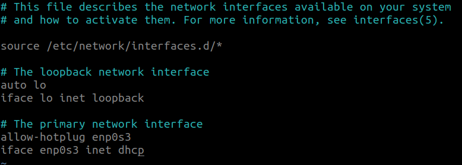
Figura 2: Archivo /etc/network/interfaces configurado para obtener IP dinámica con DHCP
Puerta de enlace predeterminada (Gateway)
La puerta de enlace es el dispositivo que actúa como punto de acceso a otras redes, incluyendo Internet. Los paquetes que no están destinados a un dispositivo dentro de la red local se envían al gateway para que sean redirigidos al destino correspondiente.
En una red hogareña, la IP de la puerta de enlace predeterminada suele estar asignada al router del proveedor de internet (ISP).
En criollo: El gateway es la "salida" de tu red local. Si querés mandar un paquete a alguien en otra ciudad (o sea, otra red), tu dispositivo le dice al gateway "che, llevá esto que no es para el barrio". En casa, tu gateway es el router que te dio el proveedor de internet.
DNS (Domain Name System)
El DNS es el sistema que traduce nombres de dominio en direcciones IP. Los dispositivos en una red solo entienden direcciones IP. Sin un DNS, tendríamos que memorizar la IP de cada sitio web al que queremos acceder.
Ejemplo: www.starwars.com → 200.125.79.219
En criollo: El DNS es la agenda de contactos de Internet. En vez de memorizar el número de celular de cada amigo, guardás su nombre y el celu lo traduce solo cuando llamás. Lo mismo hace el DNS: vos ponés "google.com" y él traduce a la IP que es lo que entienden las computadoras.
DHCP (Dynamic Host Configuration Protocol)
El DHCP es un protocolo que asigna automáticamente configuraciones de red a los dispositivos. Cuando un dispositivo se conecta a la red, solicita una dirección IP y el servidor DHCP se encarga de asignarla junto con:
- Dirección IP
- Máscara de red
- Puerta de enlace predeterminada
En criollo: DHCP es el portero del edificio que le asigna número de departamento a cada persona nueva que llega. Sin DHCP, tendrías que ir a configurar manualmente la IP en cada dispositivo que se conecta a la red. Con DHCP, llegás y en automático te asignan todo lo que necesitás para funcionar en la red.
Configuración de Red en GNU/Linux (Debian)
En Debian, la configuración de red se gestiona principalmente a través del archivo interfaces ubicado en /etc/network/.
/etc/network/interfaces
Para configurar la IP de una placa de red, hay dos opciones:
Asignación estática
Vos seleccionás y completás manualmente los datos:
address: 192.168.0.10
netmask: 255.255.255.0
gateway: 192.168.0.1
Asignación automática (DHCP)
La placa queda configurada por default y un servidor DHCP (que debe existir en la red) asigna automáticamente todos los datos necesarios.
Directivas del archivo interfaces
auto: indica qué interfaces de red deben iniciarse automáticamente cuando el sistema arranca. Útil para que ciertas interfaces estén activas sin intervención manual.
allow-hotplug: habilita la interfaz de red cuando el dispositivo de red correspondiente se detecta automáticamente (por ejemplo, al conectar un cable Ethernet).
iface: define una interfaz de red y especifica cómo se configurará. Debe ir seguida de tres parámetros:
1. Nombre de la interfaz: eth0, enp0s3, wlan0, lo
2. Tipo de conexión: inet para IPv4 o inet6 para IPv6
3. Método de configuración: static (IP manual) o dhcp (IP automática)
Ejemplo — Configuración en DHCP
auto eth0
allow-hotplug eth0
iface eth0 inet dhcp
Ejemplo — Configuración STATIC
auto eth0
iface eth0 inet static
address 192.168.0.10
netmask 255.255.255.0
gateway 192.168.0.1
Los parámetros en modo static:
- address: dirección IP asignada al dispositivo
- netmask: máscara de red
- gateway: puerta de enlace predeterminada
En criollo: El archivo
interfaceses como el manual de instrucciones de la placa de red. Podés decirle "buscá la dirección IP sola" (DHCP) o "usá esta dirección fija siempre" (static). La opción estática es útil para servidores que necesitan ser siempre encontrados en la misma IP; la dinámica es más cómoda para computadoras de escritorio o laptops.
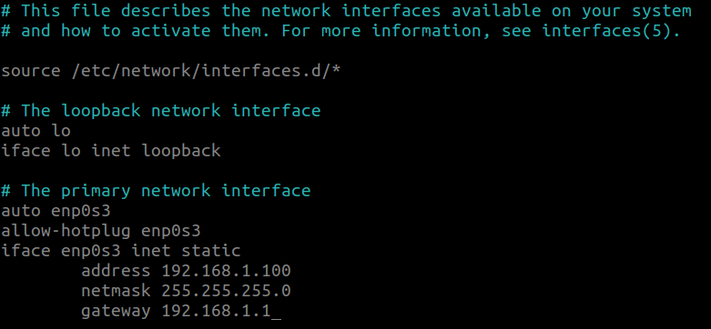
Figura 4: Contenido del archivo /etc/network/interfaces configurado con IP estática
Glosario rápido
| Término | Definición técnica | En criollo |
|---|---|---|
| Red | Conjunto de dispositivos conectados para compartir recursos e información | Todo lo que conecta computadoras entre sí |
| Cliente | Dispositivo que genera peticiones a un servidor | El que pide — tu navegador cuando abrís una página |
| Servidor | Dispositivo que escucha y responde a los clientes | El que sirve — la computadora que aloja la página |
| LAN | Local Area Network — red de área local (casa, oficina, edificio) | La red de tu casa o del trabajo |
| WAN | Wide Area Network — red de área amplia (ciudades, países, continentes) | Internet es la WAN más grande |
| PAN | Personal Area Network — red personal de corto alcance (Bluetooth) | La conexión entre tu celu y los auriculares |
| MAN | Metropolitan Area Network — red que cubre una ciudad | La red de fibra que cubre toda una ciudad |
| IP | Número único que identifica un dispositivo en una red | El "número de casa" de tu computadora en la red |
| IPv4 | Versión 4 del protocolo IP — 32 bits, notación decimal | El formato de IP más común: 192.168.1.1 |
| IPv6 | Versión 6 del protocolo IP — 128 bits, notación hexadecimal | El formato nuevo con más espacio de direcciones |
| Octeto | Grupo de 8 bits; una IPv4 tiene 4 octetos | Cada número entre los puntos de una IP (0-255) |
| Máscara de red (netmask) | Define qué parte de la IP es la red y qué parte es el host | El "código de área" que separa el barrio del número de casa |
| CIDR | Notación abreviada de IP + máscara (ej: 192.168.1.1/24) |
La forma corta de escribir IP y máscara juntas |
| Gateway | Dispositivo que conecta una red local con otras redes | La "puerta de salida" de tu red hacia Internet |
| DNS | Sistema que traduce nombres de dominio a direcciones IP | La agenda de contactos de Internet |
| DHCP | Protocolo que asigna configuración de red automáticamente | El portero que le asigna número a cada dispositivo nuevo |
/etc/network/interfaces |
Archivo de configuración de red en Debian/Linux | El archivo donde le decís a Linux cómo conectarse a la red |
auto |
Directiva que indica que una interfaz arranca automáticamente | "Arrancá esta interfaz sola cuando inicia el sistema" |
allow-hotplug |
Directiva que activa la interfaz cuando se detecta el hardware | "Activate cuando enchufan el cable" |
iface |
Directiva que define una interfaz de red y su configuración | La línea que dice qué interfaz, qué protocolo y cómo configurarla |
| IP estática | Dirección IP fija, configurada manualmente | Siempre la misma IP — útil para servidores |
| IP dinámica (DHCP) | Dirección IP asignada automáticamente por un servidor DHCP | IP automática — la más cómoda para dispositivos de usuario |
| Clase A/B/C | Clasificación de rangos de IPv4 según tamaño de red | A para redes enormes, B para medianas, C para pequeñas |
| Multicast (Clase D) | Envío de paquetes a múltiples destinatarios simultáneamente | Como mandar un mensaje de WhatsApp a un grupo a la vez |
Multiple Choice — 30 preguntas
1. ¿Cuál es la definición correcta de una red informática?
2. En una red, ¿cuál es el rol del cliente?
3. ¿Qué tipo de red abarca áreas pequeñas como hogares u oficinas?
4. ¿Cuál es el ejemplo más común de una red WAN?
5. ¿Qué tecnología se usa típicamente en redes PAN?
6. ¿Cuántos bits tiene una dirección IPv4?
7. ¿Cuántos bits tiene una dirección IPv6?
8. ¿Cuál es el rango de valores que puede tomar cada octeto de una dirección IPv4?
9. ¿Cuál de las siguientes es una dirección IPv4 válida?
10. ¿Para qué tipo de redes se usa la Clase A de IPv4?
11. ¿Cuál es el rango de direcciones de Clase C en IPv4?
12. ¿Para qué se usa la Clase D de direcciones IPv4?
13. ¿Qué define la máscara de red?
14. Dada la máscara `255.255.255.0`, ¿cuántos bits corresponden a la parte de red?
15. ¿Qué significa la notación `192.168.1.10/24`?
16. Con la máscara `255.255.255.0`, dado que la red es `192.168.1.0`, ¿cuál es el rango de hosts válidos?
17. ¿Cómo se llama el estándar de notación abreviada que combina la IP con la cantidad de bits de red?
18. ¿Cuál es la función del gateway (puerta de enlace predeterminada)?
19. En una red hogareña típica, ¿qué dispositivo suele actuar como gateway?
20. ¿Qué hace el DNS cuando un usuario escribe `www.google.com` en el navegador?
21. ¿Qué protocolo asigna automáticamente la configuración de red a un dispositivo cuando se conecta?
22. ¿Qué configuraciones asigna el servidor DHCP a un dispositivo que se conecta? (elige la opción más completa)
23. ¿En qué archivo se configura la red en Debian/Linux?
24. ¿Qué hace la directiva `auto` en el archivo `interfaces` de Debian?
25. ¿Qué diferencia hay entre `auto` y `allow-hotplug` en el archivo `interfaces`?
26. ¿Cuántos parámetros requiere la directiva `iface` para definir una interfaz?
27. En la directiva `iface eth0 inet static`, ¿qué significa `inet`?
28. ¿Cuál es la configuración correcta del archivo `interfaces` para que `eth0` obtenga su IP por DHCP?
29. Un administrador configura una IP estática en `eth0` con: IP `10.0.0.5`, máscara `255.255.0.0`, gateway `10.0.0.1`. ¿Cuál sería la línea CIDR equivalente para la IP y máscara?
30. Una red hogareña tiene la dirección `192.168.0.0/24`. ¿Cuántos hosts pueden conectarse a esta red? ---
15. DNS - DHCP
DNS — Domain Name System (Sistema de Nombres de Dominio)
El DNS es un protocolo fundamental en redes informáticas, tanto en Internet como en redes corporativas más pequeñas. Su función principal es traducir nombres de dominio legibles por humanos (como www.google.com) en direcciones IP (como 192.168.1.1), que son las que usan las computadoras y dispositivos para localizarse y comunicarse entre sí.
En criollo: El DNS es la agenda de contactos de Internet. Vos guardás el nombre "Juan" en el celu y él sabe qué número marcar. Con el DNS igual: vos escribís "google.com" y él sabe que tiene que conectarte a la IP
142.250.x.x. Sin DNS, tendrías que memorizar la IP de cada sitio web — un nightmare.
Dominios — Jerarquía y estructura
Los nombres de dominio están organizados en jerarquías. Ejemplo: mail.ejemplo.com
| Parte | Nombre técnico | Descripción |
|---|---|---|
.com |
TLD (Top Level Domain) | Dominio de nivel superior |
ejemplo |
Dominio secundario | El nombre de la organización/sitio |
mail |
Subdominio | Subdivisión dentro del dominio |
La jerarquía va de derecha a izquierda: primero el TLD, luego el dominio secundario, luego los subdominios.
En criollo: Es como una dirección postal al revés: primero el país (
.com,.ar), después la ciudad (el dominio), después la calle (el subdominio).mail.ejemplo.comsería "en el país .com, en el barrio ejemplo, la casa mail".
Método de consulta y tipos de servidores DNS
Cuando un usuario escribe una URL en el navegador, el sistema sigue estos pasos:
Paso 1 — Caché local
La computadora revisa primero su propio caché para ver si ya conoce la dirección IP de ese dominio. Si la tiene, la usa directamente (rápido).
Paso 2 — Consulta al Servidor DNS Recursivo
Si la IP no está en el caché local, la computadora hace una consulta a un Servidor DNS Recursivo. Este servidor:
- Si tiene la respuesta en su caché, la devuelve
- Si no la tiene, comienza a preguntar a otros servidores DNS subiendo por la jerarquía
Paso 3 — Servidor Raíz (Root DNS Server)
El Servidor DNS Recursivo consulta a un Servidor Raíz:
- Revisa su propio caché
- Puede consultar a otros servidores Root
- Si no tiene la respuesta, pasa la consulta a los Servidores TLD
Paso 4 — Servidores TLD (Top-Level Domain)
Los servidores TLD gestionan los dominios de tipo .com, .net, .org, .edu, o dominios de país como .es, .mx, .ar (también conocidos como cc-TLD, Country Code Top-Level Domain):
- Si tienen la información, la devuelven
- Si no, pasan la consulta al Servidor DNS Autoritativo
Paso 5 — Servidor DNS Autoritativo
Este es la entidad máxima que da la respuesta definitiva sobre la IP buscada para el dominio ingresado:
- Devuelve la IP al Servidor Recursivo que inició la consulta
- Si no tiene registro DNS asociado a una IP, responde con un mensaje de error indicando que el registro no existe
Paso 6 — Respuesta al cliente
El Servidor Recursivo devuelve la IP al navegador. La computadora guarda esta respuesta en su caché para no tener que repetir la consulta la próxima vez que necesite visitar el mismo dominio.
En criollo: Imaginate que preguntás "¿dónde queda el bar La Biela?" El proceso sería: 1) revisás en tus notas (caché local). 2) Le preguntás a un amigo que sabe mucho (servidor recursivo). 3) Él llama a una central general (servidor raíz). 4) La central lo deriva al departamento de "cafés en Buenos Aires" (TLD). 5) Ese departamento te da el número exacto de la cuadra (servidor autoritativo). 6) Tu amigo te cuenta la dirección y la anotás para no preguntarla de vuelta (caché).
Tipos de Registros en un DNS
En un servidor DNS, los nombres de hosts y dominios se almacenan mediante registros. Hay varios tipos:
| Registro | Función |
|---|---|
| Tipo A | Asocia un nombre de host o dominio a una dirección IPv4 |
| Tipo AAAA | Asocia un nombre de host o dominio a una dirección IPv6 |
| Tipo CNAME (Canonical-Name) | Asocia un dominio contra otro dominio (alias) |
| Tipo MX | Define los servidores de correo electrónico para un dominio |
| Tipo NS | Define los servidores de nombre (DNS) autorizados para un dominio |
| Tipo TXT | Almacena texto para verificaciones o políticas de seguridad |
En criollo (registro A vs AAAA): El tipo A es para IPv4 (la IP normal de 4 números). El AAAA es para IPv6 (la IP larga con letras y números). Son como la misma idea pero para dos formatos de dirección distintos.
En criollo (CNAME): El CNAME es un alias. Si
www.ejemplo.comyweb.ejemplo.comapuntan a la misma IP, podés hacer quewwwsea un CNAME deweb— así solo actualizás un lugar cuando cambia la IP.En criollo (MX): Cuando alguien te manda un mail a
juan@ejemplo.com, el sistema consulta el registro MX para saber a qué servidor de correo hay que enviar ese mail. Sin MX, los mails no llegan.
DHCP — Dynamic Host Configuration Protocol
DHCP es un protocolo que asigna automáticamente direcciones IP a una computadora en la configuración de su placa de red. También puede proveer información adicional configurada previamente en el servidor DHCP:
- Puerta de enlace (gateway)
- Servidores DNS
- Máscara de red
- Tiempo de alquiler de la IP (lease time)
En criollo: DHCP es el portero del edificio que le asigna número de departamento a cada persona nueva que entra. Sin DHCP, vos tendrías que ir a cada dispositivo y escribir a mano la IP, la máscara, el gateway y el DNS. Con DHCP, el dispositivo llega a la red, levanta la mano y el servidor DHCP le da todo lo que necesita automáticamente.
Las 4 fases de DHCP
Las operaciones de DHCP se dividen en 4 fases (a veces llamadas DORA: Discover, Offer, Request, ACK):
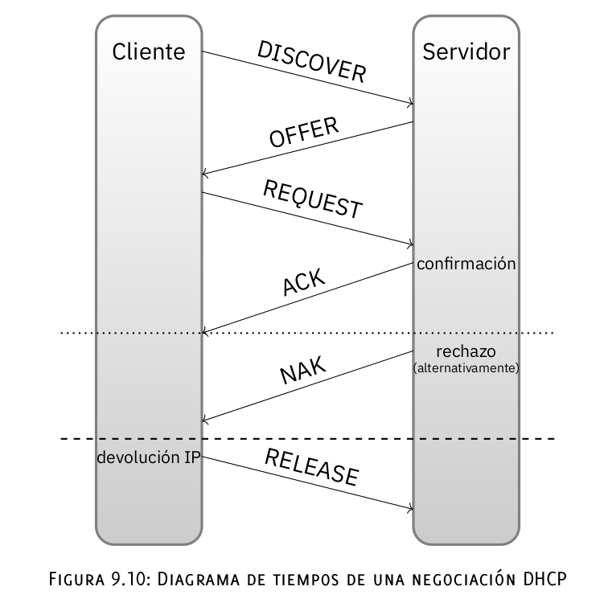
Figura 2: Las cuatro fases del protocolo DHCP — Discover, Offer, Request y Acknowledgement
Fase 1 — DHCP Discover (el cliente pide una IP)
Cuando un dispositivo (computadora, teléfono, impresora, etc.) se conecta a la red sin dirección IP, envía una solicitud llamada DHCP Discover.
- Se envía en modo broadcast a toda la red
- El cliente aún no sabe la dirección IP del servidor DHCP, por eso lo grita a todos
En criollo: El dispositivo llega a la red y grita "¡HAY ALGÚN SERVIDOR DHCP AHÍ?" (broadcast). No sabe a quién preguntarle, entonces le pregunta a todos a la vez.
Fase 2 — DHCP Offer (el servidor ofrece una IP)
Un servidor DHCP en la red recibe la solicitud y responde con un mensaje llamado DHCP Offer. La oferta incluye:
- Una IP libre disponible en su rango de direcciones
- Máscara de red
- Puerta de enlace
- Servidores DNS
- Tiempo de alquiler (lease time): si el cliente no renueva la IP durante el tiempo establecido, queda liberada para otro cliente
En criollo: El servidor DHCP escucha el grito y responde: "Yo tengo! Te ofrezco la IP 192.168.1.50 por 24 horas, con esta máscara, este gateway y este DNS."
Fase 3 — DHCP Request (el cliente acepta la oferta)
El cliente recibe la oferta y responde con un mensaje llamado DHCP Request indicando que acepta la IP ofrecida.
- También se envía en modo broadcast para que otros servidores DHCP en la red registren que esa IP fue aceptada (en caso de que haya más de un servidor DHCP en la red)
En criollo: El cliente le dice al servidor "Dale, acepto esa IP!" — y lo dice en voz alta (broadcast) para que si había otros servidores que también ofrecieron, sepan que ya eligió uno.
Fase 4 — DHCP ACK (el servidor confirma)
El servidor DHCP responde con un mensaje llamado DHCP ACK (Acknowledgement), confirmando que la dirección IP ha sido asignada y es válida para el cliente.
A partir de este momento, el cliente puede usar la dirección IP para comunicarse en la red.
En criollo: El servidor dice "Confirmado, esa IP es tuya por el tiempo acordado." Es el apretón de manos final que cierra el trato. Después de esto, el dispositivo ya tiene todo para funcionar en la red.
Comparativa DNS vs DHCP
| Aspecto | DNS | DHCP |
|---|---|---|
| Función | Traduce nombres de dominio a IPs | Asigna configuración de red automáticamente |
| Quién lo usa | El navegador/aplicación cuando necesita conectarse a un nombre | El dispositivo cuando se conecta a la red por primera vez |
| Resultado | Una dirección IP correspondiente al nombre pedido | Una dirección IP + máscara + gateway + DNS asignados al dispositivo |
| Cuándo actúa | Cada vez que se resuelve un nombre de dominio | Al conectarse a la red (o al renovar el lease) |
Glosario rápido
| Término | Definición técnica | En criollo |
|---|---|---|
| DNS | Sistema que traduce nombres de dominio en IPs | La agenda de contactos de Internet |
| TLD | Top Level Domain — dominio de nivel superior (.com, .org, .ar) | El "país" en la jerarquía de dominios |
| Dominio secundario | Nombre de la organización/sitio dentro del TLD | El "nombre del barrio" en la dirección |
| Subdominio | Subdivisión dentro de un dominio (mail, www, ftp) | La "calle" dentro del barrio |
| Caché DNS | Almacenamiento temporal de respuestas DNS ya obtenidas | Las notas donde anotás IPs ya consultadas para no repetir |
| Servidor DNS Recursivo | Servidor que busca la respuesta preguntando a otros DNS | El amigo que sabe dónde preguntar y hace todo el trabajo |
| Servidor Raíz (Root) | Servidores en la cúspide de la jerarquía DNS | Los jefes máximos del sistema DNS a nivel mundial |
| Servidor TLD | Gestiona los dominios de un tipo específico (.com, .ar) | El departamento especializado en un tipo de dominio |
| Servidor DNS Autoritativo | Da la respuesta definitiva sobre la IP de un dominio | El que tiene la información real y última sobre ese dominio |
| Registro A | Asocia nombre/dominio con una IPv4 | El "número de teléfono IPv4" del dominio |
| Registro AAAA | Asocia nombre/dominio con una IPv6 | El "número de teléfono IPv6" del dominio |
| Registro CNAME | Alias — asocia un dominio contra otro dominio | El apodo o nombre alternativo de un dominio |
| Registro MX | Define servidores de correo para un dominio | El "cartero" que sabe dónde entregar los mails |
| Registro NS | Define los servidores DNS autorizados para un dominio | Quién tiene la autoridad de responder por ese dominio |
| Registro TXT | Almacena texto para verificaciones o políticas de seguridad | Un campo libre para poner info de verificación |
| DHCP | Protocolo que asigna configuración de red automáticamente | El portero que asigna IP y datos de red a cada dispositivo nuevo |
| DHCP Discover | Mensaje broadcast del cliente buscando un servidor DHCP | El grito de "¿hay algún DHCP por ahí?" |
| DHCP Offer | Respuesta del servidor ofreciendo una IP disponible | La oferta del servidor: "te doy esta IP con estos datos" |
| DHCP Request | Respuesta del cliente aceptando la oferta | El cliente dice "acepto esa IP" en modo broadcast |
| DHCP ACK | Confirmación final del servidor que valida la asignación | El "trato hecho" que cierra la asignación de IP |
| Lease time | Tiempo de alquiler de la IP asignada por DHCP | El "contrato de alquiler" de la IP — si no renovás, la perdés |
| Broadcast | Mensaje enviado a todos los dispositivos de la red a la vez | Gritar en voz alta para que todos escuchen |
| cc-TLD | Country Code TLD — dominios de país (.ar, .mx, .es) | El TLD que identifica un país específico |
| DORA | Acrónimo de las 4 fases DHCP: Discover, Offer, Request, ACK | El proceso completo de asignación de IP por DHCP |
Multiple Choice — 30 preguntas
1. ¿Cuál es la función principal del DNS?
2. En el dominio `mail.ejemplo.com`, ¿qué representa `mail`?
3. En el dominio `mail.ejemplo.com`, ¿qué representa `.com`?
4. Cuando un usuario escribe una URL, ¿cuál es el PRIMER lugar donde el sistema busca la dirección IP?
5. ¿Qué hace un servidor DNS Recursivo cuando no tiene la respuesta en su caché?
6. ¿Cuál es la función del Servidor Raíz (Root DNS Server)?
7. ¿Qué tipo de servidores gestionan los dominios `.com`, `.org`, `.net` y los dominios de países?
8. ¿Qué es un servidor DNS Autoritativo?
9. ¿Qué sucede si el servidor DNS Autoritativo no tiene un registro DNS para el dominio consultado?
10. ¿Por qué la computadora guarda la respuesta DNS en su caché local?
11. ¿Qué tipo de registro DNS asocia un nombre de dominio con una dirección IPv4?
12. ¿Qué tipo de registro DNS asocia un nombre de dominio con una dirección IPv6?
13. ¿Para qué sirve un registro CNAME en el DNS?
14. ¿Qué registro DNS debe estar correctamente configurado para que los correos electrónicos lleguen a `@ejemplo.com`?
15. ¿Qué tipo de registro DNS define qué servidores DNS son autoritativos para un dominio?
16. ¿Para qué se usa el registro TXT en DNS?
17. ¿Qué es DHCP?
18. Además de la dirección IP, ¿qué otra información puede proveer el servidor DHCP? (elegí la opción más completa)
19. ¿Cuáles son las 4 fases del protocolo DHCP en orden correcto?
20. ¿Qué es el mensaje `DHCP Discover`?
21. ¿Por qué el `DHCP Discover` se envía en modo broadcast?
22. ¿Qué contiene el mensaje `DHCP Offer`?
23. ¿Cuál es la razón por la que el `DHCP Request` también se envía en modo broadcast?
24. ¿Qué significa `DHCP ACK`?
25. ¿Qué ocurre con una dirección IP asignada por DHCP si el cliente no la renueva en el tiempo de alquiler establecido?
26. ¿Cuál es el acrónimo que representa las 4 fases del DHCP?
27. ¿Qué diferencia principal hay entre DNS y DHCP?
28. Un dispositivo se conecta a una red con servidor DHCP. ¿En qué fase el dispositivo ya puede usar la IP para comunicarse?
29. ¿Qué tipo de registro DNS debería consultarse para saber si `ftp.ejemplo.com` es un alias de `servidor1.ejemplo.com`?
30. Un administrador de red quiere confirmar que cuando alguien busca `www.miempresa.com`, resuelve a la IP `203.0.113.5`. ¿Qué tipo de registro DNS debe verificar? ---
16. SSH — Secure Shell
SSH — ¿Qué es?
SSH es tanto el nombre del protocolo como el nombre del programa que lo implementa. Se utiliza para acceder a servidores de forma remota y permite administrarlos mediante un intérprete de comandos (terminal).
SSH se usa en dos roles:
| Rol | Descripción |
|---|---|
| Cliente SSH | El equipo o dispositivo desde el cual se desea establecer la conexión remota segura |
| Servidor SSH | El equipo o servidor al que se conecta el cliente SSH |
Además de la administración remota, SSH permite:
- Copiar datos de forma segura entre equipos
- Gestionar claves RSA para no escribir contraseñas al conectarse
- Tunelizar el tráfico de cualquier otra aplicación por un canal seguro SSH
En criollo: SSH es como un tubo blindado que conecta tu compu con un servidor remoto. Todo lo que mandás va encriptado, aunque alguien esté escuchando el cable no puede leer nada. Antes de SSH existía Telnet, que mandaba todo en texto plano — imaginate mandar tu contraseña por internet sin cifrado.
Instalación y configuración
Generalmente el cliente SSH ya viene instalado en la mayoría de las distribuciones, por lo que podés conectarte a servidores remotos apenas termina la instalación del sistema operativo.
Sin embargo, SSH como servidor puede no venir instalado. Para instalarlo:
apt-get install openssh-server
Los archivos de configuración de OpenSSH se encuentran en /etc/ssh. Hay dos archivos de configuración:
1. sshd_config — Configuración del servidor SSH
Este archivo describe la configuración de SSH en su rol de servidor.
Parámetros importantes:
port: especifica el puerto TCP utilizado. Por default está comentado y usa el puerto 22. Si se descomenta, generalmente se hace para cambiarlo por otro puerto.
Las buenas prácticas recomiendan cambiar el puerto 22 por otro para evitar ataques o intentos de ingreso no autorizados.
PubkeyAuthentication: permite la autenticación mediante clave privada.
AuthorizedKeysFile: indica al servidor dónde están almacenadas las claves públicas de los usuarios. Por default es .ssh/authorized_keys (directorio y archivo en el home del usuario).
PasswordAuthentication: permite la autenticación mediante contraseñas.
PermitRootLogin: por default está configurado como "Prohibit-password" (por seguridad). Para fines prácticos de la cursada, se cambia a "yes" quitándole el comentario (#):
PermitRootLogin yes
2. ssh_config — Configuración del cliente SSH
Este archivo describe la configuración de SSH en su rol de cliente.
Parámetros importantes:
Host: su valor puede ser una lista de patrones y determina que las opciones subsiguientes se apliquen a conexiones a los hosts especificados.
port: puerto TCP del servidor al que nos vamos a conectar.
PubkeyAuthentication: autenticación mediante clave pública (se recomienda dejar en "yes").
IdentityFile: archivo que contiene la clave privada.
PasswordAuthentication: si se permite la autenticación mediante contraseña.
En criollo:
sshd_configes el reglamento del portero del edificio (servidor): qué llaves acepta, a quién deja entrar, por qué puerta.ssh_configes la libreta del visitante (cliente): qué puerta tocar, qué llave usar, con qué usuario presentarse.
Forma de uso
Hay dos formas de usar el comando SSH:
# Forma 1: autentica con el mismo usuario del sistema local
ssh <host>
# Forma 2: autentica con un usuario específico en el servidor remoto
ssh <usuario@host>
Ejemplo:
ssh root@192.168.0.201
En criollo:
ssh servidores como llamar por teléfono y que te atiendan con tu mismo nombre.ssh juan@servidores como llamar y pedirle que te pasen con Juan. Usás la segunda forma cuando el usuario remoto es distinto del usuario que tenés en tu máquina.
Conexión paso a paso
SSH establece la conexión siguiendo estos pasos:
Paso 1 — Conexión inicial
El cliente se conecta al servidor en el puerto 22 (o el puerto configurado).
Paso 2 — Intercambio de claves
El servidor envía su clave pública al cliente para identificarse.
Paso 3 — Verificación
El cliente verifica si ya conoce la clave pública del servidor:
- Si no la conoce, pide confirmación al usuario (el mensaje típico "Are you sure you want to continue connecting?")
Paso 4 — Establecimiento de clave de sesión
El cliente genera una clave de sesión, la cifra con la clave pública del servidor y la envía. Esta clave de sesión se usará para cifrar toda la comunicación posterior.
Paso 5 — Autenticación
El cliente se autentica mediante contraseña o clave pública.
Paso 6 — Inicio de sesión
Una vez autenticado, la conexión está segura y el usuario puede interactuar con el servidor.
En criollo: El handshake SSH es como un apretón de manos super seguro con código secreto. Primero se identifican mutuamente, después generan un código secreto único para esa sesión (que nunca viaja completo por la red), y después te autenticás. Todo esto en milisegundos, antes de que veas el prompt del servidor.
Métodos de autenticación
SSH soporta varios métodos de autenticación:
- Autenticación por contraseña
- Autenticación por clave pública/privada
- Autenticación mediante certificados
- Autenticación con Kerberos
- Autenticación basada en teclado interactivo o challenge-response
- Autenticación por agente
El apunte desarrolla los dos primeros:
Autenticación por contraseña
Es el método más básico y común. El cliente intenta conectarse y se le solicita usuario y contraseña. El servidor verifica si las credenciales coinciden.
Flujo:
1. El cliente envía el nombre de usuario al servidor
2. El servidor solicita la contraseña
3. El cliente ingresa la contraseña, que se transmite de manera cifrada al servidor
4. El servidor verifica la contraseña y si es correcta, concede acceso
Desventaja: aunque es fácil de usar, es menos seguro que otros métodos porque las contraseñas pueden ser vulnerables a ataques de fuerza bruta o robo.
En criollo: Es como entrar a un edificio mostrando tu DNI y diciendo tu contraseña. Funciona, pero si alguien adivina tu contraseña o la roba, puede entrar. Por eso no es lo más recomendable para servidores expuestos a Internet.
Autenticación por clave pública/privada
Es el método más seguro y ampliamente recomendado. El cliente genera un par de claves: una privada (que guarda en su sistema) y una pública (que copia en el servidor).
Flujo:
1. El cliente genera un par de claves (pública y privada)
2. La clave pública se almacena en el servidor en ~/.ssh/authorized_keys
3. Durante la conexión, el servidor cifra un desafío con la clave pública del cliente
4. El cliente usa su clave privada para descifrar el desafío
5. Si descifra correctamente, la autenticación es válida — sin necesidad de contraseña
Ventaja: solo quien posee la clave privada puede autenticarse. No se intercambian contraseñas.
En criollo: Es como un candado con dos llaves: vos le dejás al servidor tu "llave pública" (que puede el servidor guardar sin miedo — solo sirve para cifrar). Cuando querés entrar, el servidor te manda algo cifrado con esa llave pública, y solo vos podés abrirlo con tu llave privada. Si podés abrirlo, es porque sos vos.
¿Cómo generar las claves pública/privada?
Se usa el comando ssh-keygen:
ssh-keygen
Se recomienda leer el manual (
man ssh-keygen) para investigar tamaño de clave, tipos disponibles y uso de contraseñas en las claves.
Al ejecutarlo, el generador pregunta dónde guardar las claves. Si no se indica otro lugar, se guardan en el home del usuario dentro del directorio .ssh:
Generating public/private rsa key pair.
Enter file in which to save the key (/root/.ssh/id_rsa):
Luego pregunta si querés establecer una frase como contraseña de las claves (passphrase). Para la cursada se deja en blanco (solo Enter):
Enter passphrase (empty for no passphrase):
Enter same passphrase again:
El proceso genera dos archivos:
| Archivo | Descripción | ¿Compartir? |
|---|---|---|
id_rsa |
Clave privada | NO SE DEBE COMPARTIR |
id_rsa.pub |
Clave pública | SE DEBE copiar al servidor remoto |
Salida del comando:
Your identification has been saved in /root/.ssh/id_rsa
Your public key has been saved in /root/.ssh/id_rsa.pub
The key fingerprint is:
SHA256:Dov8cjwUdek9xEr8NQVF5vSI2gBW14NkXipwl051rTk root@debian11-CA
En criollo (clave pública vs privada): La clave privada es como la llave de tu casa — jamás se la das a nadie, la guardás muy bien. La clave pública es como la cerradura que instalás en la puerta del servidor — la podés compartir con el mundo porque sola no sirve para entrar, necesita la llave privada para funcionar.
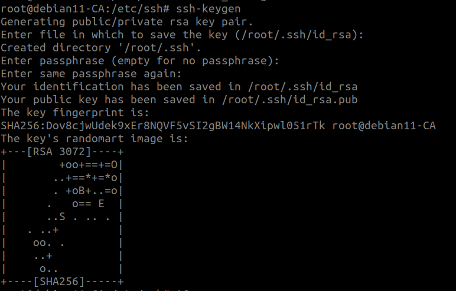
Figura 2: Salida del comando ssh-keygen durante la generación del par de claves
¿Cómo copiar la clave pública al servidor remoto?
Para que el servidor acepte el ingreso por claves, primero hay que copiar la clave pública dentro del archivo authorized_keys del servidor. Para esto se usa el comando:
ssh-copy-id usuario@servidor_remoto
Ejemplo:
ssh-copy-id root@192.168.0.201
Salida:
/usr/bin/ssh-copy-id: INFO: attempting to log in with the new key(s), to filter out any that are already installed
/usr/bin/ssh-copy-id: INFO: 1 key(s) remain to be installed -- if you are prompted now it is to install the new keys
root@192.168.0.201's password:
Al intentar copiar la clave, pide la contraseña del usuario (la última vez que necesitarás escribirla). Después de ingresarla:
Number of key(s) added: 1
Now try logging into the machine, with: "ssh 'root@192.168.0.201'"
and check to make sure that only the key(s) you wanted were added.
La clave pública queda copiada y la próxima conexión no pedirá contraseña. A partir de ese momento, la autenticación es por par de claves.
En criollo:
ssh-copy-ides el comando que instala tu candado (clave pública) en la puerta del servidor. Lo hacés una sola vez, poniendo la contraseña por última vez, y de ahí en adelante entrar es automático.
Cerrar una sesión SSH
Para desloguearse de una conexión SSH establecida:
exit
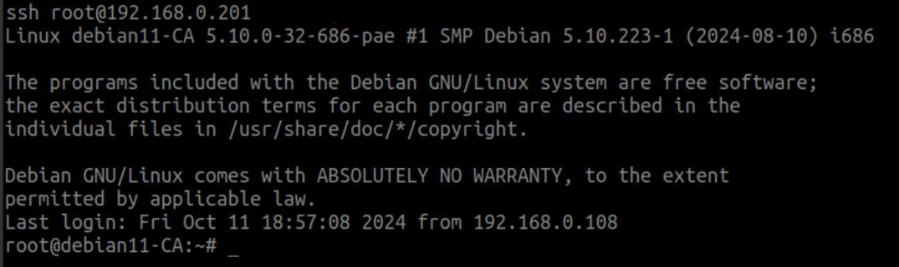
Figura 4: Conexión SSH exitosa sin solicitud de contraseña tras configurar las claves
Glosario rápido
| Término | Definición técnica | En criollo |
|---|---|---|
| SSH (Secure Shell) | Protocolo y programa para acceso remoto seguro mediante línea de comandos | El tubo blindado para conectarte a otro servidor desde la terminal |
| Cliente SSH | Dispositivo que inicia la conexión SSH hacia un servidor | La compu desde la que te conectás |
| Servidor SSH | Dispositivo que recibe y gestiona las conexiones SSH entrantes | La compu/servidor al que te conectás |
| OpenSSH | Implementación open source del protocolo SSH | El paquete de software que implementa SSH en Linux |
openssh-server |
Paquete que instala el servidor SSH en Debian/Linux | Lo que instalás para que tu máquina acepte conexiones SSH entrantes |
| Puerto 22 | Puerto TCP por defecto de SSH | La "puerta" por donde escucha SSH, aunque se recomienda cambiarlo |
sshd_config |
Archivo de configuración del servidor SSH | El reglamento del portero que define cómo se acepta a quienes entran |
ssh_config |
Archivo de configuración del cliente SSH | La libreta del visitante con las reglas de cómo conectarse |
PermitRootLogin |
Opción que controla si el usuario root puede autenticarse por SSH | El permiso (o no) de que el "dueño del sistema" entre por SSH |
AuthorizedKeysFile |
Archivo donde el servidor guarda las claves públicas autorizadas | La lista de "candados" aprobados para entrar sin contraseña |
PasswordAuthentication |
Parámetro que habilita o deshabilita la autenticación por contraseña | El switch para permitir o bloquear el acceso con usuario/contraseña |
PubkeyAuthentication |
Parámetro que habilita la autenticación por par de claves | El switch para permitir entrada con llave en vez de contraseña |
| Clave pública | Una de las dos claves del par — se puede compartir libremente | El candado que instalás en la puerta del servidor |
| Clave privada | La otra clave del par — nunca se comparte | La llave que guardás vos — si la perdés o alguien la roba, problema |
ssh-keygen |
Comando para generar un par de claves pública/privada | El "fabricante de llaves" del sistema SSH |
id_rsa |
Archivo de la clave privada generada por ssh-keygen | El archivo que NUNCA compartís — es tu llave privada RSA |
id_rsa.pub |
Archivo de la clave pública generada por ssh-keygen | El archivo que SÍ compartís con los servidores a los que querés conectarte |
ssh-copy-id |
Comando que copia la clave pública al servidor remoto | El que instala tu candado (clave pública) en la puerta del servidor |
authorized_keys |
Archivo en el servidor donde se guardan las claves públicas autorizadas | La lista de candados que el servidor acepta para autenticación |
.ssh/ |
Directorio en el home del usuario que contiene las claves SSH | La carpeta donde viven todos los archivos relacionados con SSH |
| Handshake SSH | Proceso de negociación y autenticación al inicio de una conexión SSH | El saludo seguro entre cliente y servidor antes de empezar a trabajar |
| Clave de sesión | Clave temporal generada por el cliente para cifrar esa conexión específica | El código secreto único de esa sesión — se tira al cerrar la conexión |
| Fuerza bruta | Ataque que prueba muchas contraseñas hasta encontrar la correcta | El método de "probar todas las combinaciones posibles" para robar acceso |
| Passphrase | Contraseña opcional que protege las claves privadas generadas | Un candado extra sobre tu llave privada — si alguien la roba, no la puede usar |
| RSA | Algoritmo de cifrado asimétrico usado para el par de claves | El algoritmo matemático detrás de las claves SSH |
| Tunelización SSH | Usar SSH para hacer pasar tráfico de otras aplicaciones por el canal seguro | Meter el tráfico de otra app dentro del tubo blindado de SSH |
Multiple Choice — 30 preguntas
1. ¿Qué es SSH?
2. ¿Cuál es el rol del "Cliente SSH"?
3. ¿Cuál de las siguientes NO es una función de SSH?
4. ¿Qué comando se usa para instalar el servidor SSH en Debian?
5. ¿En qué directorio se encuentran los archivos de configuración de OpenSSH?
6. ¿Qué archivo configura SSH en su rol de servidor?
7. ¿Qué archivo configura SSH en su rol de cliente?
8. ¿Cuál es el puerto TCP que usa SSH por defecto?
9. ¿Por qué las buenas prácticas recomiendan cambiar el puerto por defecto de SSH?
10. ¿Qué hace el parámetro `PermitRootLogin yes` en `sshd_config`?
11. ¿Cuál es el valor por default de `PermitRootLogin` en `sshd_config`?
12. ¿Qué indica el parámetro `AuthorizedKeysFile` en `sshd_config`?
13. ¿Cuáles son las dos formas de usar el comando `ssh`?
14. ¿Qué hace `ssh root@192.168.0.201`?
15. ¿Cuál es el primer paso del proceso de conexión SSH?
16. Durante el establecimiento de la conexión SSH, ¿qué hace el servidor en el paso de "intercambio de claves"?
17. ¿Qué sucede si el cliente SSH no reconoce la clave pública del servidor durante la verificación?
18. ¿Para qué se usa la "clave de sesión" en SSH?
19. ¿Cuál es la principal desventaja de la autenticación por contraseña en SSH?
20. En la autenticación por clave pública/privada, ¿qué hace el servidor durante la autenticación?
21. ¿Qué archivo debe generarse con `ssh-keygen` y copiarse al servidor para usar autenticación por clave?
22. ¿Qué comando se usa para generar el par de claves SSH?
23. Si no se especifica otro directorio al ejecutar `ssh-keygen`, ¿dónde se guardan las claves por defecto?
24. Al ejecutar `ssh-keygen`, ¿qué pasa si dejás en blanco la passphrase?
25. ¿Cuál es la diferencia entre `id_rsa` e `id_rsa.pub`?
26. ¿Qué comando se usa para copiar la clave pública al servidor remoto?
27. ¿En qué archivo del servidor remoto se guarda la clave pública al usar `ssh-copy-id`?
28. ¿Qué ocurre la próxima vez que te conectás por SSH después de haber ejecutado exitosamente `ssh-copy-id`?
29. ¿Qué comando se usa para cerrar una sesión SSH activa?
30. Un administrador quiere que los usuarios se autentiquen solo con claves pública/privada (sin contraseña) en el servidor SSH. ¿Qué parámetros debería modificar en `sshd_config`? ---
Parciales de práctica
4 parciales con 16 preguntas cada uno (6.25 pts c/u). Mismo formato que el examen real: multiple choice, desarrollo y completar.
Parcial 1 — 1er Parcial 2025 1C (Real)
Parcial tomado en la cursada. 16 preguntas · 100 puntos
1. ¿Qué dirección IP es conocida como localhost?
2. ¿Cuál de los siguientes comandos es para cambiar al propietario de un archivo a un usuario en particular?
3. ¿Qué archivo se utiliza para configurar SSH Server?
4. ¿Para qué se utiliza el comando apt-get update?
apt-get update sirve para actualizar la lista local de paquetes que están disponibles en los repositorios configurados. No instala ni actualiza paquetes, solo descarga la información más reciente sobre qué paquetes existen y en qué versión.5. Definir, con palabras propias, cuál es la función del kernel.
6. Explicar el propósito del comando rm, las diferencias con rmdir y cuál utilizaría para el borrado de directorios.
rm elimina archivos y, con la opción -r, también directorios de forma recursiva (incluyendo todo su contenido). rmdir solo elimina directorios vacíos. Para borrar un directorio con contenido se usa rm -r directorio. Si el directorio está vacío, se puede usar rmdir.7. ¿En qué directorio se encuentran los “espacios de trabajo” de los usuarios?
/home/. Cada usuario creado en el sistema tiene por defecto una carpeta con su nombre dentro de ese directorio. Por ejemplo, el usuario juan tendrá su home en /home/juan.8. ¿Para qué se utiliza un DNS?
9. ¿Cuál es el UID del usuario root?
10. Si se utiliza el comando chmod 0600 Archivo1, ¿quién tendrá permisos de lectura y escritura?
11. ¿Cuáles son los tres parámetros más importantes que se deben configurar de una interfaz de red? Enumerar y explicar.
2. Gateway (puerta de enlace): permite la conexión entre dispositivos en redes distintas. Generalmente es la primera IP disponible de la red.
3. Netmask (máscara de red): indica qué parte de la IP identifica a la red y qué parte identifica al host. Ej: 255.255.255.0 para una red /24.
12. ¿Qué son los usuarios especiales? Dar un ejemplo.
www-data (usuario del servidor web Apache/Nginx), nobody, daemon.13. Definir el concepto de distribución GNU/Linux.
14. es el directorio raíz de Linux.
15. es el número correspondiente al descriptor de archivo de la salida standard.
16. Para buscar un paquete en los repositorios, utilizamos el comando nombre_paquete.
Parcial 2 — Comandos, FHS y Permisos
Parcial generado para práctica. 16 preguntas · 100 puntos
1. ¿Qué comando se utiliza para copiar archivos y directorios?
2. ¿Qué opción del comando ls muestra los archivos ocultos?
3. ¿En qué directorio del FHS se almacenan los archivos de configuración del sistema?
4. Explicar la diferencia entre rutas absolutas y rutas relativas. Dar un ejemplo de cada una.
/) e indica la ubicación completa. Ejemplo: /home/juan/documentos/archivo.txt.Una ruta relativa se define en relación al directorio actual. Ejemplo: si estoy en
/home/juan, la ruta relativa sería documentos/archivo.txt. Se pueden usar . (directorio actual) y .. (directorio padre).5. ¿Qué hace el comando chmod 755 script.sh? Desglosar cada dígito.
chmod 755 asigna permisos de la siguiente forma:7 (owner): r(4) + w(2) + x(1) = lectura, escritura y ejecución.
5 (grupo): r(4) + x(1) = lectura y ejecución.
5 (others): r(4) + x(1) = lectura y ejecución.
El propietario tiene control total, mientras que el grupo y otros solo pueden leer y ejecutar.
6. Explicar qué es un pipe (|) en Linux y dar un ejemplo práctico de su uso.
|) conecta la salida estándar (stdout) de un comando con la entrada estándar (stdin) del siguiente. Permite encadenar comandos.Ejemplo:
ls -la /etc | grep ssh — lista los archivos de /etc y filtra solo los que contienen “ssh” en su nombre.7. ¿Cuál es la diferencia entre redirección con > y >>?
> redirige la salida a un archivo, sobrescribiéndolo si ya existe.>> redirige la salida a un archivo, agregando el contenido al final (append) sin borrar lo que ya había.Ejemplo:
echo "hola" > archivo.txt crea/sobrescribe, echo "chau" >> archivo.txt agrega al final.8. ¿Para qué sirve el comando find? Dar un ejemplo de búsqueda por nombre.
find busca archivos y directorios en el sistema de archivos según distintos criterios (nombre, tipo, tamaño, permisos, fecha, etc.).Ejemplo:
find /home -name "*.txt" busca todos los archivos con extensión .txt dentro de /home y sus subdirectorios.9. Explicar qué es el FHS (Filesystem Hierarchy Standard) y por qué es importante.
10. ¿Cómo se sale del editor vi sin guardar cambios? ¿Y guardando?
Esc para ir al modo comando, luego escribir :q! y Enter.Para guardar y salir: presionar
Esc, luego escribir :wq (o :x) y Enter. w = write (guardar), q = quit (salir), ! = forzar.11. ¿Qué diferencia hay entre cat, head y tail?
cat muestra el contenido completo de un archivo.head muestra las primeras líneas (por defecto 10).tail muestra las últimas líneas (por defecto 10).Se puede especificar la cantidad con
-n. Ejemplo: head -n 5 archivo.txt muestra las primeras 5 líneas.12. ¿Qué comando usarías para cambiar el grupo propietario de un archivo? Dar un ejemplo.
chgrp (change group) o también chown :grupo archivo.Ejemplo:
chgrp desarrolladores proyecto.txt cambia el grupo de proyecto.txt al grupo “desarrolladores”.Con chown:
chown :desarrolladores proyecto.txt logra lo mismo.13. ¿Qué hace el comando grep y cuál es la diferencia con grep -i?
grep busca patrones de texto dentro de archivos o de la entrada estándar y muestra las líneas que coinciden.grep -i hace la búsqueda sin distinguir mayúsculas de minúsculas (case-insensitive).Ejemplo:
grep -i "error" /var/log/syslog busca “error”, “Error”, “ERROR”, etc.14. El directorio contiene los archivos de log del sistema.
15. Para ver el contenido de un archivo página por página, se utiliza el comando .
16. El descriptor de archivo número 2 corresponde a .
Parcial 3 — Redes, SSH y Administración
Parcial generado para práctica. 16 preguntas · 100 puntos
1. ¿Qué archivo almacena las contraseñas cifradas de los usuarios en Linux?
2. ¿Qué comando se usa para crear un nuevo usuario en el sistema?
3. ¿Qué máscara de red corresponde a un prefijo /24?
4. ¿Qué es DHCP y cuál es su función principal?
5. Explicar la diferencia entre autenticación SSH por contraseña y por clave pública/privada.
Por clave pública/privada: se genera un par de claves. La clave pública se copia al servidor (en
~/.ssh/authorized_keys) y la privada queda en el cliente. La autenticación se hace sin contraseña y es más segura.6. ¿Para qué sirve el archivo /etc/sudoers? ¿Cómo se debe editar?
/etc/sudoers define qué usuarios o grupos pueden ejecutar comandos con privilegios de root usando sudo. Se debe editar exclusivamente con el comando visudo, que valida la sintaxis antes de guardar para evitar errores que dejarían el sistema sin acceso a sudo.7. ¿Qué información contiene cada campo del archivo /etc/passwd? Dar un ejemplo de línea.
juan:x:1000:1000:Juan Garcia:/home/juan:/bin/bashCampos separados por
::1. Username (juan)
2. Password (x = está en /etc/shadow)
3. UID (1000)
4. GID (1000)
5. Comentario/GECOS (Juan Garcia)
6. Home directory (/home/juan)
7. Shell (/bin/bash)
8. Dada la red 192.168.1.0/24, ¿cuál es la dirección de broadcast y cuántos hosts útiles se pueden tener?
Broadcast: 192.168.1.255 (todos los bits de host en 1).
Hosts útiles: 254 (2^8 - 2 = 254). Se restan 2 porque la dirección de red (.0) y la de broadcast (.255) no se asignan a hosts.
9. ¿Qué comando se usa para ver la configuración de red actual de las interfaces? Nombrar al menos dos alternativas.
ifconfig (tradicional, paquete net-tools)ip addr show o ip a (moderno, paquete iproute2)También
ip link show para ver el estado de las interfaces sin detalles de IP.10. ¿Qué diferencia hay entre apt-get install y dpkg -i?
apt-get install descarga e instala paquetes desde los repositorios, resolviendo dependencias automáticamente.dpkg -i instala un paquete .deb local pero no resuelve dependencias — si faltan, hay que instalarlas manualmente o ejecutar apt-get -f install después.11. ¿Qué es el GID de un usuario y cómo se puede ver a qué grupos pertenece?
groups usuario o id usuario, que muestra UID, GID y todos los grupos secundarios.12. Explicar qué es SSH y para qué se utiliza.
13. ¿Qué comando se utiliza para eliminar un usuario del sistema y cuál es la diferencia al usar la opción -r?
userdel usuario para eliminar un usuario. Sin opciones, solo elimina la cuenta pero no borra su directorio home.Con
userdel -r usuario se elimina la cuenta y su directorio home junto con sus archivos.14. El puerto por defecto del servicio SSH es el .
15. Para agregar un usuario a un grupo sin sacarlo de sus grupos actuales, se usa usermod -aG usuario.
16. El archivo donde se definen los servidores DNS que usa el sistema es .
Parcial 4 — Integrador
Parcial integrador generado para práctica. 16 preguntas · 100 puntos
1. ¿Qué comando muestra el contenido de un archivo con números de línea?
2. ¿Cuál de estos NO es un tipo de usuario en Linux?
3. ¿Qué componente del sistema operativo fue creado por Linus Torvalds?
4. Si tenés un servidor con SSH habilitado y querés que solo el usuario “admin” pueda conectarse, ¿qué archivo editarías y qué directiva agregarías?
/etc/sshd_config (o /etc/ssh/sshd_config según la distro) y agregaría la directiva:AllowUsers adminLuego reiniciar el servicio con
systemctl restart sshd para que tome los cambios. Esta directiva restringe el acceso SSH exclusivamente al usuario indicado.5. Explicar paso a paso cómo crearías un usuario llamado “developer” con home directory, shell bash, y que pertenezca al grupo “devs”.
groupadd devs2. Crear el usuario:
useradd -m -s /bin/bash -g devs developer-m: crea el home directory (/home/developer)-s /bin/bash: asigna bash como shell-g devs: asigna “devs” como grupo primario3. Asignar contraseña:
passwd developer6. ¿Qué es una expresión regular? Dar un ejemplo de uso con grep.
Ejemplo:
grep "^root" /etc/passwd busca líneas que empiecen con “root” en el archivo /etc/passwd. El ^ es un ancla que indica “inicio de línea”.7. Describir qué es la virtualización y nombrar al menos dos tipos de hipervisores, con un ejemplo de cada uno.
Hipervisor Tipo 1 (bare-metal): se instala directamente sobre el hardware. Ejemplo: VMware ESXi, Hyper-V.
Hipervisor Tipo 2 (hosted): se ejecuta sobre un sistema operativo anfitrión. Ejemplo: VirtualBox, VMware Workstation.
8. ¿Qué diferencia hay entre la IP privada y la IP pública de un equipo? ¿Se puede acceder por SSH a una IP privada desde internet?
IP pública: es la dirección visible en internet, asignada por el ISP.
No se puede acceder directamente por SSH a una IP privada desde internet sin configurar port forwarding (NAT) en el router o usar una VPN.
9. ¿Qué contiene el archivo /etc/apt/sources.list y para qué se usa?
/etc/apt/sources.list contiene la lista de repositorios desde donde APT descarga e instala paquetes. Cada línea define un repositorio con su tipo (deb o deb-src), URL, distribución y componentes. Cuando se ejecuta apt-get update, se consultan estos repositorios para actualizar el índice local de paquetes.10. Explicar qué hace el siguiente comando: cat /var/log/syslog | grep -i error | wc -l
1.
cat /var/log/syslog: muestra el contenido del archivo de log del sistema.2.
grep -i error: filtra solo las líneas que contienen “error” (sin importar mayúsculas/minúsculas).3.
wc -l: cuenta la cantidad de líneas resultantes.Resultado: muestra el número total de líneas con la palabra “error” en el syslog.
11. ¿Qué hace la línea %sudo ALL=(ALL:ALL) ALL en el archivo sudoers? Explicar cada parte.
%sudo: se aplica a todos los miembros del grupo sudo (el % indica grupo).ALL=: desde cualquier host.(ALL:ALL): puede ejecutar como cualquier usuario y cualquier grupo.ALL (final): puede ejecutar cualquier comando.En resumen: cualquier miembro del grupo sudo puede ejecutar cualquier comando como cualquier usuario en cualquier host.
12. Si tengo la red 10.0.0.0 con máscara 255.255.255.0, ¿qué IP asignarías al gateway y por qué? ¿Qué IP NO podrías asignar a un host?
IPs que no se pueden asignar a un host:
- 10.0.0.0: es la dirección de red (identifica a la red).
- 10.0.0.255: es la dirección de broadcast (envía a todos los hosts de la red).
13. ¿Qué es la licencia GPL y por qué es importante en el contexto de GNU/Linux?
14. El comando para generar un par de claves SSH es .
15. El directorio almacena los binarios esenciales del sistema disponibles para todos los usuarios.
16. Para redirigir la salida de error (stderr) a un archivo, se usa archivo.txt.